Guía de usuario y de administrador
Dominar FileManager
De la primera conexión al uso avanzado: configure sus fuentes, proteja los accesos, automatice sus árboles de carpetas y gestione todo el ciclo documental dentro de Dolibarr.
La suite documental
más completa
para Dolibarr.
Gestión electrónica de documentos (GED), documentos de las fichas de Dolibarr y almacenamiento en la nube, editores PDF, de imágenes y Office, firmas electrónicas, versiones, documentos con fecha de validez, permisos detallados, árboles de carpetas automáticos y mantenimiento programado — reunidos en una sola interfaz, sin salir de Dolibarr.
Índice
- Parte I · Descubrir FileManager
- 1Presentación y convenciones de lectura
- 2Instalación y primera puesta en marcha
- 3La pantalla del explorador
- 4Las fuentes de documentos
- 5Vistas, vista previa y estado de los documentos
- Parte II · El día a día
- 6Navegar y seleccionar
- 7Crear e importar
- 8Organizar los documentos
- 9Eliminar y restaurar: la papelera
- 10Buscar y encontrar
- 11Descargar y enviar por correo
- Parte III · Trabajar con los documentos
- 12El editor PDF
- 13Las herramientas PDF
- 14El editor de imágenes
- 15Documentos Office: vista previa y edición en línea
- 16Las versiones de los documentos
- 17Documentos con fecha de validez
- 18Firmas electrónicas
- 19Combinación de correspondencia: el asistente paso a paso
- 20Escribir una plantilla de combinación
- 21Campos, fórmulas y datos de Dolibarr
- 22Combinación de correspondencia: ejemplos paso a paso
- 23Los paquetes PDF
- 24La bandeja de documentos en una ficha
- 25Los documentos de una ficha de Dolibarr
- 26El visor automático de las listas
- 27Fabricación, lotes y dosier de trazabilidad
- Parte IV · Compartir y controlar
- 28Compartir un documento
- 29Permisos y solicitudes de acceso
- Parte V · Administración
- 30Configurar el módulo
- 31Fuentes y almacenamiento
- 32Explorador y búsqueda en el contenido
- 33Integración ERP
- 34Office y PDF
- 35Ciclo de vida: versiones y fechas de validez
- 36Configuración de las firmas
- 37Árboles de carpetas: importación, scripts y automatización
- 38Configuración del uso compartido
- 39Seguridad y acceso
- 40Notificaciones y correos
- 41Mantenimiento
- 42Tareas programadas
- Parte VI · Anexos
- 43Atajos de teclado
- 44Solución de problemas
- 45Para los integradores
- 46Glosario
- 47Puesta en marcha paso a paso
Descubrir FileManager
Qué hace FileManager, cómo instalarlo y la pantalla del explorador: fuentes, vistas, vista previa e indicadores de estado.
- 1Presentación y convenciones de lectura
- 2Instalación y primera puesta en marcha
- 3La pantalla del explorador
- 4Las fuentes de documentos
- 5Vistas, vista previa y estado de los documentos
1 Presentación y convenciones de lectura
FileManager reúne todos los documentos de su Dolibarr en un único explorador: los de la gestión electrónica de documentos (GED), los guardados en las fichas (presupuestos, pedidos, facturas, proyectos…) y los de sus almacenamientos externos. No se limita a archivarlos: los abre, los edita, guarda sus versiones, los firma, los comparte y vigila sus fechas de caducidad, sin salir de Dolibarr.
Qué puede hacer con FileManager
- Encontrarlo todo en un solo lugar: GED, documentos de las fichas de Dolibarr, mediateca y almacenamientos conectados (Nextcloud, Google Drive, OneDrive, S3, recurso compartido de red, FTP).
- Buscar rápido: filtro instantáneo, búsqueda por palabra clave y búsqueda dentro de los archivos PDF y Office, filtros por ficha, tipo de documento, fecha y estado, favoritos y archivos recientes.
- Trabajar con los documentos en el navegador: editor PDF (anotar, firmar, ocultar, fusionar, comprimir, OCR), editor de imágenes, edición Office en línea con Collabora Online u ONLYOFFICE Docs.
- Conservar el historial: versiones de los archivos y de las fichas, restauración, versiones protegidas que nunca se eliminan, papelera, registro de las acciones (y, si lo desea, de las lecturas), exportable.
- Vigilar las caducidades: documentos con fecha de validez (certificados, seguros, acreditaciones) con recordatorios.
- Hacer firmar: firma interna, solicitudes de firma a personas externas, sellos de empresa, pruebas.
- Compartir: enlaces públicos protegidos (caducidad, cuota, seguimiento), uso compartido entre entidades del mismo Dolibarr.
- Controlar los accesos: permisos por carpeta y por archivo, herencia, solicitudes de acceso.
- Estructurar y automatizar: modelos de árbol de carpetas, carpetas creadas para cada nuevo tercero o proyecto, control de los documentos que faltan.
- Producir documentos: plantillas Office rellenadas con los datos de Dolibarr (combinación de correspondencia), conjuntos PDF que reúnen varios documentos en un solo PDF.
- Trazar la fabricación: versiones de las órdenes de fabricación, de las listas de materiales y de los envíos, documentos de los lotes, y un dosier de trazabilidad que reúne en un solo PDF todos los documentos de un producto entregado.
- Integrar: sus otros módulos de Dolibarr y sus programas pueden actuar sobre los documentos a través de la API de FileManager, con los mismos controles que en pantalla.
A quién va dirigido este manual
| Lector | Partes que leer |
|---|---|
| Usuario habitual | Parte I (descubrir la pantalla), parte II (crear, archivar, buscar), parte III según sus tareas (editores, versiones, fechas de validez, firmas). |
| Responsable de equipo, gestor documental | Partes I a IV: uso compartido, permisos y solicitudes de acceso. |
| Administrador de Dolibarr | Capítulo Instalación, parte V (configuración pestaña por pestaña, tareas programadas, mantenimiento) y los anexos. |
Convenciones de lectura
El manual describe la interfaz tal como aparece en español, versión 4.5.470. Los textos de la interfaz se citan exactamente como aparecen en pantalla.
| En el texto | Significado |
|---|---|
| Guardar Cancelar | Un botón de la interfaz, con su texto exacto. Los botones violetas son las acciones principales. |
| Una ruta de menú que seguir, de izquierda a derecha. | |
| 3 | Un marcador numerado: remite al mismo número, rodeado en naranja, en la captura cercana. |
| Ctrl+U | Un atajo de teclado (en Mac, Cmd sustituye a Ctrl). |
| clic derecho | Abre el menú contextual de un archivo o de una carpeta. En una pantalla táctil: pulsación larga. |
Los procedimientos están numerados: siga los pasos en orden. Unos recuadros señalan lo que merece atención:
Una información útil para entender lo que ocurre.
Un atajo o una forma más rápida de hacer algo.
Una acción irreversible, o un ajuste que afecta a la seguridad o a otros usuarios.
Lo que ve depende de sus permisos
FileManager aplica los permisos de Dolibarr y sus propios permisos a cada carpeta y a cada archivo. Por eso dos personas no ven necesariamente los mismos botones: un botón que falta suele significar que no tiene el permiso correspondiente, o que el administrador no ha activado la función. Los controles los hace el servidor: ocultar un botón nunca es la única protección. Si se le deniega un documento, puede solicitar el acceso (capítulo Permisos y accesos).
Requisitos
| Dolibarr | 16.0 o posterior (este manual se ha realizado con Dolibarr 23). |
| PHP | 7.4 o posterior; extensiones útiles: curl, json, mbstring, zip, gd o imagick, openssl, fileinfo. |
| Navegador | Una versión reciente de Chrome, Edge, Firefox, Brave o Safari. |
| Módulos de Dolibarr | OAuth (se activa automáticamente con FileManager). El módulo nativo GED / SGD debe estar desactivado: FileManager lo sustituye. |
| Opcional | Collabora Online para la edición Office; Stirling PDF o Ghostscript para las herramientas PDF avanzadas; el módulo Multicompany para el uso compartido entre entidades. |
2 Instalación y primera puesta en marcha
Instalar FileManager lleva unos minutos: se sube el archivo, se activa el módulo, se dan los permisos a los grupos adecuados y se abre el explorador. Este capítulo está dirigido al administrador de Dolibarr.
Instalar el módulo
Haga una copia de seguridad de la base de datos y de la carpeta documents de Dolibarr, y compruebe que el directorio htdocs/custom está declarado en conf.php (lo está en una instalación estándar).
- Conéctese a Dolibarr con una cuenta de administrador.
- Abra , pestaña Instalar módulo externo.
- Elija el archivo
module_filemanager-4.5.470.ziprecibido con su compra y lance la subida. Dolibarr lo descomprime enhtdocs/custom/filemanager. - Vuelva a la lista de módulos y busque FileManager.
- Haga clic en el interruptor de activación y espere a que termine la operación sin recargar la página.
Al activarse, FileManager crea sus tablas, permisos, menús, tareas programadas y plantillas de correo electrónico (instaladas en cada entidad). Dolibarr activa también el módulo OAuth, del que depende FileManager. FileManager sustituye al módulo GED nativo de Dolibarr y se declara incompatible con él: desactive ese módulo si estaba activado. Los documentos no se mueven: FileManager trabaja sobre las mismas carpetas de documentos que Dolibarr.
Para pasar a una nueva versión, despliegue el nuevo archivo desde la misma pantalla y después desactive y vuelva a activar el módulo: se crean las nuevas tablas, constantes y entradas de menú, y se conservan sus ajustes y sus documentos.
Los menús, los ajustes y las plantillas de correo pertenecen a cada entidad. Active el módulo en cada entidad afectada y revise su configuración entidad por entidad.
Dar los permisos
FileManager añade sus propios permisos en . Asígnelos preferentemente a grupos y no a usuarios: cree por ejemplo Lectores GED, Colaboradores GED y Administradores documentales y abra después la pestaña Permisos de cada grupo, sección FileManager.
| Permiso (texto mostrado) | Lo que permite |
|---|---|
| Leer el gestor de archivos | Abrir el explorador, ver y previsualizar los documentos permitidos. Necesario para todos. |
| Crear/modificar en el gestor de archivos | Crear carpetas y documentos, subir, renombrar, mover. |
| Eliminar en el gestor de archivos | Enviar a la papelera y eliminar. |
| Configurar el gestor de archivos | Abrir la configuración del módulo; vincular una carpeta a un objeto. |
| Leer / Crear/modificar / Eliminar los documentos con validez | Los tres niveles de acceso a los documentos con fecha de validez. |
| Configurar los permisos de acceso a los archivos | Abrir « Gestionar permisos » en todas las carpetas y todos los archivos. Resérvelo a los administradores y a la dirección. |
| Configurar los correos del gestor de archivos | Cambiar los ajustes de correo electrónico del módulo. |
| Compartir documentos (crear enlaces para compartir) | Crear recursos compartidos públicos. |
| Gestionar todas las comparticiones de documentos | Ver, modificar y revocar los recursos compartidos de todos. |
| Ver las comparticiones de sus subordinados | Vista de responsable: los recursos compartidos de las personas a su cargo. |
| Usar su firma personal en los PDF | Aplicar la propia firma en el editor PDF. |
| Crear solicitudes de firma · Cancelar sus propias solicitudes de firma | Enviar un documento a la firma y cancelar las propias solicitudes. |
| Ver / Gestionar las solicitudes de firma de sus subordinados | Seguimiento de las solicitudes de firma por el responsable. |
| Ver / Gestionar todas las solicitudes de firma | Seguimiento de todas las solicitudes (administrador, responsable jurídico). |
| Usar el sello de la empresa en los PDF · Gestionar los sellos de empresa | Aplicar un sello; crear y modificar los sellos. |
| Leer/usar · Gestionar las plantillas de correspondencia · Generar un documento de correspondencia (lee los datos de los empleados) | Plantillas de cartas alimentadas con los datos de los empleados. |
| Quitar la protección de las versiones | Desproteger una versión marcada como importante (capítulo Versiones). |
| Gestionar las comparticiones entre entidades | Compartir documentos con otra entidad autorizada (Multicompany). |
No dé « Configurar los permisos de acceso a los archivos » a los usuarios habituales: este permiso permite a cualquiera cambiar el acceso de cualquier carpeta. Pruebe siempre sus ajustes con una cuenta no administradora: un administrador lo ve todo y no sirve para comprobar una restricción.
Primera puesta en marcha
FileManager no tiene contraseña propia: utiliza la cuenta, los grupos, la entidad y la sesión de Dolibarr. Abra el menú superior GED: el explorador se abre en la fuente elegida por el administrador (la GED por defecto). El menú de la izquierda da acceso a todas las funciones.
- Nuevo documento: crear un documento vacío o basado en una plantilla, en cualquier lugar.
- Explorador de archivos: abrir el explorador en la GED (Documentos GED) o en los documentos de las fichas (Documentos ERP).
- Validez: la lista de los documentos con fecha de validez, el alta de un documento y los tipos de documento.
- Solicitudes de acceso: las solicitudes que ha recibido y las que ha enviado.
- Mis recursos compartidos: los enlaces para compartir que ha creado.
- Firmas: crear una solicitud, seguir las solicitudes enviadas y recibidas, las firmas externas y sus firmas.
- Configuración: visible con el permiso de configuración; abre la configuración del módulo (parte V).
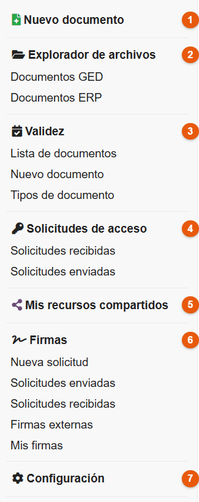
Las entradas mostradas dependen de sus permisos y de las funciones activadas. Si el menú GED no aparece, consulte el capítulo Solución de problemas.
Comprobar la instalación en cinco minutos
- Con la cuenta de administrador, cree una carpeta « Prueba » en la GED y dé al grupo Colaboradores GED acceso de lectura y escritura a esa carpeta (clic derecho, Gestionar permisos, véase el capítulo Permisos y accesos).
- Con una cuenta de prueba del grupo Colaboradores GED, abra , entre en « Prueba » y arrastre un PDF desde su ordenador: aparece con su miniatura.
- Haga clic en el archivo: el panel de vista previa lo muestra a la derecha.
- Haga clic derecho en el archivo y después en Eliminar: va a la papelera, desde donde puede restaurarlo.
- Vuelva a conectarse con una cuenta que solo tenga acceso de lectura: los comandos de escritura no aparecen.
Por defecto, FileManager funciona en modo restrictivo: un usuario que no es administrador solo ve una carpeta si un permiso se la abre. Por eso la prueba empieza con un permiso sobre la carpeta. El modo se ajusta en .
3 La pantalla del explorador
El explorador es la pantalla principal de FileManager. Se abre desde el menú superior GED, o mediante . Se lee de arriba abajo: se elige una fuente, se recorren sus carpetas y se actúa sobre los documentos.
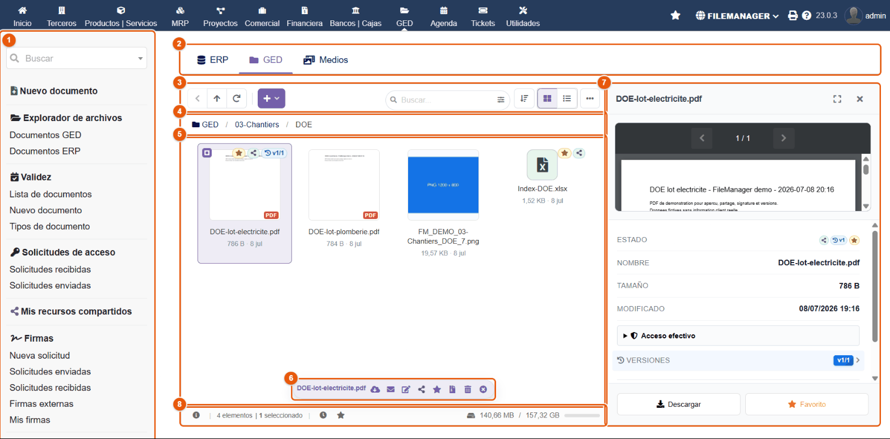
- Menú izquierdo de FileManager (capítulo Instalación).
- Pestañas de fuentes: ERP, GED, Medios y los almacenamientos conectados (capítulo Fuentes).
- Barra de herramientas: navegación, botón + Nuevo, búsqueda, orden y vistas.
- Ruta de navegación: la ruta de la carpeta mostrada; haga clic en un elemento para volver a él.
- Zona de archivos: las carpetas y después los archivos de la carpeta actual, en cuadrícula o en lista.
- Barra de acciones de la selección: aparece cuando hay un elemento seleccionado.
- Panel de vista previa: el contenido y la información del elemento seleccionado.
- Barra de estado: ayuda, número de elementos, archivos recientes, favoritos, espacio en disco.
La barra de herramientas
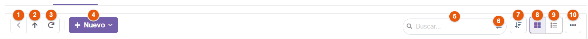
| Marcador | Botón | Función | Atajo |
|---|---|---|---|
| 1 | Atrás | Vuelve a la carpeta mostrada antes. | — |
| 2 | Carpeta superior | Sube un nivel. | Retroceso |
| 3 | Refrescar | Vuelve a leer la carpeta en el servidor (útil después de una acción hecha en otro lugar). | F5 |
| 4 | + Nuevo | Menú de creación e importación: subir archivos, nueva carpeta, nuevo documento, acceso directo, importación desde una URL o desde una fuente externa (capítulo Crear). | — |
| 5 | Buscar... | Filtra la carpeta al instante; Intro lanza la búsqueda completa. | Ctrl+F |
| 6 | Opciones de búsqueda | Abre las opciones y los filtros (capítulo Buscar). | — |
| 7 | Clasificar | Ordena por nombre (de la A a la Z), fecha (los más recientes primero), tamaño (los más grandes primero) o tipo. Su elección se recuerda. En la vista de lista, hacer clic en el título de una columna también ordena, y un segundo clic invierte el orden. | — |
| 8 | Cuadrícula | Mosaicos y miniaturas. | — |
| 9 | Lista | Una fila por elemento, en columnas. | — |
| 10 | Más acciones | Galería de imágenes, panel de vista previa, papelera, ayuda, menú lateral (véase más abajo). | — |
Cuando la ventana es estrecha, algunos comandos pasan automáticamente a Más acciones; sus atajos siguen funcionando.
El menú « Más acciones »
- Galería de imágenes: recorre las imágenes de la carpeta a pantalla completa (capítulo Vistas y vista previa).
- Panel de vista previa (Ctrl+I): muestra u oculta el panel de la derecha.
- Papelera: los elementos eliminados, para restaurarlos o eliminarlos definitivamente (capítulo Eliminar y papelera).
- Ayuda contextual (F1): la ayuda integrada de la pantalla.
- Ocultar/Mostrar menú lateral (Ctrl+B): da todo el ancho al explorador.
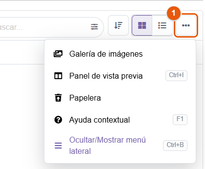
La barra de acciones de la selección
En cuanto se selecciona un elemento, aparece una barra flotante en la parte inferior de la zona de archivos 6. Muestra el nombre del elemento y sus acciones más habituales: descargar, enviar por correo, renombrar, compartir, añadir a favoritos, propiedades, eliminar, deseleccionar. Con varios elementos seleccionados, ofrece las acciones agrupadas: Mover a..., Copiar a..., Descargar como ZIP, Enviar por correo, Crear un archivo ZIP, Eliminar, Deseleccionar (capítulo Navegar y seleccionar).
La barra de estado
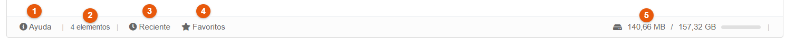
- Ayuda: una introducción a las funciones de la pantalla.
- Número de elementos de la carpeta y número de elementos seleccionados.
- Reciente: los últimos archivos que ha abierto.
- Favoritos: sus archivos y carpetas fijados.
- Espacio en disco: espacio ocupado por los documentos y capacidad del disco.
Según su situación, la barra de estado muestra también un botón Faltantes (n) (documentos obligatorios ausentes de las carpetas que puede abrir, capítulo Buscar) y el acceso a las solicitudes de acceso pendientes.
El menú contextual
Un clic derecho en un archivo o una carpeta abre su menú contextual. Solo ofrece las acciones posibles para ese elemento, con sus permisos: un PDF ofrece el editor PDF y las herramientas PDF, una imagen el editor de imágenes, un documento Office la edición con Collabora, una carpeta la personalización y la vinculación a un objeto de Dolibarr. Los menús se detallan en el capítulo Organizar.
La tecla ? muestra la lista de los atajos de teclado; también figura en el anexo (Atajos de teclado).
4 Las fuentes de documentos
Las pestañas de la parte superior del explorador son las fuentes: cada una es un espacio de almacenamiento distinto, con sus propias reglas. Hacer clic en una pestaña muestra la raíz de la fuente.
| Fuente | Qué contiene | Escritura |
|---|---|---|
| ERP | Los documentos guardados en las fichas de Dolibarr: presupuestos, pedidos, facturas, envíos, contratos, proyectos, productos, terceros… | Solo lectura en el explorador; un documento se añade desde la ficha del objeto. |
| GED | El espacio documental libre de la empresa: sus carpetas, su plan de clasificación. | Sí, según sus permisos y los de la carpeta. |
| Medios | La mediateca de Dolibarr: imágenes, logotipos, archivos del módulo Sitio web, utilizables en las plantillas de documentos y en las comunicaciones. | Sí, según sus permisos. |
| Almacenamientos conectados | Las conexiones en la nube creadas por el administrador: Nextcloud u ownCloud, Google Drive, Microsoft OneDrive, Amazon S3 y compatibles, FTP, recurso compartido de red SMB/CIFS. | Según la conexión: puede declararse de solo lectura. |
El administrador elige las fuentes visibles, su orden y la que se abre por defecto (, capítulo Fuentes y almacenamiento).
ERP: los documentos de las fichas de Dolibarr
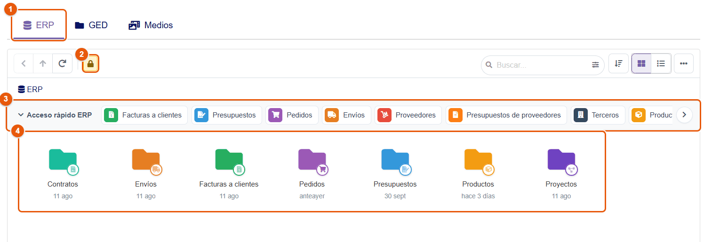
- La pestaña ERP.
- El indicador del candado: la fuente es de solo lectura; el botón + Nuevo no aparece.
- Acceso rápido ERP: un clic abre directamente un tipo de objeto (facturas a clientes, presupuestos, pedidos, envíos…). La flecha de la derecha desplaza la lista; el chevrón de la izquierda la pliega.
- Las carpetas por tipo de objeto. Cada una contiene una carpeta por objeto, con el nombre de su referencia (por ejemplo
FA2610-0042), que guarda sus documentos.
Al pasar el ratón por encima de la carpeta de un objeto, una burbuja de información lo resume: referencia, importe, estado y tercero. El pequeño icono de la parte superior derecha de la carpeta abre la ficha de Dolibarr del objeto.
Solo ve los objetos que Dolibarr le permite consultar: un comercial limitado a sus clientes solo ve sus documentos.
La fuente ERP se puede recorrer pero no escribir desde el explorador. Para adjuntar un documento a un presupuesto o una factura, utilice la ficha del objeto: la pestaña Documentos de Dolibarr, o el panel Documentos de FileManager en la ficha (capítulo La bandeja de documentos en una ficha). También se puede vincular una carpeta de la GED a un objeto para que sus documentos se guarden allí (capítulo Los documentos de una ficha de Dolibarr).
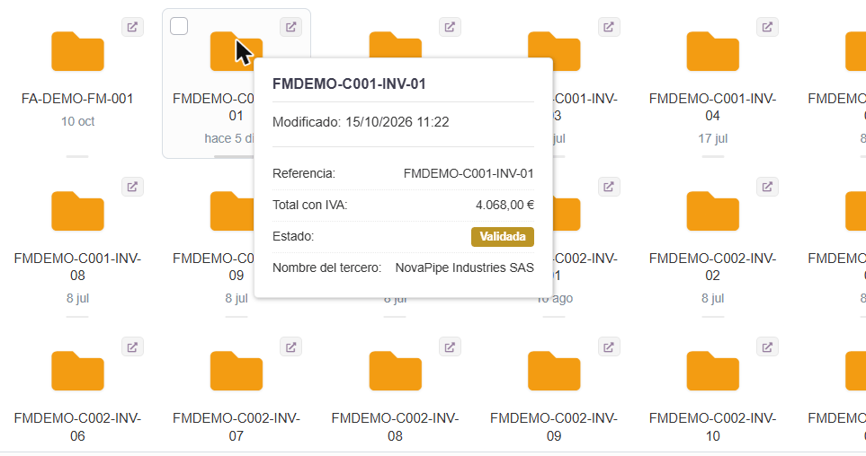
GED: el espacio documental de la empresa
La GED es el espacio que usted organiza libremente: carpetas por departamento, por cliente, por obra… Aquí es donde se crean las carpetas, los documentos y los árboles de carpetas. Cada carpeta y cada archivo puede llevar sus propios permisos (capítulo Permisos y accesos). Los elementos eliminados pasan por la papelera.
Un pequeño candado en el mosaico de una carpeta o de un archivo indica un acceso restringido: no está abierto a todos. Si tiene el permiso de gestionar los permisos, un clic en el candado los abre.
Medios: la mediateca
La fuente Medios es la mediateca de Dolibarr. Sus archivos los utilizan las páginas del módulo Sitio web, las plantillas de documentos y las comunicaciones (una imagen insertada en un correo, por ejemplo).
La mediateca está hecha para publicar: no guarde en ella documentos confidenciales. Utilice la GED para los documentos internos.
Los almacenamientos conectados
Cada conexión en la nube creada por el administrador aparece como una pestaña adicional, con el nombre que el administrador le ha dado (por ejemplo « Nextcloud agencia »). Se recorre como la GED: crear, subir, renombrar, mover, compartir… Los permisos de Dolibarr y los de FileManager se aplican además de los permisos de la cuenta remota.
No todos los proveedores ofrecen las mismas funciones: algunas operaciones pueden faltar según el servicio (la configuración da los detalles, capítulo Fuentes y almacenamiento). Una conexión declarada de solo lectura muestra el candado y oculta los comandos de escritura.
Una conexión también puede servir de almacenamiento a la propia GED: entonces trabaja en la pestaña GED, pero los archivos se guardan en el almacenamiento elegido por el administrador.
5 Vistas, vista previa y estado de los documentos
Cuadrícula o lista, panel de vista previa, pantalla completa, galería: FileManager muestra el contenido de un documento sin descargarlo. Los pequeños indicadores de los mosaicos resumen su estado: compartido, con versiones, en firma, cerca de su fecha de caducidad…
Cuadrícula o lista
Los dos botones de la derecha de la barra de herramientas alternan entre la Cuadrícula (iconos) (mosaicos y miniaturas, ideal para imágenes y PDF) y la Lista (detalles) (una fila por elemento, para carpetas grandes). Su elección se conserva de una sesión a otra. En ambas vistas, las carpetas se muestran siempre antes que los archivos.
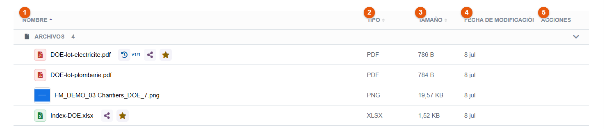
- Nombre: la flecha indica la columna de orden y su sentido.
- Tipo: la extensión del archivo, o « Carpeta ».
- Tamaño.
- Fecha de modificación.
- Acciones: aparecen al pasar el ratón por la fila.
Hacer clic en un título ordena la lista por esa columna; un segundo clic invierte el orden. Las carpetas y los archivos forman dos grupos que se pueden plegar (« Archivos 4 » en la captura): el chevrón de la derecha del grupo lo pliega. En la vista de lista, el botón Densidad de la lista de la barra de herramientas elige el espaciado de las filas: Compacta, Normal o Cómoda.
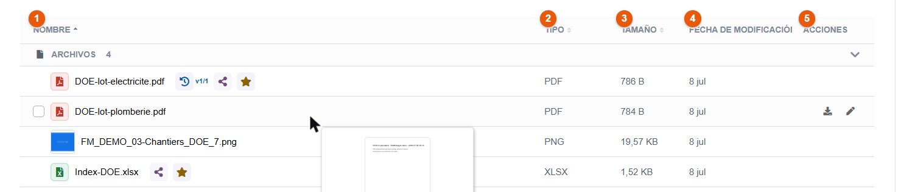
Al pasar el ratón por una fila, aparece una miniatura del documento, con las acciones rápidas a la derecha: Descargar (flecha) y Renombrar (lápiz), esta última si tiene acceso de escritura. La casilla a la izquierda del nombre añade la fila a la selección.
Ordenar
El botón Clasificar ofrece cuatro órdenes: Nombre (de la A a la Z), Fecha (los más recientes primero), Tamaño (los más grandes primero) y Tipo (por extensión). El orden activo aparece resaltado y marcado con una flecha. Se recuerda para sus próximas visitas.
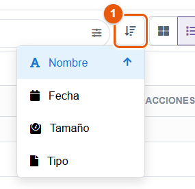
El panel de vista previa
Hacer clic en un archivo lo muestra en el panel de la derecha. El panel se abre y se cierra mediante o con Ctrl+I; arrastre su borde izquierdo para ensancharlo.
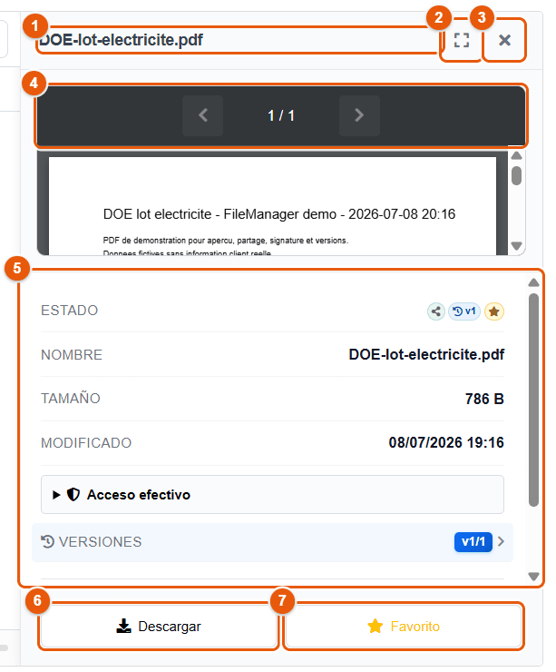
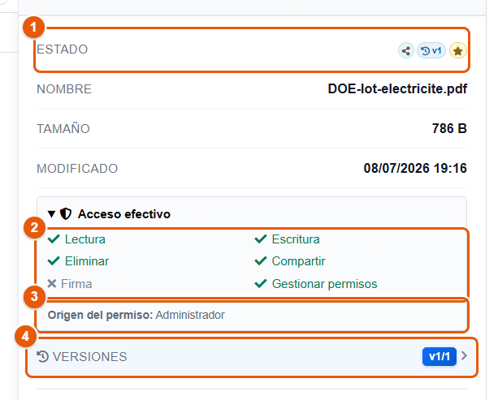
En la captura de la izquierda:
- El nombre del archivo.
- Pantalla completa: abre el documento en toda la ventana.
- Cerrar el panel.
- El visor: para un PDF, la paginación (página actual / número de páginas) y el desplazamiento.
- La información: nombre, tamaño, fecha de modificación, estado, propietario, ruta, objeto de Dolibarr vinculado si lo hay.
- Descargar el archivo.
- Favorito: lo añade a sus favoritos (o lo quita).
En la captura de la derecha:
- Estado: los indicadores del documento (véase más abajo); se puede hacer clic en cada uno.
- Acceso efectivo: lo que usted puede hacer con este documento — leer, escribir, eliminar, compartir, firmar, gestionar los permisos. Una marca verde significa permitido, una cruz gris denegado.
- Origen del permiso: de dónde viene ese acceso (administrador, permiso de la carpeta, herencia, recurso compartido…). Útil para entender por qué una acción es posible o no.
- Versiones: el número de versiones; un clic abre el historial (capítulo Versiones).
Lo que puede mostrar la vista previa
La vista previa muestra en el navegador los PDF, las imágenes, los documentos Word, Excel, PowerPoint y OpenDocument (maquetados, con sus hojas y sus diapositivas), los antiguos formatos .doc y .ppt (convertidos al vuelo), el vídeo y el audio, el texto y el código (con resaltado), el Markdown y las páginas HTML. Los detalles, formato por formato, están en el capítulo Documentos Office: vista previa y edición en línea. Para los demás formatos, el panel muestra la información del archivo y el botón Descargar.
Un doble clic en un archivo lo abre a pantalla completa (o, en una carpeta, entra en ella). A pantalla completa, los botones de la parte superior derecha permiten imprimir, descargar, reducir y cerrar; Esc la cierra.
La galería de imágenes
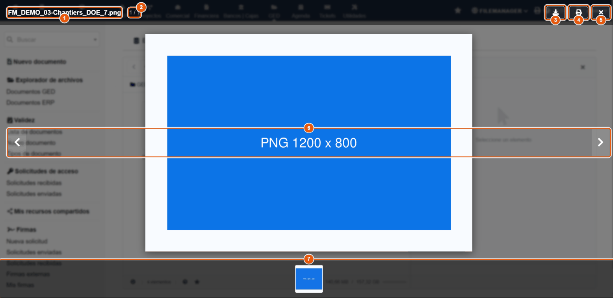
- El nombre de la imagen mostrada.
- Su posición en la carpeta (aquí 1 / 1).
- Descargar la imagen.
- Imprimir la imagen.
- Cerrar la galería (o Esc).
- Imagen anterior / Imagen siguiente (o las teclas de flecha).
- La tira de miniaturas: un clic muestra la imagen.
Los indicadores de estado
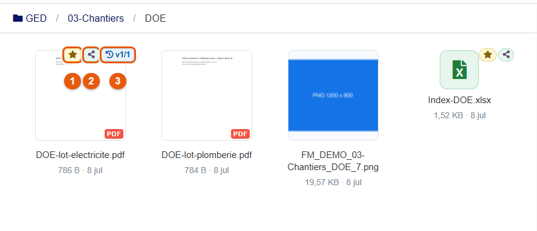
Los indicadores aparecen en el mosaico (vista de cuadrícula), junto al nombre (vista de lista) y en la línea Estado del panel de vista previa. Su burbuja de información da los detalles; en varios de ellos se puede hacer clic.
| Indicador | Significado | Al hacer clic |
|---|---|---|
| Reloj « v2/3 » | El archivo tiene versiones: versión actual / número de versiones. | Abre el historial de versiones. |
| Candado | Acceso restringido: el documento no está abierto a todos. | Abre sus permisos (si tiene el permiso). |
| Compartir | Uno o varios enlaces para compartir están activos. | Abre el uso compartido del documento. |
| Escudo | Guardado cifrado en el servidor (leído y escrito de forma transparente). | — |
| Lápiz con una persona | En edición por otro usuario. | — |
| Documento con una pluma | Firma: pendiente, documento firmado o solicitud caducada. | — |
| Llave | Hay una solicitud de acceso pendiente. | — |
| Estrella | En sus favoritos. | — |
| Ojo | Solo lectura. | — |
| Reloj de arena / triángulo | Documento con fecha de validez: válido (reloj de arena lleno), caduca en menos de 30 días (reloj de arena vaciándose), caducado (triángulo rojo). | Abre la ficha de validez. |
| Enlace, carpeta abierta, flecha saliente | Acceso directo a un archivo, una carpeta o una dirección web; un enlace tachado significa que no se encuentra el destino. | — |
| Diagrama | Carpeta vinculada a un objeto de Dolibarr. | — |
Los filtros de búsqueda permiten encontrar los documentos por estado — compartidos, en firma, alerta de validez, con versiones… (capítulo Buscar y encontrar).
El día a día
Navegar, crear, importar, organizar, eliminar, buscar y enviar documentos.
- 6Navegar y seleccionar
- 7Crear e importar
- 8Organizar los documentos
- 9Eliminar y restaurar: la papelera
- 10Buscar y encontrar
- 11Descargar y enviar por correo
6 Navegar y seleccionar
Se desplaza por FileManager como en el explorador de archivos de su ordenador: doble clic para entrar en una carpeta, ruta de navegación para volver atrás, clic para seleccionar. El teclado permite hacerlo todo sin ratón.
Desplazarse
- Entrar en una carpeta: doble clic en su mosaico (o Intro cuando está seleccionada).
- Subir: hacer clic en un elemento de la ruta de navegación le lleva a ese nivel; el botón Carpeta superior o la tecla Retroceso sube un nivel.
- Volver: el botón Atrás vuelve a abrir la carpeta mostrada antes.
- Refrescar: el botón o F5 vuelve a leer la carpeta — útil si un compañero acaba de dejar un documento en ella.
- Cambiar de fuente: haga clic en una pestaña (ERP, GED, Medios…) en la parte superior del explorador.
La dirección de la página sigue a la carpeta mostrada: puede añadirla a los marcadores de su navegador o copiarla para dársela a un compañero. La verá si tiene acceso a ella.
Seleccionar
| Gesto | Efecto |
|---|---|
| Clic | Selecciona el elemento y lo muestra en el panel de vista previa. |
| Ctrl+clic | Añade el elemento a la selección, o lo quita. |
| Mayús+clic | Selecciona todos los elementos entre el último en el que se hizo clic y este. |
| Casilla (al pasar el ratón, vista de lista) | Añade la fila a la selección. |
| Ctrl+A | Selecciona toda la carpeta. |
| Teclas de flecha (Mayús para ampliar) | Desplazan la selección de un elemento al siguiente. |
| Inicio / Fin | Primer / último elemento de la carpeta. |
| Esc | Anula la selección. |
La barra de acciones de la selección
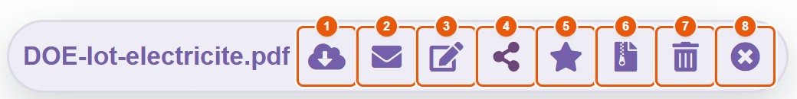
- Descargar el archivo.
- Enviar por correo (capítulo Enviar por correo).
- Renombrar.
- Compartir: crear un enlace para compartir (capítulo Compartir).
- Añadir a favoritos / Quitar de favoritos.
- Crear un archivo ZIP que contenga el elemento.
- Eliminar: lo envía a la papelera.
- Deseleccionar.
Para una carpeta, la barra ofrece además Personalizar (color e icono); para un archivo ZIP, Extraer; en los resultados de búsqueda, Ir a la carpeta principal. Las acciones mostradas dependen de sus permisos: con un acceso de solo lectura, solo quedan la visualización, la descarga, el correo y los favoritos.
Con varios elementos seleccionados, la barra indica cuántos y las acciones agrupadas:
| Acción | Efecto |
|---|---|
| Mover a... | Elegir una carpeta de destino, en la misma fuente o en otra. |
| Copiar a... | La misma elección; los originales se quedan donde están. |
| Descargar como ZIP | Descarga un archivo comprimido que contiene la selección. |
| Enviar por correo | Adjunta los archivos seleccionados a un correo (20 MB en total como máximo). |
| Crear un archivo ZIP | Crea el archivo comprimido en la carpeta actual. |
| Eliminar | Envía la selección a la papelera, tras confirmación. |
| Deseleccionar | Anula la selección. |
Arrastrar y soltar
- Desde su ordenador: arrastre archivos sobre la zona de archivos; la zona cambia de color y empieza la subida (capítulo Crear e importar).
- Dentro del explorador: arrastre uno o varios elementos seleccionados sobre una carpeta para moverlos a ella.
Cortar, copiar, pegar
Ctrl+C (copiar) o Ctrl+X (cortar) sobre la selección y después, en la carpeta de destino, Ctrl+V (pegar). El menú contextual ofrece también Copiar a... y Mover a..., que abren un selector de carpeta (capítulo Organizar).
Favoritos y archivos recientes
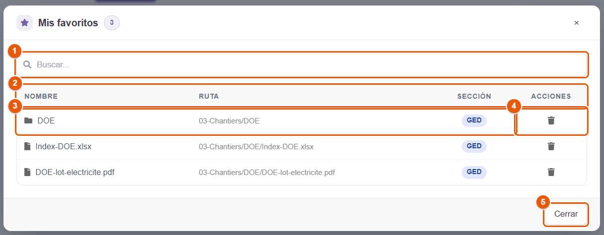
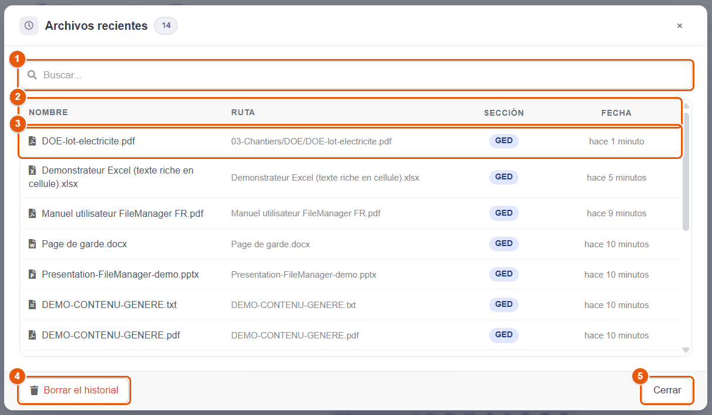
Favoritos: fije un archivo o una carpeta con la estrella (barra de acciones, panel de vista previa o menú contextual Añadir a favoritos). La ventana Mis favoritos, abierta desde la barra de estado, los enumera con su ruta y su fuente:
- Buscar...: filtra la lista.
- Las columnas Nombre, Ruta, Sección (la fuente) y Acciones.
- Hacer clic en una fila abre el elemento en el explorador.
- La papelera quita el elemento de los favoritos (el archivo en sí no se toca).
- Cerrar.
Recientes: la ventana Archivos recientes de la barra de estado enumera los últimos archivos que ha abierto, los más recientes primero, con el mismo filtro y las mismas columnas; un clic vuelve a abrir el archivo. Borrar el historial 4 vacía la lista. Los favoritos y los archivos recientes son personales.
El administrador puede desactivar los favoritos o los archivos recientes ().
7 Crear e importar
Todo lo que añade un elemento a la carpeta actual parte del botón + Nuevo: subir archivos, crear una carpeta, un documento Office o un acceso directo, importar desde una dirección web o desde otra fuente. El botón solo aparece si puede escribir en la carpeta.
El menú tiene dos partes:
Crear
- Cargar archivos (Ctrl+U): desde su ordenador.
- Nueva carpeta (Mayús+F).
- Nuevo documento (Mayús+D): un documento Office en blanco o basado en una plantilla.
- Crear acceso directo: a una dirección web, un archivo o una carpeta.
Importar
- Importar desde URL: descarga un archivo público directamente en la carpeta.
- Importar archivos/carpetas externos: copia elementos desde otra fuente (ERP, otra carpeta de la GED, almacenamiento conectado).
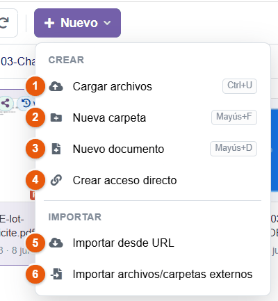
Subir archivos desde su ordenador
- Abra la carpeta de destino.
- Haga clic en + Nuevo y después en Cargar archivos (o Ctrl+U), y elija uno o varios archivos.
- Una barra de progreso sigue cada archivo; no cierre la página antes del final.
Más rápido: arrastre los archivos desde el explorador de archivos de su ordenador sobre la zona de archivos. Cambia de color, y la subida empieza en cuanto los suelta. Los archivos se suben uno tras otro.
| Tamaño máximo | Lo fija el administrador (50 MB por defecto), dentro del límite permitido por el servidor. |
| Tipos de archivo | Solo se aceptan las extensiones permitidas por el administrador; los ejecutables y los scripts se rechazan siempre. |
| Nombre ya utilizado | El archivo no sobrescribe nada: se guarda con un nombre nuevo, por ejemplo informe_1.pdf. Para sustituir un documento conservando su historial, utilice las versiones (capítulo Versiones). |
| Antivirus | Si el antivirus de Dolibarr está configurado, cada archivo se analiza al subirlo. |
| Espacio en disco | La subida se rechaza si el espacio libre del servidor baja del mínimo fijado por el administrador. |
En una carpeta vinculada a un objeto de Dolibarr (capítulo Los documentos de una ficha de Dolibarr), los archivos subidos se guardan en los documentos del objeto y aparecen en su ficha.
Crear una carpeta
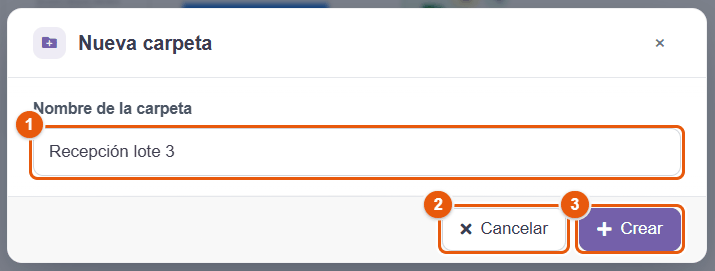
- Haga clic en + Nuevo y después en Nueva carpeta (o Mayús+F).
- Escriba el Nombre de la carpeta 1. Se aceptan los acentos, los espacios y los demás alfabetos; los caracteres reservados por los sistemas de archivos (
/ \ : * ? " < > |) se sustituyen por un guion bajo. - Haga clic en + Crear 3, o en Cancelar 2.
La nueva carpeta hereda los permisos de su carpeta superior (capítulo Permisos y accesos).
Crear un documento
La ventana Nuevo documento crea un archivo Office en blanco o basado en una plantilla de la biblioteca. Se abre mediante + Nuevo › Nuevo documento, con Mayús+D, o mediante Nuevo documento en el menú izquierdo.
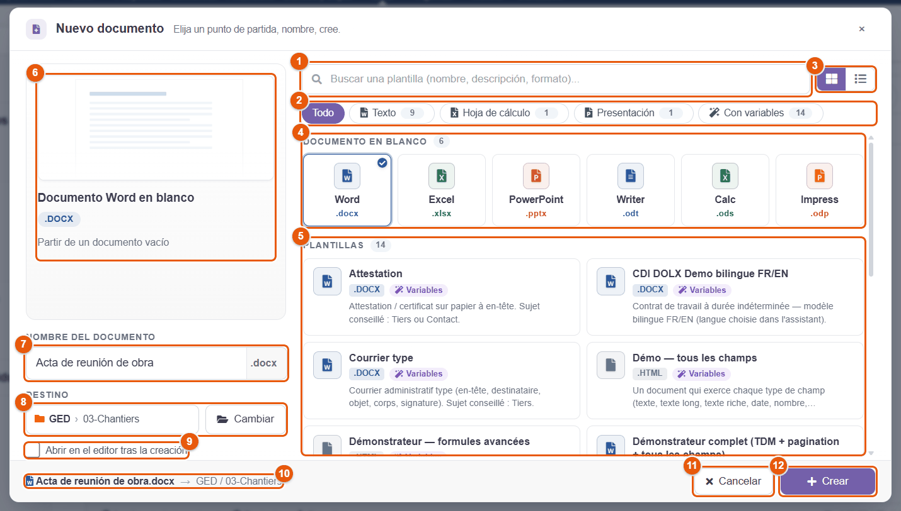
- Buscar una plantilla por nombre, descripción o formato.
- Filtros: todos, texto, hoja de cálculo, presentación, plantillas con variables.
- Plantillas mostradas en mosaicos o en lista.
- Documento en blanco: Word, Excel, PowerPoint (formatos de Microsoft) o Writer, Calc, Impress (formatos OpenDocument).
- Plantillas: la biblioteca de plantillas de su empresa.
- La vista previa de la elección actual y su descripción.
- Nombre del documento; la extensión se añade automáticamente.
- Destino: la carpeta donde se creará el documento; Cambiar abre un selector de carpeta.
- Abrir en el editor tras la creación: abre el documento en el editor Office (si la edición Office está configurada).
- El resumen: nombre final y carpeta de destino.
- Cancelar.
- + Crear.
A partir de una plantilla con variables
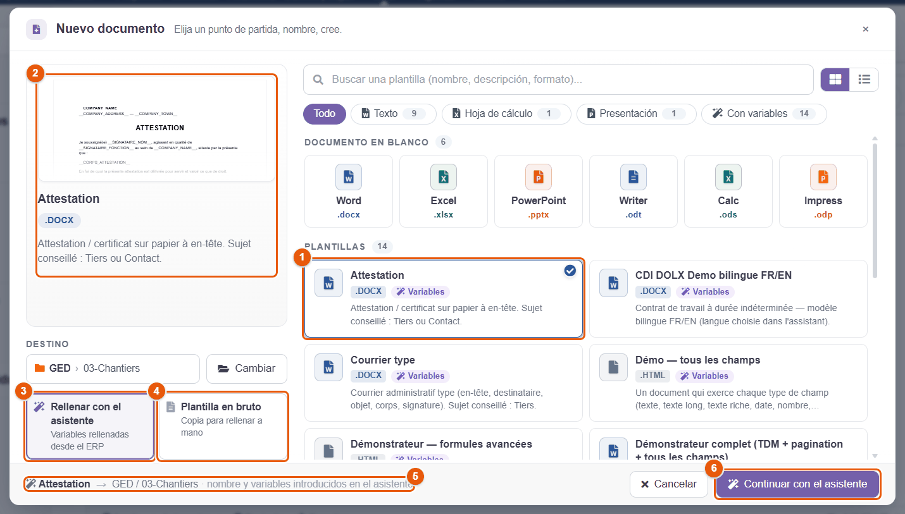
Una plantilla marcada Variables contiene campos que rellenar (nombre del cliente, dirección, importe…). Una vez elegida 1 (aparece su vista previa 2), se ofrecen dos modos:
- Rellenar con el asistente 3: las variables se rellenan previamente a partir de una ficha de Dolibarr (tercero, contacto, presupuesto…) que usted elige; completa los demás campos en un formulario y después se produce el documento. El botón pasa a ser Continuar con el asistente 6.
- Plantilla en bruto 4: una simple copia de la plantilla, para completar a mano.
El resumen 5 recuerda lo que se va a crear. El asistente de combinación de correspondencia se describe en el capítulo Combinación de correspondencia: el asistente paso a paso, y el diseño de las plantillas en el capítulo Escribir una plantilla de combinación.
Crear un acceso directo
Un acceso directo es un elemento de la carpeta que apunta a otro lugar: evita duplicar un archivo o buscar un enlace.
- Tipo de acceso directo: Enlace web, Archivo o Carpeta virtual.
- Nombre mostrado en la carpeta.
- URL (enlace web) o el destino elegido en un selector (archivo, carpeta).
- Modo de apertura: Abrir en esta pestaña o Abrir en una nueva pestaña.
- Cancelar.
- Crear.
Un acceso directo lleva un indicador (enlace, carpeta abierta o flecha saliente). Si su destino se elimina, un indicador de enlace tachado lo señala. Eliminar un acceso directo nunca elimina su destino.
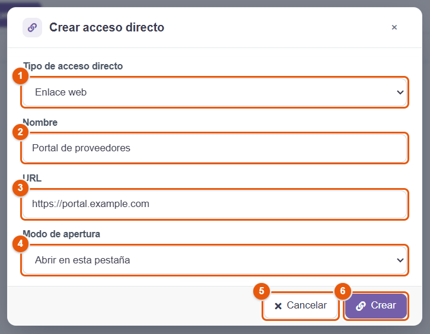
Importar desde una URL
- Importar desde URL: la dirección del archivo (http o https). Las direcciones locales, privadas o reservadas están bloqueadas.
- Nombre del archivo: propuesto a partir de la dirección, modificable.
- Reemplazar el archivo existente si el nombre ya existe: si no, se elige un nombre nuevo.
- Autenticación de descarga: Ninguna, Usuario / contraseña, Token Bearer o Cabecera personalizada, para un archivo protegido.
- Cancelar.
- Importar.
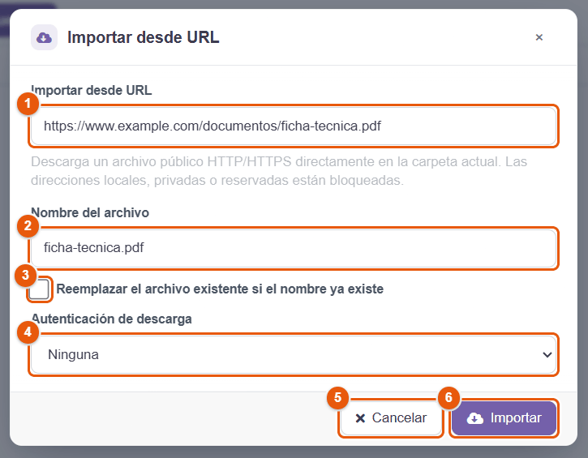
Importar archivos o carpetas desde otra fuente
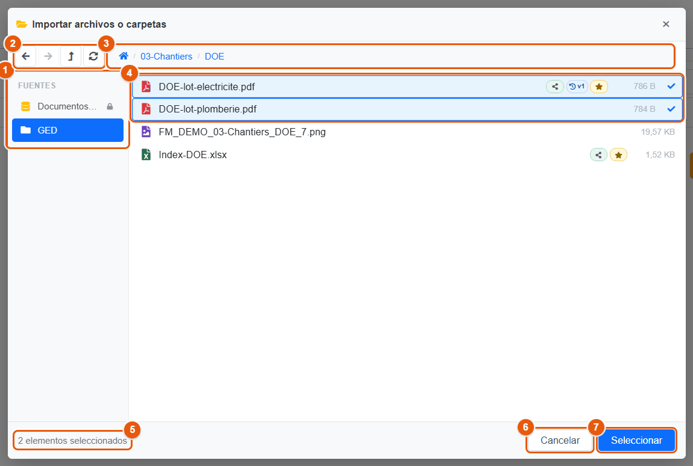
- Fuentes: documentos ERP, espacio GED, almacenamientos conectados.
- Navegación: atrás, adelante, carpeta superior, actualizar.
- La ruta de la carpeta recorrida; un clic vuelve atrás.
- Haga clic en los archivos o carpetas que importar: una marca los señala.
- El número de elementos seleccionados.
- Cancelar.
- Seleccionar: copia los elementos en la carpeta actual. Los originales se quedan donde están.
Una notificación indica el número de elementos importados y, si los hay, los que han fallado (permisos, nombre no válido…).
8 Organizar los documentos
Renombrar, mover, copiar, duplicar, comprimir, personalizar una carpeta: todo pasa por el menú contextual (clic derecho) o por la barra de acciones de la selección. Las acciones ofrecidas dependen del tipo de elemento y de sus permisos.
El menú contextual de un archivo
- Vista previa: abre el documento a pantalla completa.
- Las herramientas propias del tipo: para un PDF, Editar el PDF, Herramientas PDF (submenú) y Firmas (en gris si la firma no está disponible); para una imagen, el editor de imágenes; para un documento Office, Editar con Collabora y Convertir a PDF.
- Clasificación: Mover a..., Copiar a..., Duplicar, Crear un archivo ZIP.
- Renombrar y Eliminar.
- Difusión: Descargar, Compartir documento, Enviar por correo electrónico, Copiar enlace.
- Añadir a favoritos y Propiedades.
- Gestión: Gestionar permisos, Agregar a documentos con validez, Versiones de archivos.
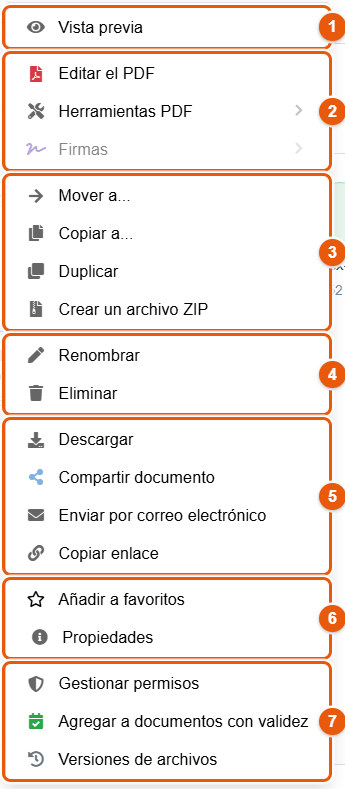
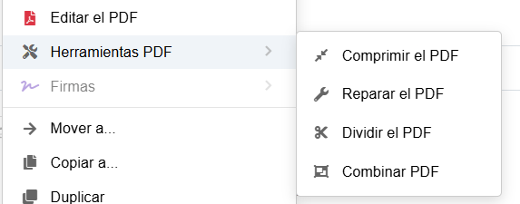
El menú contextual de una carpeta
Una carpeta ofrece Abrir, las mismas acciones de clasificación, Renombrar, Eliminar, Copiar enlace, Añadir a favoritos, Propiedades, Gestionar permisos y, con el permiso de configuración, Vincular a un objeto… (capítulo Los documentos de una ficha de Dolibarr).
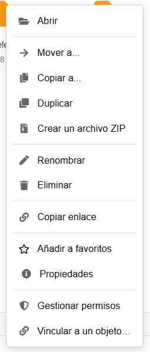
Renombrar
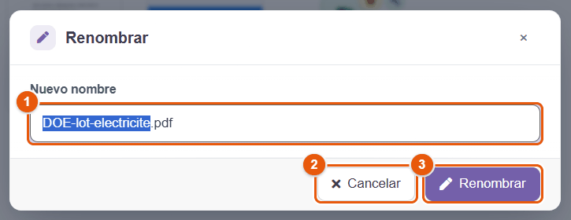
- Clic derecho en el elemento, Renombrar (o F2).
- El nombre aparece preseleccionado sin su extensión 1: escriba directamente el nombre nuevo.
- Haga clic en Renombrar 3 o en Cancelar 2.
Los permisos, las versiones, los recursos compartidos, los favoritos y los vínculos con las fichas siguen al elemento renombrado.
Mover o copiar a otra carpeta
- El elemento (o el número de elementos) afectado.
- Origen: la fuente de destino; puede mover o copiar a otra fuente (de la GED a un almacenamiento conectado, por ejemplo).
- La ruta recorrida; un clic vuelve atrás.
- Las subcarpetas: un clic entra en la carpeta.
- Anular.
- Mover aquí (o Copiar aquí): a la carpeta mostrada.
La ventana se abre mediante Mover a... o Copiar a... (menú contextual o barra de acciones de una selección múltiple). Arrastrar y soltar sobre una carpeta y Ctrl+X / Ctrl+V también mueven los elementos.
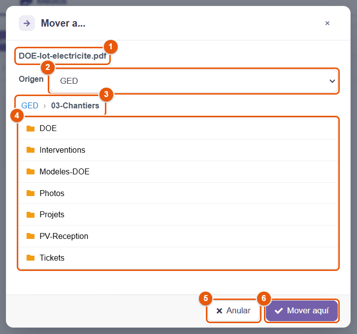
Mover a otra carpeta puede cambiar quién tiene acceso: un elemento que hereda de su carpeta toma los permisos de su nueva carpeta. Revise los permisos después de un traslado delicado.
Duplicar
Duplicar crea una copia del elemento en la misma carpeta, con otro nombre. Es la forma más rápida de partir de un documento existente.
Los archivos ZIP
- Crear un archivo ZIP: sobre un elemento o una selección; FileManager propone un nombre de archivo, que puede cambiar, y después crea el archivo
.zipen la carpeta actual. - Extraer: sobre un archivo comprimido (zip, tar, tar.gz, tar.bz2, gz, bz2), extrae su contenido en una nueva subcarpeta de la carpeta actual. Los archivos demasiado grandes o con demasiados elementos se rechazan por seguridad.
- Descargar como ZIP (selección múltiple): descarga un archivo comprimido en su ordenador sin crearlo en la carpeta.
Copiar el enlace
Copiar enlace pone en el portapapeles la dirección del elemento en el explorador: para una carpeta, la carpeta; para un archivo, su carpeta con el archivo resaltado. Péguela en un mensaje a un compañero: abrirá el elemento si tiene acceso a él. Para dar un documento a alguien de fuera de la empresa, utilice en su lugar un enlace para compartir (capítulo Compartir).
Propiedades de una carpeta
Seleccionar una carpeta (o Propiedades en su menú) muestra su resumen en el panel de vista previa:
- El número de archivos y de subcarpetas, el tamaño total y la fecha del último cambio.
- Los tipos de archivos presentes y cuántos hay de cada uno.
- El nombre y la ruta.
- Abrir la carpeta.
- Personalizar su color y su icono.
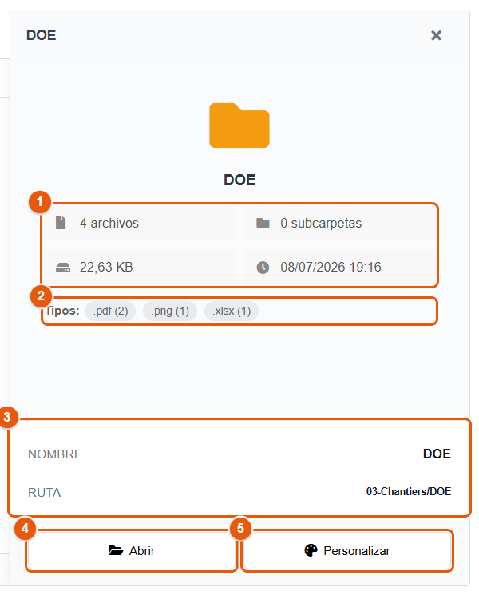
Personalizar una carpeta
Un color y un icono permiten localizar las carpetas importantes.
- Color: doce tonos.
- Icono: veinticuatro pictogramas (archivos, edificio, foto, contabilidad, correo, seguridad, equipo…).
- La vista previa del resultado.
- Personalización global: visible para todos los usuarios; reservada a los administradores. Si no, la personalización solo es visible para usted.
- Restablecer: vuelve al aspecto por defecto.
- Cancelar.
- Guardar.
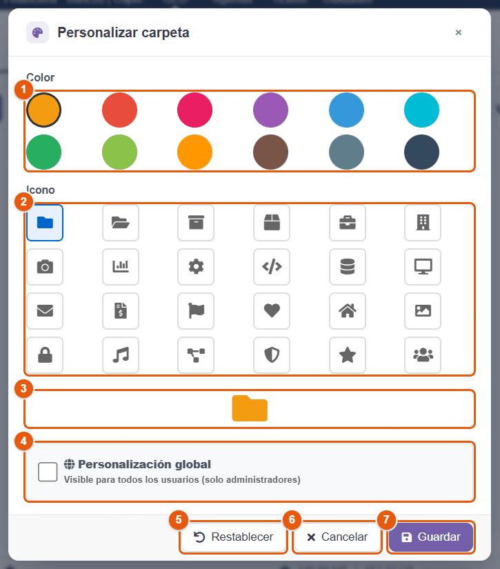
9 Eliminar y restaurar: la papelera
Eliminar un documento en FileManager no lo destruye inmediatamente: va a la papelera, desde donde se puede restaurar durante el período de retención (30 días por defecto).
Eliminar
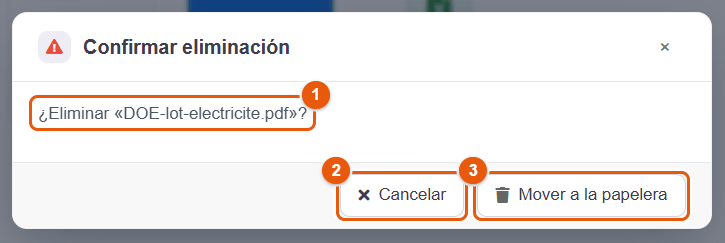
- Seleccione uno o varios elementos y después Eliminar (menú contextual, barra de acciones o tecla Supr).
- Compruebe el nombre recordado en la ventana 1.
- Haga clic en Mover a la papelera 3, o en Cancelar 2.
Eliminar una carpeta envía todo su contenido a la papelera. Las versiones de un archivo lo siguen a la papelera y vuelven con él si se restaura.
Necesita el permiso « Eliminar en el gestor de archivos » y el permiso de eliminación sobre el elemento. Si la protección del propietario está activada, solo el creador de una carpeta (o su responsable, o un administrador) puede eliminarla.
Abrir la papelera
abre la papelera de la fuente mostrada.
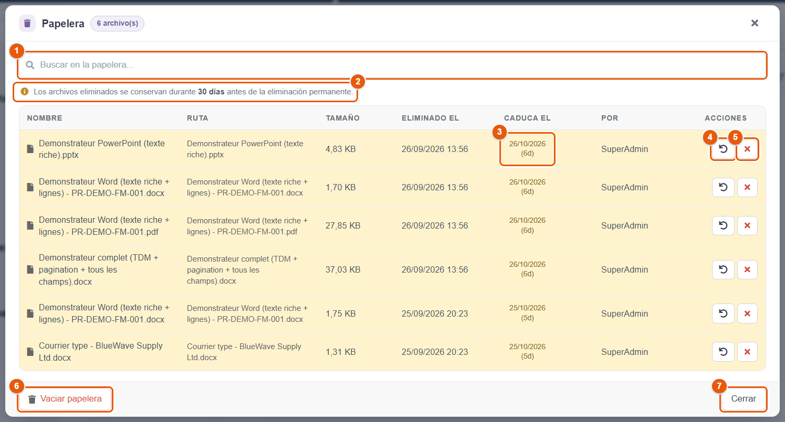
- Buscar en la papelera...
- El período de retención aplicado.
- Caduca el: la fecha de eliminación definitiva y el número de días que quedan. El indicador pasa a naranja y después a rojo a medida que se acerca la fecha.
- Restaurar: devuelve el elemento a su lugar.
- Eliminar permanentemente: elimina el elemento de forma definitiva, tras confirmación.
- Vaciar papelera: elimina definitivamente todos los elementos, tras confirmación.
- Cerrar.
Las columnas indican también la ruta de origen, el tamaño, la fecha de eliminación y la persona que eliminó el elemento.
Quién ve qué en la papelera
- Cada uno ve lo que ha eliminado él mismo.
- Un responsable ve además lo que han eliminado las personas a su cargo (su equipo en Dolibarr), para los elementos que habían compartido con otros: así se puede recuperar un documento común eliminado por error sin recurrir al administrador.
- Un administrador lo ve todo.
En una instalación muy grande, la ventana muestra los elementos eliminados más recientemente; los más antiguos permanecen en la papelera hasta su caducidad.
Restaurar
- Abra la papelera y encuentre el elemento (el campo de búsqueda filtra la lista).
- Haga clic en el botón Restaurar de su fila.
- El elemento vuelve a su carpeta de origen, con sus versiones. Si la carpeta ya no existe, se vuelve a crear.
Si entretanto se ha creado un archivo con el mismo nombre en el mismo lugar, el archivo restaurado no lo sobrescribe: recibe un nombre con el sufijo _restored_ seguido de un número.
Eliminación definitiva
Eliminar permanentemente y Vaciar papelera no se pueden deshacer: los archivos y sus versiones se borran del servidor.
Un archivo con una versión protegida (« Marcar como importante », capítulo Las versiones de los documentos) no se puede eliminar definitivamente: « Este elemento tiene versiones protegidas: no se puede eliminar definitivamente. Quite primero su protección. » Lo mismo ocurre con una carpeta que contenga un archivo así. Vaciar papelera elimina todo lo demás e indica lo que ha conservado (« 1 elemento(s) conservado(s): versiones protegidas. »); la limpieza automática hace lo mismo.
Una tarea programada elimina cada día los elementos cuyo período de retención ha terminado, y puede avisar al administrador por correo (dirección indicada en ).
Un archivo eliminado de un almacenamiento conectado (Nextcloud, Google Drive…) también pasa por la papelera de FileManager: se guarda allí una copia, y restaurarlo lo devuelve al almacenamiento de origen.
El administrador puede desactivar la papelera (): la eliminación pasa a ser inmediata y definitiva, tras confirmación.
10 Buscar y encontrar
El campo Buscar... de la barra de herramientas hace dos cosas: filtra al instante la carpeta mostrada mientras escribe, y lanza una búsqueda real cuando pulsa Intro. Sus opciones añaden filtros que encuentran documentos sin ninguna palabra clave: todas las facturas de un cliente, todos los documentos en firma…
Filtrar la carpeta mostrada
Desde la primera letra escrita, la carpeta solo muestra los elementos cuyo nombre contiene el texto. No se envía nada al servidor: es instantáneo. Un aviso encima de los resultados lo indica y propone lanzar la búsqueda completa. Esc o la cruz del campo borran el filtro.
Buscar por palabra clave
Intro lanza la búsqueda en los nombres de los archivos — y en su contenido si la opción está marcada — según las opciones elegidas. Los resultados se agrupan por fuente; cada grupo se detiene en los 50 primeros resultados y lo indica. Un almacenamiento conectado lento se interrumpe al cabo de unos segundos: el grupo muestra entonces « resultados parciales » y un enlace Ver todos los resultados.
Opciones y filtros
- Búsqueda aproximada: tolera letras que faltan y pequeños errores de escritura (véanse las recetas al final del capítulo).
- Buscar contenido: busca también el texto dentro de los documentos (véase más abajo).
- Incluir subcarpetas: amplía la búsqueda por debajo de la carpeta mostrada.
- Todos los orígenes: busca a la vez en la GED, los documentos ERP y los almacenamientos conectados.
- Ficha: un tercero, un proyecto, un pedido, un producto…; los documentos que le pertenecen y, con Incluir las fichas vinculadas, los de las fichas que Dolibarr le vincula.
- Tipo de documento: un tipo de documento de Dolibarr (facturas de clientes, presupuestos…) o una carpeta tipo de la GED.
- Fecha: Fecha del archivo o Fecha del documento, entre dos días.
- Estado documental: Compartido, Flujo de firma, Alerta de validez, En edición, Favoritos, Con versiones, Solo lectura, Acceso restringido.
- Tipo de archivo: carpetas, PDF, documentos Office, imágenes, audio, vídeo, archivos comprimidos, texto.
- Restablecer: borra todos los filtros.
- Aplicar: lanza la búsqueda (como Intro).
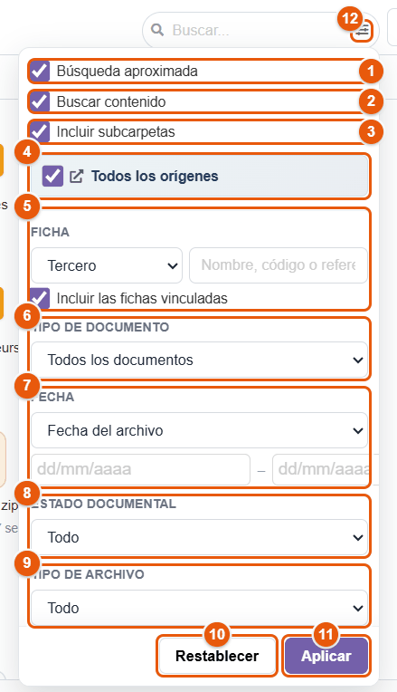
Encontrar sin palabra clave: los filtros
Los filtros bastan: no hace falta ninguna palabra clave. Elíjalos y después haga clic en Aplicar. Una palabra clave escrita además afina el resultado.
| Filtro | Lo que da |
|---|---|
| Ficha | Elija el tipo de ficha (tercero, proyecto, contacto, presupuesto, pedido, factura, producto, lote, ticket, orden de fabricación, envío…: solo se proponen los tipos cuyo módulo está activado y que puede leer), escriba al menos dos caracteres (nombre, código o referencia) y elija la ficha en la lista. Solo se proponen las fichas que puede abrir. Resultado: los documentos de la ficha y las carpetas de la GED creadas para ella por los modelos de árbol; para un tercero o un proyecto, además, los documentos de todas sus piezas comerciales (presupuestos, pedidos, facturas, contratos, envíos, intervenciones, documentos de proveedores, proyectos del tercero…). Con Incluir las fichas vinculadas (marcada por defecto): también los documentos de las fichas que Dolibarr vincula a esta (bloque « Objetos vinculados » de su ficha), en los dos sentidos y en un nivel — un pedido aporta su presupuesto, sus facturas y sus envíos. Una ficha vinculada que no puede abrir se ignora. |
| Tipo de documento | Un documento de Dolibarr (Facturas de clientes, Presupuestos, Pedidos de clientes…) o una carpeta tipo definida en los modelos de árbol — por ejemplo « Condiciones de venta firmadas », en todos los clientes. |
| Fecha | Fecha del documento: la fecha del presupuesto, de la factura… en Dolibarr (para un documento de la GED, la fecha del archivo). Fecha del archivo: su fecha de modificación. |
| Estado documental | Los documentos en ese estado (véanse los indicadores en el capítulo Vistas y vista previa). |
| Tipo de archivo | Los archivos de esa familia. |
Los filtros se combinan: un cliente en Ficha, Facturas de clientes en Tipo de documento y un periodo en Fecha del documento dan las facturas de ese cliente en el periodo. Sin ficha ni tipo de documento, los filtros recorren la carpeta mostrada (y sus subcarpetas si la opción está marcada), o todas las fuentes si Todos los orígenes está marcado.
Ejemplo: todos los documentos de un cliente
- Abra las opciones de búsqueda.
- En Ficha, deje Tercero y escriba el principio del nombre del cliente.
- Elija el cliente en la lista.
- Haga clic en Aplicar.
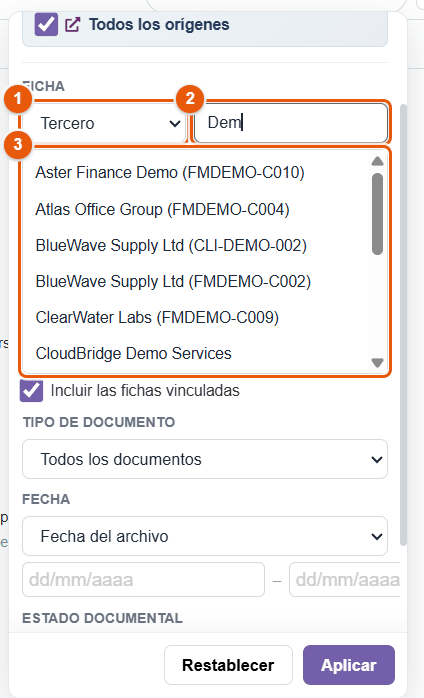
Leer los resultados
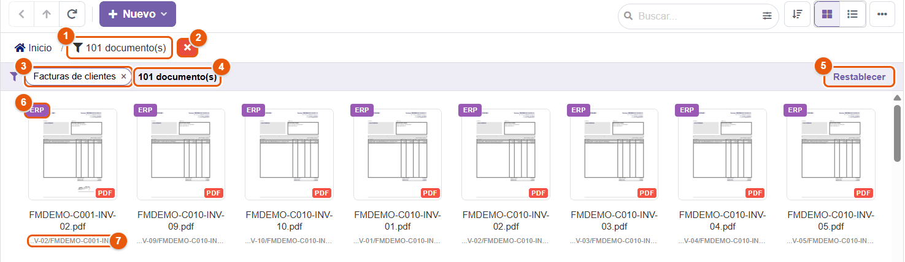
- La ruta de navegación indica que está viendo un resultado de búsqueda, y cuántos documentos contiene.
- La cruz roja sale de la búsqueda y vuelve a mostrar la carpeta.
- Cada filtro activo es una etiqueta: su cruz lo quita.
- El número de documentos encontrados.
- Restablecer: borra todos los filtros.
- La fuente de cada documento (ERP, GED, almacenamiento conectado).
- Su ruta; la acción Ir a la carpeta principal abre su carpeta.
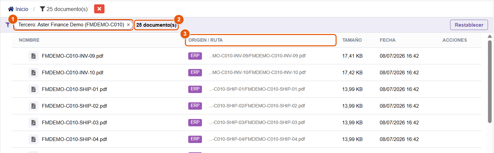
Los resultados se ordenan del más reciente al más antiguo según la fecha elegida y llegan en páginas de 100.
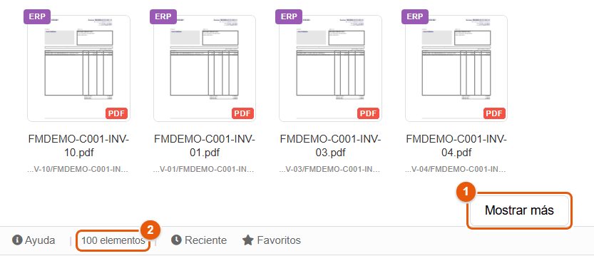
Cuando una búsqueda tarda demasiado, o un almacenamiento conectado es demasiado lento, la barra de resultados lo indica: « Búsqueda detenida antes del final (demasiados elementos): afine los filtros para verlo todo. », o « No recorrido por completo (origen lento) » seguido del nombre de la fuente. Afine entonces los filtros.
Buscar en el contenido de los documentos
Marcada, la opción Buscar contenido encuentra un documento por una frase que contiene. Los archivos de texto (txt, csv, md, json, xml, html, código) se leen directamente. Los PDF y los documentos Office (Word, Excel, PowerPoint, OpenDocument) se buscan en un índice: su texto se extrae una vez, de antemano, mediante una tarea programada.
- La búsqueda encuentra los documentos que contienen todas las palabras escritas, sin tener en cuenta los acentos ni las mayúsculas.
- Un extracto del pasaje encontrado aparece debajo del nombre del documento.
- Si hay archivos del ámbito aún sin indexar, la barra de resultados lo indica (« … archivo(s) aquí aún sin indexar: no se buscó en su contenido »).
- Si el administrador no ha activado la indexación, solo se busca el contenido de los archivos de texto, y se indica.
La indexación del contenido se activa en (capítulo Explorador). Los archivos cifrados no se indexan.
¿Cuándo se puede encontrar un documento?
| Lo que se busca | Disponible |
|---|---|
| El nombre del archivo o de la carpeta | De inmediato, en todas las fuentes (GED, documentos ERP, almacenamientos conectados). |
| El contenido de un archivo de texto (txt, csv, md, json, xml, html, código) | De inmediato: el archivo se lee en el momento de la búsqueda. |
| El contenido de un PDF o de un documento Office subido a FileManager | En cuanto se sube: el archivo se indexa al llegar. |
| El contenido de los documentos ya presentes, o añadidos de otra forma (generados por Dolibarr, sincronización) | Después de la tarea programada diaria « Reindexación del contenido FileManager », o después de Reindexar ahora por el administrador. |
| Un documento escaneado (una imagen dentro de un PDF) | Nunca por su contenido mientras no tenga texto: aplíquele el OCR en el editor PDF (capítulo Herramientas PDF) y pasa a poder buscarse. |
| Un archivo cifrado, o mayor que el límite fijado por el administrador (10 MB por defecto) | Solo por su nombre. |
| El contenido de los archivos de un almacenamiento conectado (Nextcloud, Google Drive, SMB…) | Solo por su nombre: el índice cubre la GED y los documentos ERP. |
Desde la búsqueda de Dolibarr
El campo Buscar de la parte superior del menú izquierdo de Dolibarr ofrece, debajo de los terceros, las facturas y las demás fichas, la entrada Archivos (GED). Escriba la palabra y elija esa entrada: el explorador se abre con la búsqueda ya lanzada sobre esa palabra.
Abrir en la GED desde una ficha
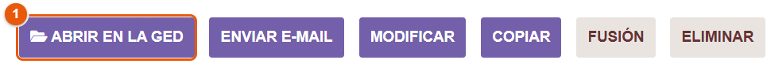
En las fichas de Dolibarr (tercero, proyecto, pedido, factura, producto, ticket, orden de fabricación…), el botón Abrir en la GED abre el explorador directamente en los documentos de la ficha y de sus fichas vinculadas: el filtro Ficha ya está aplicado.
Los documentos que faltan
Cuando el administrador ha definido documentos esperados en los modelos de árbol (por ejemplo « Registro Mercantil » y « Certificado de seguro » para cada proveedor), FileManager detecta los que faltan. La barra de estado muestra entonces un botón Faltantes (n): abre la lista de los documentos que faltan de las fichas que puede abrir.
| Columna | Contenido |
|---|---|
| Ficha | La ficha afectada (un tercero, un proyecto o cualquier ficha cuyo árbol espera documentos); Abrir la ficha abre su ficha de Dolibarr. |
| Documento | El documento esperado, Obligatorio o Recomendado. |
| Carpeta | La carpeta de la GED donde se espera. |
| Desde | Desde cuándo falta. |
| Recordatorios | El número de recordatorios ya enviados. |
El campo Ficha o documento… filtra la lista, y Documento esperado la limita a un tipo de documento. El botón Depositar abre la carpeta esperada para que pueda depositar allí el documento: una vez subido, deja de contar como faltante. Cuando una búsqueda se refiere a una ficha, sus documentos que faltan aparecen encima de los resultados.
Recetas de búsqueda
| Busco… | Cómo |
|---|---|
| Un contrato del que conozco una cláusula | Escriba unas palabras de la cláusula, marque Buscar contenido y Todos los orígenes, Intro. El extracto mostrado da el pasaje. |
| Todo el expediente de un pedido (presupuesto, facturas, envíos) | Ficha: Pedido y después el pedido; Incluir las fichas vinculadas marcada; Aplicar. O, desde la ficha del pedido: Abrir en la GED. |
| Todas las facturas de un cliente en un trimestre | Ficha: el cliente; Tipo de documento: Facturas de clientes; Fecha del documento: del primer al último día del trimestre; Aplicar. |
| Los documentos enviados a la firma y aún no firmados | Estado documental: Flujo de firma, con Todos los orígenes. |
| Los documentos cuya validez está a punto de caducar | Estado documental: Alerta de validez; o la lista del menú Validez (capítulo Documentos con fecha de validez). |
| Lo que se cambió la semana pasada en una carpeta de obra | Abra la carpeta, Incluir subcarpetas, Fecha del archivo en la semana. |
| Las fotos de una obra | Abra la carpeta de la obra, Tipo de archivo: Imágenes, Incluir subcarpetas; después Galería de imágenes para recorrerlas. |
| Un archivo cuyo nombre escribí mal | Marque Búsqueda aproximada: las letras escritas se buscan en orden, aunque estén separadas, y se acepta un nombre muy parecido. « factra » o « contrto » encuentran « factura » y « contrato ». |
| Los documentos que faltan en la carpeta de un proveedor | El botón Faltantes de la barra de estado, filtrado por el proveedor. |
11 Descargar y enviar por correo
Un documento se descarga con un clic, solo o junto con otros en un archivo ZIP. Para enviarlo a alguien, Enviar por correo prepara un correo de Dolibarr con los archivos ya adjuntos: no hace falta descargarlos y volver a adjuntarlos a mano.
Descargar un archivo
Varios caminos llevan a la misma descarga:
- el menú contextual del archivo (clic derecho), entrada Descargar;
- la barra de acciones que aparece cuando hay un archivo seleccionado;
- el botón Descargar del panel de vista previa y de la vista previa a pantalla completa;
- en la vista de lista, la flecha que aparece al pasar el ratón por la fila.
El archivo llega a la carpeta de descargas de su navegador, con su nombre. Algunos casos particulares:
- un archivo cifrado por FileManager se descarga descifrado, con su nombre real, si tiene el permiso de abrirlo (capítulo Seguridad y acceso);
- un archivo de un almacenamiento conectado (Nextcloud, S3, recurso compartido de red…) se lee al vuelo desde ese almacenamiento;
- si el administrador ha activado el registro de las lecturas, la descarga se anota en el historial (capítulo Mantenimiento).
Descargar varios archivos o una carpeta (ZIP)
- Seleccione los archivos y carpetas que desee (Ctrl + clic, o casillas en la vista de lista), o una sola carpeta.
- Elija Descargar como ZIP en la barra de acciones o en el menú contextual.
- FileManager prepara el archivo comprimido: las carpetas conservan dentro su estructura. Solo entran los archivos que tiene permiso de descargar; si no hay ninguno, aparece el mensaje « No hay archivos para descargar ».
El administrador puede dar a alguien el permiso de leer un documento sin el de descargarlo (reglas de permisos, capítulo Permisos y solicitudes de acceso). Lo consulta entonces en pantalla (vista previa, visor), pero los botones de descarga, el envío por correo y el ZIP se rechazan: « No tiene permiso para descargar este archivo ».
Enviar por correo
- Seleccione uno o varios archivos, hasta 100, en el explorador, en los resultados de búsqueda, en la bandeja de una ficha o en la tabla de sus documentos.
- Elija Enviar por correo en el menú contextual o en la barra de acciones.
- FileManager comprueba cada elemento:
- las carpetas y los accesos directos no se envían: se omiten, y un mensaje lo indica (« 2 elemento(s) omitido(s): las carpetas y los accesos directos no se envían »); para enviar una carpeta, descárguela como ZIP o compártala;
- debe tener el permiso de descargar cada archivo;
- el tamaño total no debe superar el límite fijado por el administrador (20 MB por defecto, el límite habitual de los servidores de correo). Por encima, el envío se rechaza antes incluso de abrir el mensaje: quite algunos archivos, o envíe un enlace para compartir (véase más abajo).
- Se abre el formulario de correo de Dolibarr con los archivos ya adjuntos. Complételo y después haga clic en Enviar e-mail.
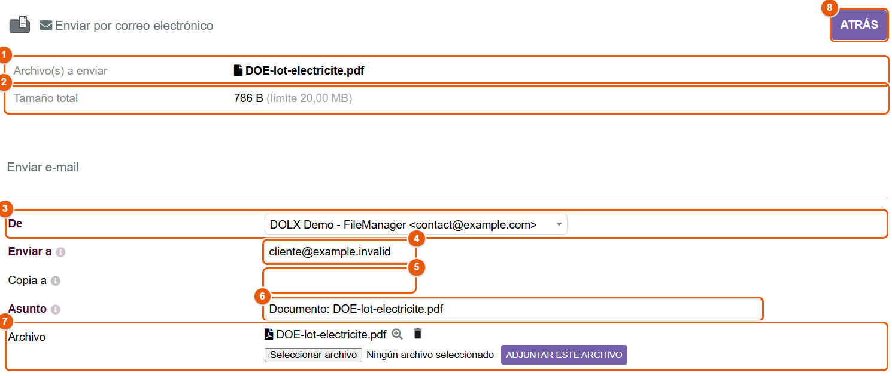
- Archivo(s) a enviar.
- Tamaño total y el límite permitido.
- De: el remitente, elegido entre las direcciones permitidas por Dolibarr (la suya, la de la empresa…).
- Enviar a: uno o varios destinatarios, separados por comas.
- Copia a.
- Asunto, propuesto a partir del nombre del archivo: cámbielo libremente.
- Archivo: los archivos adjuntos; la lupa previsualiza, la papelera quita un archivo; Adjuntar este archivo añade un archivo desde su ordenador.
- Atrás: vuelve al explorador sin enviar.
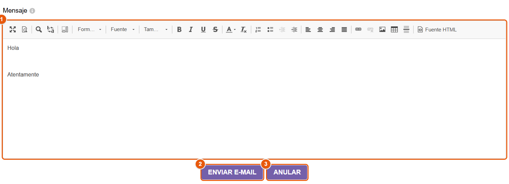
- Mensaje: editor de texto enriquecido (formato, enlaces, imágenes, tablas). La plantilla de correo elegida por el administrador rellena previamente el texto; su firma de Dolibarr se añade al enviar.
- Enviar e-mail.
- Anular.
Lo que recibe el destinatario
- Cada archivo se adjunta con su nombre; dos archivos con el mismo nombre procedentes de carpetas distintas se renombran (« Presupuesto.pdf », « Presupuesto (2).pdf ») para que no se sobrescriban.
- Un archivo cifrado se adjunta descifrado, con su nombre real: el destinatario no necesita ninguna herramienta especial.
- Un archivo de un almacenamiento conectado se copia primero en el servidor de Dolibarr para adjuntarlo; esta copia temporal se borra después del envío, y como muy tarde al cabo de 48 horas. Un documento de Google se adjunta en formato Office.
Desde una ficha de Dolibarr
Desde la bandeja o la tabla de documentos de una ficha, el formulario se abre en una ventana aparte para no salir de la ficha. Si el módulo CommunicationHub está instalado, se abre en su lugar su ventana de redacción, con los mismos archivos adjuntos.
Por encima del límite, en lugar de adjuntar los archivos, cree un enlace para compartir (capítulo Compartir) y envíe el enlace: el destinatario descarga el documento cuando quiere, el enlace puede caducar, estar protegido por una contraseña, y usted sabe si se ha abierto.
El límite se ajusta en , ajuste Tamaño máximo de los archivos adjuntos de un correo (MB): de 1 a 100 MB, o 0 para ningún límite. Compruebe el límite de su servidor de correo antes de aumentarlo: un correo rechazado por el servidor solo se rechaza después de enviarlo.
Trabajar con los documentos
Editores PDF, de imágenes y Office, versiones, documentos con fecha de validez, firmas, plantillas y combinación de correspondencia, conjuntos PDF, documentos de las fichas de Dolibarr, fabricación y trazabilidad.
- 12El editor PDF
- 13Las herramientas PDF
- 14El editor de imágenes
- 15Documentos Office: vista previa y edición en línea
- 16Las versiones de los documentos
- 17Documentos con fecha de validez
- 18Firmas electrónicas
- 19Combinación de correspondencia: el asistente paso a paso
- 20Escribir una plantilla de combinación
- 21Campos, fórmulas y datos de Dolibarr
- 22Combinación de correspondencia: ejemplos paso a paso
- 23Los paquetes PDF
- 24La bandeja de documentos en una ficha
- 25Los documentos de una ficha de Dolibarr
- 26El visor automático de las listas
- 27Fabricación, lotes y dosier de trazabilidad
12 El editor PDF
El editor PDF trabaja sobre un PDF directamente en el navegador: anotar, añadir texto e imágenes, firmar, ocultar información, reordenar las páginas, fusionar, comprimir, proteger. Se abre en una ventana nueva; el explorador sigue abierto detrás.
Abrir un PDF en el editor
- Haga clic derecho en un PDF y después en Editar el PDF.
- El editor se abre en una ventana nueva del navegador, en la primera página. Si no se abre nada, permita las ventanas emergentes para la dirección de Dolibarr.
También se pueden abrir en él los documentos Word y Excel y las imágenes: se convierten primero a PDF (la conversión de los documentos Office requiere Stirling PDF, configurado por el administrador).
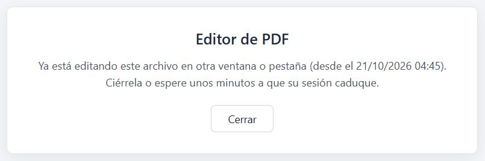
Un documento solo puede modificarlo una persona a la vez. Si ya está abierto en un editor (por un compañero, o por usted en otra ventana), el editor lo indica: cierre el otro editor o espere a que caduque su sesión. Mientras está en edición, el indicador « En edición por otro usuario » aparece en el documento para los demás.
La pantalla del editor
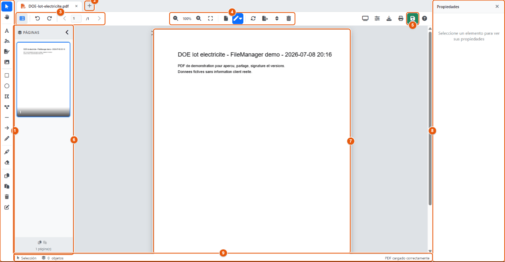
- La barra de herramientas: selección, texto, firma, formas, resaltador, censura…
- Las pestañas: una por documento abierto; + abre otro (para fusionar, o para pasar páginas de uno a otro).
- Mostrar/ocultar páginas, Anular (deshacer), Rehacer, página anterior / siguiente y número de página.
- Alejar / Acercar, Ajustar a la página, Modo de visualización, Herramientas avanzadas, Rotación, Extraer, Reordenar, Eliminar páginas.
- Grabar (Ctrl+S). A su izquierda: Presentación (F5), Propiedades, Descargar en el ordenador, Impresión (Ctrl+P); a su derecha, Ayuda contextual (F1).
- Las páginas en miniatura: un clic lleva a la página.
- La página mostrada: aquí es donde se dibuja, se escribe y se colocan los elementos.
- Propiedades: los ajustes del elemento seleccionado (posición, tamaño, colores, fuente…).
- La barra de estado: herramienta activa, número de objetos añadidos, estado del documento.
Las herramientas
| Herramienta (atajo) | Uso |
|---|---|
| Selección (V) | Seleccionar, mover y redimensionar los elementos añadidos. |
| Mano (H) | Arrastrar la página para desplazarse. |
| Texto (T) | Añadir texto: fuente, tamaño, negrita, cursiva, subrayado, color. |
| Firma (S) | Aplicar su firma: dibujarla, escribirla (fuente manuscrita), importar una imagen o tomarla de su biblioteca de firmas. |
| Solicitar una firma | Enviar este documento a alguien para que lo firme (capítulo Firmas electrónicas). |
| Imagen (I) | Insertar una imagen PNG o JPG (logotipo, sello, plano). |
| Rectángulo (R), Círculo (C), Polígono (P), Polilínea (L), Línea, Flecha (A) | Formas: contorno, relleno, grosor, color. |
| Dibujo libre (D) | Dibujar a mano alzada. |
| Resaltar (G) | Resaltado semitransparente. |
| Censurar (M) | Cubrir una zona con un rectángulo opaco (censura): una información sensible deja de verse. |
| Copiar (Ctrl+C), Pegar (Ctrl+V), Eliminar selección (Supr) | Sobre los elementos añadidos. |
| Modo formulario (F) | Rellenar los campos de un formulario PDF (véase Rellenar un formulario PDF). |
Para que la información ocultada ya no se pueda leer ni copiar, aplane el documento antes de guardarlo (): los elementos añadidos se integran entonces en la página. Conserve una versión del original si la necesita.
Trabajar con las páginas
El panel Páginas muestra las miniaturas. Seleccione una o varias páginas (Ctrl+clic) para girarlas, eliminarlas, copiarlas o extraerlas a un documento nuevo. Reordenar muestra todas las páginas para volver a ordenarlas arrastrándolas. Con varios documentos abiertos en pestañas, se puede arrastrar una página de un documento a otro.
Rellenar un formulario PDF
Muchos PDF que recibe son formularios: solicitud de apertura de cuenta, solicitud de aprobación, declaración administrativa, parte de intervención. Sus zonas que rellenar son campos de verdad (se habla de formularios « AcroForm »). El editor los reconoce al abrir el documento: un mensaje indica « Formulario detectado: 8 campos » y el botón Modo formulario aparece en la barra de herramientas de la izquierda, con el número de campos en su burbuja.
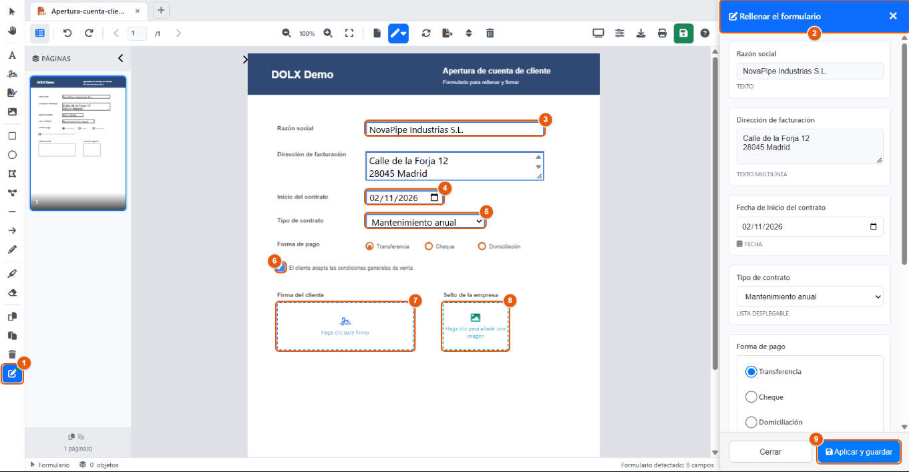
- El botón Modo formulario (o la tecla F) abre el asistente de relleno. Solo aparece si el documento contiene campos.
- El panel Rellenar el formulario enumera todos los campos del documento, en orden, cada uno con la entrada adaptada a su tipo y el tipo escrito debajo (Texto, Texto multilínea, Fecha, Lista desplegable…). La etiqueta es el nombre alternativo que el autor del formulario dio al campo (su burbuja de información, definida en las propiedades del campo): « Fecha de inicio del contrato ». Un campo sin nombre alternativo muestra su nombre técnico hecho legible: « Razon_social » pasa a ser « Razon social », « AceptaCondiciones » pasa a ser « Acepta Condiciones ».
- Los campos también se colocan en la página, exactamente en su sitio: puede escribir en el panel o directamente en el documento, los dos se mantienen sincronizados.
- Un campo reconocido como fecha (su nombre contiene « fecha », « inicio », « fin », « vencimiento », « date », « day »…) recibe un calendario, rellenado previamente con la fecha ya escrita en el PDF. La fecha elegida se escribe en el formato de su idioma, con el día y el mes en dos cifras (02/11/2026 en español). Si el campo contiene un texto que no es una fecha (« por definir »), se queda como campo de texto: no se borra nada.
- Las listas desplegables y los botones de opción ofrecen las opciones previstas por el autor del formulario.
- Las casillas de verificación.
- Un campo de firma (nombre que contiene « firma », « signature », « initials », o una zona rectangular grande) muestra Haga clic para firmar: se abre la ventana de firma; dibuje su firma, importe su imagen o escriba su nombre, y se coloca a escala en el marco.
- Un campo de imagen (nombre que contiene « logo », « foto », « sello », « stamp »…) muestra Haga clic para añadir una imagen: elija la imagen en la GED (el logotipo, el escaneo del sello de la empresa); se ajusta al marco.
- Aplicar y guardar escribe los valores en los campos del PDF y guarda el documento inmediatamente (se conserva una versión del estado anterior cuando las versiones están activadas). Cerrar (o la cruz de la cabecera) cierra el panel sin escribir nada. Mientras el panel está abierto, la página se estrecha para que todos los botones de la barra de herramientas sigan visibles.
Si diseña usted mismo sus formularios (con LibreOffice o Acrobat, por ejemplo), dé a cada campo una burbuja de información clara en sus propiedades: sirve de etiqueta. Exporte a PDF conservando los campos de formulario. Y elija nombres técnicos con sentido: un nombre que contiene « fecha », « firma » o « sello » da al campo un calendario, una zona de firma o una zona de imagen.
El documento guardado sigue siendo un formulario: sus campos conservan sus valores y se pueden seguir cambiando, por usted o por la persona a la que lo envíe, en cualquier lector de PDF. Las firmas y las imágenes, en cambio, quedan integradas en la página.
Para fijar definitivamente un formulario antes de enviarlo (nadie puede cambiar ya un valor), utilice sobre una copia (capítulo Herramientas PDF).
Un formulario escaneado, o impreso y después escaneado, no tiene campos: el botón Modo formulario no aparece. Rellénelo con la herramienta Texto (T) y firme con la herramienta Firma (S).
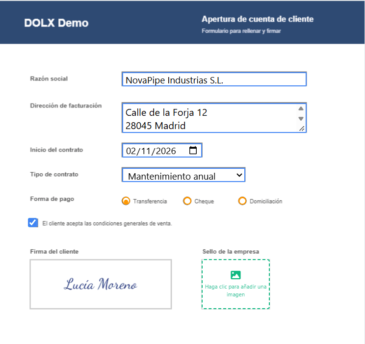
Herramientas avanzadas
El botón Herramientas avanzadas (varita mágica) reúne la marca de agua, el sello, las propiedades del documento (metadatos), el aplanado, la fusión y la división, la compresión, el OCR, la reparación, la contraseña, los permisos y la firma con certificado. Se describen una por una en el capítulo Herramientas PDF.
Guardar
El botón Grabar (Ctrl+S) sustituye el archivo en su lugar. Si las versiones están activadas, FileManager conserva antes el estado anterior como versión (« Versión automática antes de sobrescribir desde el editor »): puede volver atrás (capítulo Versiones). Un documento producido por una fusión o una división le pide una carpeta y un nombre.
Descargar en el ordenador recupera el documento modificado sin tocar el archivo de FileManager. Cerrar la ventana sin guardar descarta los cambios; el navegador pide confirmación si quedan cambios.
Las herramientas PDF desde el explorador
Sin abrir el editor, el submenú Herramientas PDF del menú contextual comprime, repara, divide o fusiona PDF, y Convertir a PDF transforma un documento Office o una imagen en PDF: véase el capítulo Herramientas PDF.
13 Las herramientas PDF
Comprimir un escaneo demasiado pesado, reparar un PDF que ya no se abre, reunir el presupuesto, el pedido y la factura en un único archivo, hacer que un escaneo se pueda buscar, añadir una marca de agua o un sello « PAGADO », proteger un documento con una contraseña, firmarlo con un certificado: FileManager hace todo esto sin ningún programa instalado en el ordenador. Este capítulo describe cada herramienta, dónde encontrarla y lo que produce.
Dos formas de acceder a ellas
| Desde | Lo que encontrará |
|---|---|
| El menú contextual de un PDF (explorador, bandeja, archivos vinculados de una ficha) | Submenú Herramientas PDF: Comprimir el PDF, Reparar el PDF, Dividir el PDF, Combinar PDF. El tratamiento se hace en el servidor, sin abrir el documento. En un documento Office o una imagen, la entrada Convertir a PDF. |
| El menú Herramientas avanzadas (varita mágica) del editor PDF | Marca de agua, sello, metadatos, aplanado, combinación y división, compresión, OCR, reparación, contraseña, permisos, firma con un certificado. El resultado aparece en el editor; solo sustituye al archivo cuando hace clic en Grabar. |
Las herramientas que modifican un archivo exigen el permiso de escritura sobre ese archivo; un usuario con acceso de solo lectura no las ve.
Los motores: Stirling PDF y Ghostscript
Los tratamientos pesados se confían a un motor instalado en el servidor, elegido por el administrador (, capítulo Office y PDF):
- Stirling PDF, un servicio PDF completo. Cuando está configurado y accesible, se utiliza en primer lugar.
- Ghostscript, un programa presente en la mayoría de los servidores Linux, utilizado como alternativa cuando Stirling PDF no está disponible.
| Herramienta | Con Stirling PDF | Solo con Ghostscript |
|---|---|---|
| Comprimir, Reparar, Dividir, Combinar (menú contextual) | Sí | Sí |
| Convertir a PDF (Office, texto, HTML, imágenes) | Sí | No |
| Editor: Marca de agua, Sello, Metadatos, Aplanar, Fusión, Dividir, páginas | Siempre disponibles: funcionan en el navegador. | |
| Editor: Comprimir, OCR, Reparar | Sí | Ausentes del menú |
| Editor: Contraseña, Permisos, Firmar (P12) | Sí | Ausentes del menú |
Sin ningún motor, las herramientas del menú contextual responden « No hay ningún motor PDF disponible »: póngase en contacto con el administrador.
Comprimir un PDF
- Clic derecho en el PDF, .
- Confirme: « ¿Desea comprimir el archivo …? El archivo original será reemplazado. »
- Un mensaje indica el ahorro obtenido, por ejemplo « PDF comprimido correctamente (62% ahorrado) ».
La compresión vuelve a muestrear las imágenes del documento a una resolución adaptada a la pantalla y a la impresión de oficina (nivel medio). Hace maravillas con los escaneos y los PDF llenos de fotos; en un PDF compuesto de texto, el ahorro es pequeño.
La compresión y la reparación escriben el resultado en lugar del archivo original. En un plano, una foto de obra o un documento destinado a la imprenta, guarde antes una copia (Copiar a..., o una descarga): la pérdida de detalle de las imágenes no se puede deshacer.
Reparar un PDF
reconstruye la estructura de un PDF dañado: descarga interrumpida, archivo producido por un escáner antiguo, PDF que la vista previa se niega a mostrar. El archivo reparado sustituye al original. Si la reparación falla, el archivo está demasiado dañado: pida una nueva copia a quien se lo envió.
Dividir un PDF
crea un archivo por página, junto al original, que queda intacto. Los archivos se numeran a partir del nombre original: extracto_part1.pdf, extracto_part2.pdf… (extracto_page1.pdf… cuando el tratamiento lo hace Ghostscript). Para conservar solo algunas páginas, o cortar en varios bloques, utilice en su lugar el editor (Dividir en el editor).
Combinar PDF
La combinación reúne varios PDF en uno solo, en el orden que usted elija. Desde la bandeja de una ficha, propone también los PDF de las fichas vinculadas: es la forma más rápida de montar el expediente completo de un negocio (presupuesto firmado, pedido, albarán, factura).
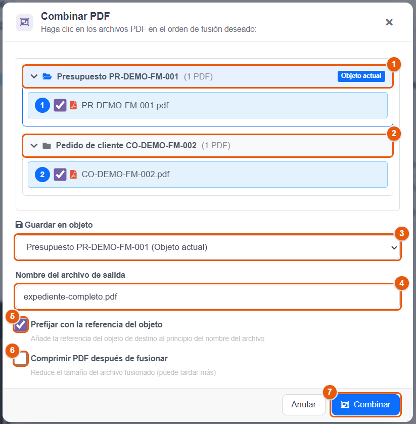
- Los PDF de la ficha actual (insignia Objeto actual). El archivo en el que hizo clic derecho ya está marcado y lleva el número 1.
- Los PDF de una ficha vinculada, agrupados por ficha; haga clic en la cabecera para desplegar el grupo. Cada archivo marcado recibe el número siguiente: el orden de los números es el orden de las páginas en el PDF combinado. Desmarcar un archivo renumera los demás.
- Guardar en objeto: la ficha que recibirá el PDF combinado, la ficha actual o una de las fichas vinculadas.
- Nombre del archivo de salida (« merged.pdf » por defecto); la extensión .pdf se añade si la olvida.
- Prefijar con la referencia del objeto: el nombre empieza por la referencia de la ficha de destino, por ejemplo
PR-DEMO-FM-001_expediente-completo.pdf. - Comprimir PDF después de fusionar: reduce el tamaño del resultado (útil antes de un envío por correo). Su elección se recuerda para la próxima vez.
- Combinar crea el archivo; Anular cierra la ventana sin crear nada.
- Deben estar marcados al menos dos PDF.
- Los archivos originales no se modifican.
- Si ya existe un archivo con el nombre elegido, el nuevo recibe un sufijo:
expediente-completo_1.pdf. - En el explorador, la ventana enumera los PDF de la carpeta: los archivos seleccionados antes del clic derecho van primero, en el orden de su selección, y el PDF combinado se crea en la carpeta actual.
Convertir a PDF
En un documento Word, Excel, PowerPoint, OpenDocument, RTF, texto o HTML, o en una imagen, Convertir a PDF produce su versión PDF (se necesita Stirling PDF):
- en el explorador, el PDF se crea junto al documento, con el mismo nombre y la extensión .pdf, y queda seleccionado; el documento original queda intacto. Si ya existe un PDF con ese nombre, la conversión se detiene (« Ya existe un archivo PDF con este nombre »): cambie el nombre de uno de los dos;
- desde la bandeja o una ficha, el PDF convertido se abre en el editor PDF; Grabar le pide entonces la carpeta y el nombre del PDF, sin tocar el documento original.
Las herramientas avanzadas del editor
En el editor PDF, el botón Herramientas avanzadas (varita mágica) abre un menú en columnas:
- Edición: Marca de agua, Sello, Metadatos, Aplanar.
- Multi-PDF: Fusión, Dividir.
- Firma: Solicitar una firma (capítulo Firmas electrónicas).
- Procesamiento: Comprimir, OCR, Reparar.
- Seguridad: Contraseña, Permisos, Firmar (P12).
Las columnas Procesamiento y Seguridad solo aparecen si Stirling PDF está configurado. Todo lo que hacen estas herramientas permanece en el editor hasta Grabar; cerrar el editor sin guardar descarta el resultado.
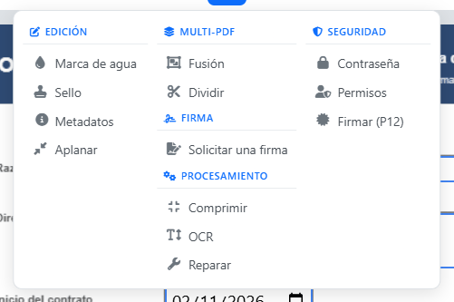
Marca de agua
Una marca de agua es un texto o una imagen colocado en transparencia sobre las páginas: « CONFIDENCIAL », « COPIA », el logotipo de la empresa.
| Ajuste | Efecto |
|---|---|
| Tipo de marca de agua | Texto o Imagen (un archivo de su ordenador). |
| Texto, Tamaño, Rotación, Color | Para un texto: tamaño de 12 a 200 (48 por defecto), rotación de −180° a 180° (−45° por defecto, una diagonal ascendente), color (gris claro por defecto). |
| Opacidad % | De 5 a 100 % (30 % por defecto): cuanto más baja, más legible sigue siendo el texto del documento. |
| Posición | Centro, Repetir (mosaico) en toda la página, o una de las cuatro esquinas. |
| Aplicar a | Todas las páginas, la página actual, la primera página, las páginas impares o pares. |
Aplicar coloca la marca de agua; guarde después el documento.
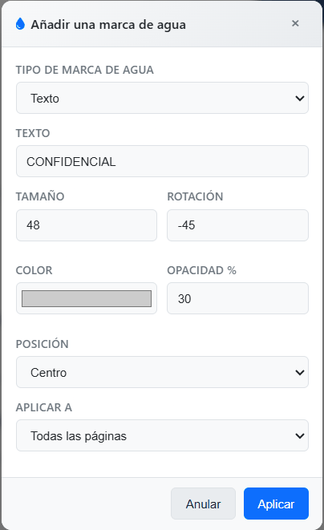
Sello
El sello imita un tampón entintado, inclinado y enmarcado: ✓ APROBADO, ✗ RECHAZADO, BORRADOR, CONFIDENCIAL, COPIA, ORIGINAL, PAGADO, RECIBIDO, o un texto personalizado.
- abre la ventana Añadir sello.
- Elija el Tipo de sello, su Color (rojo por defecto), su Tamaño (80 por defecto) y si desea Incluir la fecha del día.
- Añadir lo coloca en la página mostrada: arrástrelo a su sitio con la herramienta Selección y después guarde.
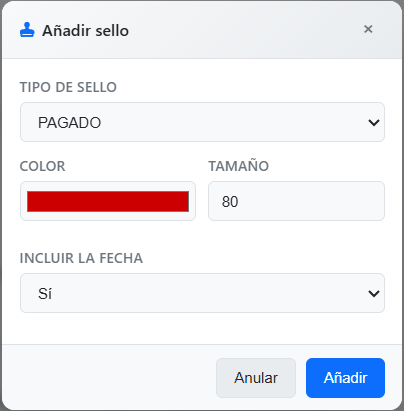
Una factura de proveedor que se ha pagado: ábrala en el editor, , tipo PAGADO, fecha Sí, coloque el sello arriba a la derecha y haga clic en Grabar. La versión anterior sigue disponible en las versiones del archivo.
Metadatos
Las propiedades del documento, o metadatos, son la información oculta del archivo, que muestran las propiedades del PDF y los motores de búsqueda: Título, Autor, Asunto, Palabras clave, Creador (« FileManager Dolibarr » por defecto). La ventana muestra también la fecha de la última modificación. Revíselas antes de publicar un documento fuera de la empresa: a menudo queda en ellas un título antiguo o el nombre de un compañero.
Aplanar
Aplanar funde definitivamente en la página todo lo que se ha añadido (textos, formas, zonas censuradas, sellos, campos rellenados). Cada página se vuelve a dibujar como una imagen: ya nadie puede mover un elemento ni leer lo que tapa una zona censurada. En cambio, el texto de la página ya no se puede seleccionar ni buscar, y el archivo aumenta de tamaño. Aplane una copia destinada al exterior, no su documento de trabajo; si hace falta, haga que se pueda buscar después con el OCR.
Fusionar en el editor
La combinación en el editor reúne el documento mostrado con:
- los demás documentos abiertos en pestañas en el editor (márquelos);
- Archivos externos, elegidos en su ordenador.
Posición coloca las páginas añadidas después o antes del documento actual. Marque Crear en una pestaña nueva para obtener el resultado en una pestaña aparte, sin tocar el documento actual; al guardar se le pedirán una carpeta y un nombre.
Dividir en el editor
| Modo de división | Resultado |
|---|---|
| Extraer páginas | Un PDF formado por las páginas indicadas: 1,3-5. |
| Por rango de páginas | Un PDF desde la página Desde la página hasta la página Hasta la página. |
| Cada página por separado | Un PDF por página. |
Con Abrir en una pestaña nueva marcado, el resultado se abre en el editor, listo para guardarse en la GED; sin marcar, se descarga directamente en su ordenador. El documento original no se modifica.
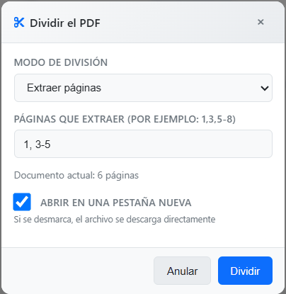
Trabajar con las páginas
| Botón | Efecto |
|---|---|
| Rotación | Gira 90°, 180° o 270° la página actual, todas las páginas, un rango (1-3, 5, 7-9), las páginas impares o pares. Práctico para un escaneo con una página al revés. |
| Extraer | Descarga en su ordenador un PDF nuevo formado por la página actual o por un rango, con el nombre que indique. |
| Eliminar páginas | Quita del documento la página actual o un rango. En el panel Páginas, también puede seleccionar miniaturas (Ctrl+clic, Ctrl+A para todas) y pulsar Supr. Una vez guardado el documento, solo las versiones permiten recuperar las páginas quitadas. |
| Reordenar | Muestra todas las páginas en miniatura; arrástrelas en el orden deseado y después Aplicar. |
El panel Páginas también copia páginas de un documento a otro: seleccione las miniaturas, Ctrl+C, pase a la pestaña del otro documento, seleccione una página y después Ctrl+V (pegadas después) o Ctrl+Mayús+V (pegadas antes).
Comprimir, OCR, Reparar
- Comprimir y Reparar hacen el mismo trabajo que en el menú contextual, pero sobre el documento mostrado: no se escribe nada hasta que guarde.
- OCR (reconocimiento óptico de caracteres) lee el texto de las páginas escaneadas y lo añade, invisible, bajo la imagen: el texto se puede seleccionar, copiar y lo encuentra la búsqueda en el contenido (capítulo Buscar y encontrar). Elija el idioma del documento: Français, English, Español, Deutsch, Italiano, العربية, o las combinaciones Français + English y Français + العربية (cada idioma aparece con su propio nombre). El idioma correcto mejora claramente el reconocimiento de los acentos.
Contraseña
Contraseña cifra el PDF (AES-256): la contraseña será necesaria para abrirlo. Escríbala dos veces y después Proteger. Envíe la contraseña por un canal distinto del documento (por teléfono mejor que en el mismo correo).
Un PDF protegido con contraseña ya no lo pueden leer la vista previa, las miniaturas ni la búsqueda de FileManager sin esa contraseña, y una contraseña olvidada no se puede recuperar. Para enviar una copia protegida, aplique la contraseña y después utilice Descargar en el ordenador en lugar de Grabar: el documento de la GED sigue siendo legible.
Permisos
Permisos limita lo que se puede hacer con el PDF una vez abierto: Permitir impresión, Permitir copia de texto, Permitir modificaciones, Permitir anotaciones. La Contraseña del propietario es obligatoria: protege estos ajustes. El documento se sigue abriendo sin contraseña; los lectores de PDF respetan estas restricciones, pero no son una protección absoluta.
Firmar (P12)
Firmar (P12) aplica una firma digital con un certificado: la firma está ligada al contenido exacto del archivo, y cualquier modificación posterior la invalida en un lector de PDF.
- Pestaña Mis certificados: los certificados guardados en su ficha de usuario; elija uno y escriba su contraseña. Sin certificado, el enlace Gestionar mis certificados abre la pestaña Firmas de su ficha (capítulo Firmas electrónicas).
- Pestaña Subir un archivo: un certificado .p12 o .pfx elegido en su ordenador, con su contraseña, solo para esta firma.
- El Motivo de la firma (« Aprobación del documento ») y el Lugar (« Madrid, España ») se inscriben en la firma.
Firme al final: después de firmar, no añada nada más al documento. El editor guarda un PDF firmado tal cual, byte a byte, para no romper la firma.
Recetas
El expediente completo de un negocio en un solo PDF
- Abra la bandeja de la factura (o del presupuesto) del negocio. Los PDF de las fichas vinculadas (presupuesto, pedido, envío) se proponen junto con los de la ficha.
- Clic derecho en el PDF de la factura, .
- Despliegue los grupos y marque, en orden: el presupuesto firmado, el pedido, el albarán, la factura.
- Guardar en objeto: la factura; nombre « expediente-completo.pdf », Prefijar marcado, Comprimir marcado.
- Combinar: el PDF aparece en la bandeja de la factura, listo para enviarse por correo.
Un escaneo que la búsqueda no puede leer
- Abra el escaneo en el editor, , idioma Español, Aplicar.
- Si algunas páginas están al revés, Rotación en esas páginas.
- y después Grabar. La búsqueda en el contenido encuentra ahora el documento.
Enviar un extracto a un cliente
- En el editor, Dividir, modo Extraer páginas, páginas
1,4-6, Abrir en una pestaña nueva marcado. - En la nueva pestaña, oculte si hace falta la información interna (herramienta Censurar) y después Aplanar.
- Grabar: elija la carpeta y el nombre del extracto. El documento completo no ha cambiado.
14 El editor de imágenes
El editor de imágenes prepara una foto, una captura de pantalla o un justificante sin salir de Dolibarr: recortar, anotar, ocultar información, firmar, ajustar el brillo. Funciona igual que el editor PDF.
Abrir una imagen
Clic derecho en una imagen (JPG, PNG, GIF, WebP, BMP) y después Editar imagen. El editor se abre en una ventana nueva. Necesita el permiso de modificar el archivo; si no, la imagen solo se puede consultar en la vista previa.
Una imagen solo se puede modificar en un editor a la vez: si alguien (o usted, en otra ventana) ya la ha abierto, el editor muestra « Este archivo ya está siendo editado. Cierre el otro editor o espere a que caduque su sesión. » Una sesión que se deja abierta sin actividad caduca al cabo de unos minutos; guardar después de que haya caducado se rechaza (« La sesión de edición ha caducado. Vuelva a abrir el archivo antes de guardarlo. ») para no sobrescribir el trabajo de otra persona.
La pantalla del editor
- La barra de herramientas (véase la tabla).
- Anular (deshacer, Ctrl+Z), Rehacer (Ctrl+Y), Zoom -, Zoom +, Ajustar a pantalla.
- Las pestañas: una imagen por pestaña; + abre otra.
- Herramientas avanzadas, Restablecer (tras confirmación, borra lo añadido y vuelve a la imagen original), Descargar en el ordenador.
- Grabar. A su derecha: Cerrar el editor y la Ayuda contextual (F1).
- La imagen en curso de modificación; aquí, una factura escaneada cuyo total está resaltado, con los datos bancarios ocultos con Censurar, una flecha y un texto añadidos (el texto, de 44 píxeles, sigue siendo legible en la imagen mostrada al 37 %).
- El panel derecho: Color y Tamaño (grosor del trazo) de las herramientas de dibujo, Tamaño del texto, ajustes de Brillo y Contraste (Restablecer devuelve los ajustes a cero).
- La barra de estado: nombre del archivo, herramienta activa (en su idioma), tamaño en píxeles.
Las herramientas
| Herramienta (atajo) | Uso |
|---|---|
| Selección (V), Mano (H) | Seleccionar un elemento añadido; desplazar la imagen. |
| Mano alzada (D) | Dibujar a mano alzada. |
| Texto (T) | Añadir un texto, del tamaño fijado en el panel (véase más abajo). |
| Firma (S) | Aplicar su firma. |
| Solicitar una firma | Enviar la imagen a firmar (capítulo Firmas electrónicas). |
| Insertar imagen (I) | Añadir un logotipo o un sello. |
| Rectángulo (R), Círculo (C) | Formas, para rodear algo: haga clic y arrastre. |
| Flecha (A), Línea (L) | Señalar algo: un clic para el inicio, un segundo para el final. |
| Resaltar (G) | Resaltado semitransparente. |
| Censurar (B) | Cubrir una zona con una banda negra opaca (censura): datos bancarios, número de la seguridad social, rostro, matrícula. |
| Recortar (X) | Conservar una parte de la imagen: ajuste el marco con sus tiradores y después confirme. |
| Copiar, Pegar, Eliminar | Sobre los elementos añadidos. |
El menú Herramientas avanzadas reúne:
- Transformar: Redimensionar, Rotar izquierda, Rotar derecha, Voltear horizontal, Voltear vertical, Recorte automático (quita los bordes vacíos).
- Filtros: Escala de grises, Invertir, Nitidez, Eliminar el fondo blanco (útil para una firma o un sello escaneados).
- Más: Sello, Selección de lazo, Línea, Duplicar, Comprimir / Exportar (formato PNG, JPG o WebP y calidad, con una estimación del tamaño).
Paso a paso
Añadir un texto legible
- Elija el Color en el panel derecho.
- Compruebe el Tamaño del texto. Por defecto, sigue el tamaño de la imagen (una cuarentava parte de su lado más largo, 12 píxeles como mínimo): un texto colocado en un escaneo A4 de 1240 × 1754 píxeles mide 44 píxeles, y sigue siendo legible cuando la imagen se muestra más pequeña. Mueva el cursor para elegir otro tamaño; su elección se aplica entonces a los textos siguientes.
- Elija la herramienta Texto (T) y haga clic en el lugar deseado: aparece un texto provisional « Texto », listo para sustituirse. Escriba su texto.
- Para modificar un texto ya colocado, selecciónelo (V y después clic): el cursor Tamaño del texto toma su tamaño, y moverlo lo redimensiona. Un doble clic permite cambiar sus palabras.
Señalar algo con una flecha
- Elija la herramienta Flecha (A), el color y el grosor (Tamaño).
- Haga clic en el punto de partida: « Haga clic para definir el punto final » aparece en la parte inferior de la pantalla.
- Haga clic en el punto que quiere señalar: la flecha se coloca, el mensaje se cierra y la herramienta Selección toma el relevo, para que pueda ajustar la flecha si hace falta. Esc entre los dos clics abandona el trazado.
Ocultar datos personales
- Elija Censurar (B).
- Haga clic y arrastre sobre la zona que desea ocultar (datos bancarios, número de la seguridad social, rostro…): una banda negra opaca la cubre.
- Guarde, o descargue una copia (véase el consejo más abajo).
Reducir el tamaño de una foto antes de enviarla
- Herramientas avanzadas › Transformar › Redimensionar: escriba el nuevo ancho; la altura lo sigue mientras la casilla de conservar las proporciones esté marcada (lo está por defecto). Unos preajustes proponen los tamaños habituales.
- Herramientas avanzadas › Más › Comprimir / Exportar: elija el formato (JPG para una foto) y la calidad; el tamaño estimado aparece antes de confirmar.
Guardar
Grabar sustituye la imagen en su sitio; si las versiones están activadas, el estado anterior se conserva primero como versión (« Versión automática antes de sobrescribir desde el editor »). Descargar en el ordenador recupera la imagen modificada sin tocar el archivo. Cerrar el editor con cambios sin guardar pide confirmación: « Esta imagen contiene cambios sin guardar. ¿Seguro que desea cerrarla? »
Para un justificante que va a transmitir, oculte los datos personales con Censurar y después guarde: la banda forma ya parte de la imagen guardada. La imagen original permanece en las versiones del archivo cuando están activadas: para enviar un justificante sin modificar el original, utilice en su lugar Descargar en el ordenador y envíe la copia.
15 Documentos Office: vista previa y edición en línea
FileManager muestra los documentos Word, Excel, PowerPoint y OpenDocument directamente en el navegador, sin Office instalado en el ordenador y sin descargarlos. Cuando el administrador ha conectado un servidor Collabora Online u ONLYOFFICE Docs, estos documentos también se pueden editar en línea, por varias personas a la vez.
Consultar un documento sin abrirlo
Un clic en un documento lo muestra en el panel de vista previa; Pantalla completa (o un doble clic) lo muestra en toda la ventana. El documento se dibuja en el navegador a partir del propio archivo: lo que ve es el contenido real, maquetación incluida.
- La barra de lectura: Ajustar al ancho, Ajustar a la página, Alejar, el nivel de zoom, Acercar.
- Impresión, Descargar, Contraer (volver al panel) y Cerrar; Esc también cierra.
- El documento, página tras página: títulos, fuentes, colores, tablas, encabezados y pies de página, números de página.
- Las pestañas de las hojas: un clic muestra la hoja. Un libro con una sola hoja no tiene pestañas.
- La hoja mostrada, en forma de tabla, con los valores calculados de las fórmulas.
Lo que puede mostrar la vista previa
| Formato | Vista previa |
|---|---|
| Word (.docx), texto OpenDocument (.odt) | El documento maquetado, página por página, con zoom. |
| Excel (.xlsx, .xls), CSV, hoja de cálculo OpenDocument (.ods) | Cada hoja en forma de tabla, con sus pestañas. |
| PowerPoint (.pptx), presentación OpenDocument (.odp) | Las diapositivas, con navegación y miniaturas. |
| Formatos Word y PowerPoint antiguos (.doc, .ppt), RTF | Convertidos al vuelo a PDF para la vista previa (se necesita Stirling PDF); no se guarda nada. Sin Stirling PDF, la vista previa propone convertir el archivo al formato reciente (.docx, .pptx). |
| Dibujado página por página, con numeración de las páginas. | |
| Imágenes (JPG, PNG, GIF, WebP, BMP, SVG, ICO) | Mostradas con zoom y rotación; galería a pantalla completa (capítulo Vistas y vista previa). |
| Vídeo (MP4, WebM, OGG, MOV, AVI, MKV) y audio (MP3, WAV, OGG, FLAC, AAC, M4A) | Reproductor integrado. Algunos archivos AVI o MKV no los reproducen todos los navegadores: descárguelos. |
| Texto y código (TXT, LOG, CSV, JSON, XML, SQL, PHP, JS, CSS, Python, scripts…) | El contenido, en solo lectura, con el resaltado de sintaxis del lenguaje y los números de línea. |
| Markdown (.md) | El texto con formato (títulos, listas, tablas, enlaces). |
| Página HTML | La página dibujada, en un marco aislado donde no se ejecuta ningún script. |
| Otros formatos (archivos comprimidos, archivos CAD…) | La información del archivo y el botón Descargar. |
En las vistas de cuadrícula y de lista, las imágenes y los PDF tienen una miniatura: la imagen reducida, o la primera página del PDF. Los demás archivos llevan el icono de su tipo.
Para revisar una serie de presupuestos o de albaranes, deje abierto el panel de vista previa y haga clic en los documentos uno tras otro: nada llega a la carpeta de Descargas del ordenador, nada queda en el ordenador de un compañero que pase por allí.
Editar un documento en línea
El administrador elige el editor en línea: Collabora Online (motor LibreOffice) u ONLYOFFICE Docs (una interfaz cercana a Microsoft Office). Ambos leen y guardan los archivos de FileManager mediante el protocolo estándar WOPI; para el usuario, funcionan igual.
- Clic derecho en un documento Office (docx, xlsx, pptx, odt, ods, odp, doc, xls, ppt, txt, csv, según los formatos permitidos por el administrador) y después Editar con Collabora; cuando el editor configurado es ONLYOFFICE Docs, la entrada se llama Editar con ONLYOFFICE, tanto en el menú contextual como en la bandeja y en la página de un recurso compartido.
- El editor se abre en una ventana nueva; el explorador permanece abierto detrás. Si no se abre nada, permita las ventanas emergentes para la dirección de Dolibarr.
- Trabaje como en una suite ofimática; cierre la ventana cuando haya terminado.
Un documento creado con Nuevo documento se abre directamente en el editor si marca Abrir en el editor tras la creación (capítulo Crear e importar).
La pantalla de Collabora Online
- Las pestañas de la cinta: Archivo, Inicio, Insertar, Compaginación, Fórmulas, Datos, Revisión, Formato, Ver, Ayuda.
- El nombre del documento.
- El modo Editando (o lectura); el botón situado a su izquierda cierra el documento.
- La cinta de la pestaña elegida: portapapeles, fuente, alineación, formato de número, celdas…
- La barra de fórmulas (hoja de cálculo): referencia y contenido de la celda.
- La barra lateral: estilos, carácter, formato de número.
- Las hojas del libro y sus botones de navegación; + añade una hoja.
- La barra de estado: hoja, idioma, sumas rápidas, zoom.
Los documentos de texto y las presentaciones tienen su propia cinta. Con ONLYOFFICE, la pantalla es distinta (una cinta con pestañas cercana a la de Microsoft Office), pero están las mismas funciones.
Guardado, versiones y trabajo en común
- Guardado automático: el editor guarda el documento en FileManager mientras trabaja y al cerrarlo. No hay ningún botón que recordar.
- Una versión antes de sus cambios: en el primer guardado de una sesión de edición, FileManager conserva el estado anterior como versión (« Versión automática antes de sobrescribir desde el editor »), cuando las versiones están activadas para este documento. Los guardados automáticos siguientes de la misma sesión no crean una versión nueva. Para volver atrás: Versiones de archivos (capítulo Las versiones de los documentos).
- Entre varios: varias personas pueden abrir el mismo documento a la vez; cada una ve en directo los cambios de las demás, con el color y el nombre de su cursor (el nombre del usuario de Dolibarr).
- Sus permisos se aplican: sin permiso de escritura sobre el documento, este se abre en solo lectura (consulta, impresión, descarga).
- Duración de la sesión: el acceso concedido al editor caduca al cabo del tiempo fijado por el administrador. Si el editor indica que ya no puede guardar después de una pausa larga, cierre la ventana y vuelva a abrir el documento.
Documentos Office y recursos compartidos públicos
En la página de un enlace para compartir público (capítulo Compartir), la persona con la que comparte lee el documento Office sin instalar nada: mediante el editor en línea en modo solo lectura cuando el enlace no tiene contraseña, y si no, mediante la vista previa del navegador. Un enlace público nunca permite modificar el documento.
Convertir a PDF
Convertir a PDF (menú contextual de un documento Office o de una imagen) crea la versión PDF del documento, junto al original. La conversión utiliza Stirling PDF; el capítulo Las herramientas PDF describe su funcionamiento.
Si la vista previa o el editor no se abren
| Síntoma | Qué hacer |
|---|---|
| La vista previa muestra « Vista previa no disponible » | El formato no tiene vista previa en el navegador: descargue el archivo. |
| Un .doc o un .ppt antiguo no se muestra | Sin Stirling PDF, estos formatos no tienen vista previa: ábralos en el editor en línea, o pida al autor la versión .docx o .pptx. |
| El menú no propone « Editar con… » | La edición en línea no está configurada, este formato no está permitido o el elemento es un acceso directo. Consulte al administrador. |
| No se abre nada al hacer clic | El navegador bloquea la ventana: permita las ventanas emergentes para Dolibarr. |
| La ventana del editor queda en blanco o muestra un error | El servidor de edición no llega a Dolibarr (o al revés); el administrador comprueba la dirección, el HTTPS y la lista de hosts permitidos (capítulo Office y PDF). |
| El documento se abre en solo lectura | No tiene permiso de escritura sobre este documento: solicite el acceso (capítulo Permisos y solicitudes de acceso). |
16 Las versiones de los documentos
Una versión es una copia congelada de un documento en un momento dado. FileManager conserva dos tipos: las versiones de un archivo (un PDF, una hoja de cálculo…) y las versiones de una ficha de Dolibarr (el estado documental de un presupuesto, de un pedido…). Así se puede volver atrás sin perder nunca el estado actual.
Las versiones de un archivo
Un archivo que tiene versiones lleva la insignia del reloj « vn/total » (capítulo Vistas y vista previa). El historial se abre con el menú contextual Versiones de archivos, haciendo clic en la insignia, o con la línea Versiones del panel de vista previa.
- El número de versiones.
- El archivo afectado.
- + Crear una versión: congela el estado actual, con un comentario opcional.
- El número de la versión; Actual señala la que corresponde al archivo en su sitio.
- El autor, la fecha, el tamaño y el comentario; una versión creada automáticamente indica qué la creó.
- Restaurar (flecha circular): vuelve a poner esta versión en su sitio.
- Descargar esta versión, sin tocar el archivo en su sitio.
- Marcar como importante (escudo): protege la versión (véase más abajo).
- La insignia Protegida; al pasar el ratón, quién la protegió, cuándo y por qué. El botón de eliminación de esta versión aparece en gris.
- Quitar la protección (candado abierto), visible solo para las personas que tienen el permiso de hacerlo.
- Eliminar (papelera): borra esta versión, tras confirmación.
- Cerrar.
Los botones son iconos: su nombre aparece al pasar el ratón. Un clic derecho en una fila propone las mismas acciones en un menú. La versión actual no tiene ni Restaurar ni Eliminar.
Crear una versión
- Abra el historial del archivo.
- Haga clic en + Crear una versión, escriba un comentario (por ejemplo « Versión entregada a la oficina de control ») y confirme.
FileManager también crea versiones por sí mismo, cada vez que un documento va a ser sustituido por otro estado:
- antes de guardar un PDF, una imagen o un archivo de texto modificado en los editores, o un formulario PDF rellenado (« Versión automática antes de sobrescribir desde el editor »);
- en el primer guardado de una sesión de edición en línea (Collabora, ONLYOFFICE): una sola versión por sesión, sea cual sea el número de guardados automáticos;
- antes de que una compresión o una reparación sustituya un PDF (capítulo Las herramientas PDF);
- antes de que una importación desde URL con « Reemplazar el archivo existente si el nombre ya existe » sobrescriba un archivo, tanto en la GED como en un almacenamiento conectado (capítulo Crear e importar);
- antes de que un programa conectado mediante la API de FileManager sustituya un archivo (« Versión automática antes de la sustitución mediante la API para desarrolladores »);
- antes de una restauración (se conserva el estado sustituido);
- para los documentos con fecha de validez, en cada renovación (capítulo Documentos con fecha de validez).
El comentario de estas versiones indica qué las creó (« Versión automática antes de comprimir el PDF », « Versión automática antes de la sustitución por una importación desde una URL »…). Si las versiones están activadas para la fuente del archivo y el estado anterior no se puede conservar (disco lleno, archivo remoto ilegible), la sustitución se rechaza y el archivo queda como estaba: no se sobrescribe nada sin su copia.
Restaurar una versión
- En el historial, haga clic en Restaurar (flecha circular) en la fila de la versión deseada.
- Confirme: el estado actual del archivo se guarda primero como versión nueva y después la versión elegida ocupa su lugar.
No se pierde nada: puede volver al estado anterior a la restauración de la misma manera.
Eliminar una versión
Eliminar borra una versión anterior, tras confirmación. No se pueden eliminar ni la versión actual ni una versión protegida (véase más abajo). Necesita el permiso de eliminación sobre el documento.
Proteger una versión
Una versión protegida no se elimina nunca: ni a mano, ni por la retención automática, ni por una limpieza técnica, ni con su archivo cuando se vacía la papelera. Proteja la revisión aprobada de un procedimiento, el plano entregado al cliente, el certificado enviado al auditor: seguirá disponible pase lo que pase con el archivo.
- Abra el historial de versiones del archivo.
- En la fila de la versión, haga clic en el escudo, Marcar como importante. Debe poder modificar el archivo.
- Si lo desea, escriba el motivo de la protección (« Revisión B aprobada por el cliente el 12/10 ») y confirme.
- Aparece el mensaje « Versión protegida: nunca se eliminará. ». La versión lleva la insignia Protegida; al pasar el ratón por encima se ve quién la protegió, cuándo y el motivo indicado. Su botón de eliminación aparece en gris; al pasar el ratón por encima, explica: « Esta versión está protegida: no se puede eliminar. Quite primero su protección. »
Lo que la protección cambia en otros lugares:
- la retención (« conservar las 10 últimas versiones », « conservar 365 días ») no tiene en cuenta las versiones protegidas ni las cuenta: proteger revisiones antiguas no hace desaparecer las recientes;
- un archivo con versiones protegidas puede ir a la papelera y volver con ellas, pero su eliminación definitiva se rechaza; Vaciar papelera y la limpieza automática de la papelera eliminan todo lo demás e indican los elementos conservados por este motivo; lo mismo ocurre con una carpeta que contenga un archivo con versiones protegidas;
- la protección y su retirada se anotan en el historial de FileManager, con el usuario, la fecha y el motivo.
Quitar la protección de una versión es una acción aparte, reservada a las personas que tienen el permiso « Quitar la protección de las versiones » (concedido por el administrador en los permisos del usuario o de su grupo; nadie lo tiene por defecto, salvo los administradores). Tras confirmación (« ¿Quitar la protección de esta versión? Podrá volver a eliminarse. »), la versión vuelve a ser una versión normal.
El administrador fija cuántas versiones se conservan (por número o por antigüedad) y activa la limpieza automática (capítulo Ciclo de vida). Las versiones siguen al archivo: si se renombra o se mueve, conserva su historial; si se envía a la papelera, se lo lleva consigo.
Las versiones de una ficha de Dolibarr
En las fichas de los objetos elegidos por el administrador (presupuestos, pedidos, facturas…), se añade un botón Versiones a los botones de acción. Abre el historial de los estados documentales de la ficha.
- La lista de las versiones guardadas.
- Etiqueta de la nueva versión.
- Guardar versión: guarda el estado actual de la ficha y de su documento.
- Cerrar: cierra la ventana.
Cuando el administrador activa el versionado automático, también se crea una versión al generar el documento de la ficha, según la estrategia elegida: en cada generación, o solo en un cambio de estado, un cambio del importe total, un cambio del número de líneas, o en modo « inteligente » (cambio de estado o cambio significativo del importe).
Las órdenes de fabricación, las listas de materiales y los envíos también tienen versiones, en solo lectura: se pueden consultar y descargar, pero no restaurar (capítulo Fabricación, lotes y dosier de trazabilidad).
17 Documentos con fecha de validez
Algunos documentos caducan: extracto del registro mercantil, certificado de seguro, certificado de cotizaciones sociales, habilitación, certificado, contrato. FileManager sigue su fecha de validez, avisa antes del vencimiento y conserva el historial de cada renovación.
La lista de los documentos con validez
muestra todos los documentos seguidos, ordenados por fecha de validez.
- El título y el número de documentos.
- El número de filas por página, la presentación, la exportación a hoja de cálculo y el botón + (nuevo documento).
- Los filtros de cada columna; la lupa los aplica, la cruz los borra.
- La referencia: un clic abre la ficha; el icono abre el archivo.
- Fecha de validez: la fecha de vencimiento.
- El estado: días restantes (en verde y después en amarillo a medida que se acerca la fecha) o días desde el vencimiento (en rojo, « Vencido »).
- El recordatorio: cuántos días antes del vencimiento se envía el aviso.
- Las acciones: modificar, renovar, ver el archivo, descargar, eliminar.
Las columnas Etiqueta, Tipo de documento y Etiqueta/Categoría ayudan a ordenar por naturaleza (jurídico, recursos humanos, seguros, calidad…).
Añadir un documento que seguir
Dos caminos:
- desde el explorador: clic derecho en el archivo, Agregar a documentos con validez;
- desde el menú: .
- Tipo de documento: propone la duración de validez y el recordatorio por defecto de este tipo.
- Etiqueta/Categoría: para clasificar.
- Etiqueta: por ejemplo « Certificado de cotizaciones sociales ».
- Archivo: el + elige el documento en FileManager.
- Fecha de validez: la fecha de vencimiento; Ahora pone la fecha del día.
- Objetos vinculados: el tercero, el proyecto o el usuario afectado (búsqueda por nombre).
- Activar recordatorio.
- Días antes del vencimiento: cuántos días antes del vencimiento se envía el recordatorio.
- Recordatorio diario tras vencimiento: envía un recordatorio cada día hasta que el documento se renueve.
- Emails adicionales: otros destinatarios, separados por comas.
- Enviar al email del objeto: avisa también al tercero o al contacto vinculado.
- Grabar.
El documento recibe una referencia automática (por ejemplo DOC2610-0001) y una insignia de validez en el explorador: reloj de arena lleno mientras es válido, reloj de arena que se vacía a menos de 30 días, triángulo rojo una vez vencido.
La ficha de un documento y su historial
- Las pestañas Ficha (la información) e Historial de versiones.
- Cada versión: período de validez (Válido desde, Válido hasta) y archivo.
- El estado de la versión: Versión actual o versión sustituida.
- Ver y descargar el archivo de la versión.
- Modificar la ficha.
- Renovar.
Renovar un documento
Cuando llega un nuevo certificado, no se sustituye el antiguo: se renueva. La versión antigua se puede seguir consultando en el historial, con su período de validez.
- En la lista (icono verde de renovación) o en la ficha, haga clic en Renovar.
- Compruebe el documento 1 y su validez actual 2.
- Elija el archivo nuevo 3: desde su ordenador, o en FileManager (icono de carpeta).
- Indique la Nueva fecha de inicio de validez 4 y la Nueva fecha de caducidad 5 (propuesta a partir de la duración del tipo).
- Añada una Nota de renovación 6 si es útil.
- Haga clic en Renovar 7 (Anular 8 cierra el formulario sin cambiar nada). El historial de versiones 9 gana una fila.
Los recordatorios
Cada día, una tarea programada envía los recordatorios de los documentos que están a punto de caducar (según su plazo de recordatorio) y, si la opción está marcada, de los documentos vencidos. Los destinatarios los fija el administrador en : la persona que creó el seguimiento, la dirección del tercero o del contacto vinculado, destinatarios adicionales comunes; se añaden los Emails adicionales escritos en el documento. Las plantillas de estos correos se configuran en el mismo lugar.
Los tipos de documentos
(para el administrador) define los tipos propuestos: referencia, etiqueta, categoría, tipo de objeto afectado, duración de validez y plazo de recordatorio por defecto. Al activar el módulo, FileManager crea una treintena de tipos habituales, en el idioma del administrador: extracto del registro mercantil (Kbis), seguro de responsabilidad civil profesional, certificado de cotizaciones sociales (URSSAF), contrato de trabajo, habilitación, certificado médico… No tienen duración de validez por defecto: fíjela para los que sigue (por ejemplo 90 días para un extracto del registro mercantil, 365 días para un certificado de seguro), y se propondrá para cada documento nuevo. Véase el capítulo Ciclo de vida.
Tres permisos rigen la función: Leer, Crear/modificar y Eliminar los documentos con validez.
18 Firmas electrónicas
FileManager hace firmar PDF sin salir de Dolibarr: usted firma, aplica el sello de la empresa, firma con un certificado digital, o envía el documento a firmar a un compañero o a una persona de fuera de la empresa, que firma desde un enlace seguro. Cada firma tiene fecha y hora, queda trazada y se puede verificar.
Las funciones de firma exigen los permisos correspondientes (usar su firma, usar el sello de la empresa, crear solicitudes…). Los botones de firma de las fichas y del menú del explorador dependen de un ajuste del administrador; las páginas siguen disponibles en todo caso.
Preparar su firma
Su firma manuscrita y sus certificados se configuran de una vez por todas en la pestaña Firmas de su ficha de usuario (). Un administrador puede hacerlo para otro usuario.
- La pestaña Firmas de la ficha de usuario.
- La firma actual; una vez guardada, sus botones la muestran a tamaño completo, la descargan o la eliminan.
- Las herramientas: importar una imagen (firma escaneada sobre fondo blanco o transparente), dibujar, Editar (abre el editor de imágenes para recortar, limpiar el fondo, ajustar el contraste), Anular (deshace el último cambio), Borrar.
- El recordatorio del modo de dibujo; « Haga clic para salir » lo detiene.
- La zona de dibujo: firme con el ratón, un lápiz o el dedo.
- Guardar firma: se convierte en su firma oficial, almacenada cifrada, y la encuentra con un clic en el editor PDF.
Más abajo, la sección Certificados digitales conserva los certificados que utiliza para firmar criptográficamente.
- El Archivo de certificado:
.p12,.pfxo.pem, 1 MB como máximo. - Su etiqueta (« Certificado de dirección »).
- Su contraseña: se comprueba al subirlo y se almacena cifrada.
- Definir por defecto: el certificado propuesto en primer lugar.
- Enviar archivo.
- La lista de los certificados: etiqueta, titular, emisor, fechas de validez, estado, certificado por defecto; las acciones por defecto, activar/desactivar, eliminar.
- El recordatorio: la firma visual se coloca en los PDF; un certificado P12/PFX firma criptográficamente, con una firma que cualquier lector de PDF puede verificar.
Según los ajustes del administrador, FileManager también puede generar su certificado (autofirmado o emitido por la autoridad de certificación interna de la empresa), automáticamente si hace falta al guardar su firma; y el administrador puede subir un certificado por usted, cuya contraseña elige usted después.
Firmar usted mismo un PDF
- Clic derecho en el PDF, (o ábralo en el editor PDF). El editor se abre en modo firma.
- Herramienta Firma (S): la pestaña Mis plantillas propone su firma oficial guardada y, si está autorizado, los Sellos de empresa (solo aparece si los hay); las demás pestañas permiten Dibujar (con elección del color), importar una Imagen o escribir un Texto (su nombre en letra manuscrita).
- Añadir y después haga clic en la página en el lugar deseado; mueva y redimensione el bloque.
- Grabar. Según los ajustes, la fecha, la hora y su nombre acompañan a la firma; puede pedir que se le avise, junto con su responsable u otros compañeros, cada vez que se aplica su firma.
Una firma o un sello añadidos por el circuito seguro ya no se pueden modificar en el editor: un clic sobre ellos solo muestra quién los aplicó y cuándo.
Aplicar el sello de la empresa
El sello es el tampón de la empresa (logotipo, mención « Copia conforme al original », tampón con la firma del director general…). Con el permiso « Usar el sello de la empresa en los PDF » y si el administrador le ha autorizado este sello, aparece en la pestaña Mis plantillas de la herramienta Firma del editor PDF, bajo Sellos de empresa. Un sello puede llevar un sellado de tiempo de una autoridad (TSA): la fecha en que se aplicó la certifica entonces un tercero. Los sellos los crea el administrador (capítulo Configuración de las firmas).
Firmar con un certificado (P12)
Una firma con certificado es una firma criptográfica integrada en el PDF: cualquier lector de PDF (Adobe Acrobat, por ejemplo) muestra quién firmó y señala cualquier modificación posterior del documento.
- En el editor PDF, menú de las herramientas avanzadas, sección Seguridad, Firmar (P12).
- Elija uno de Mis certificados o Subir un archivo P12 solo para esta firma.
- Escriba la Contraseña del certificado y, si lo desea, el motivo (« Aprobación del documento ») y el lugar (« Madrid, España »).
- Confirme: el PDF queda firmado digitalmente. Firme al final: cualquier modificación posterior invalidaría la firma.
Solicitar una firma
Tres puntos de partida: clic derecho en el PDF y después ; la herramienta Solicitar una firma del editor PDF; o . Desde una ficha de Dolibarr, el botón Solicitar una firma prepara la solicitud sobre el PDF de la ficha (capítulo Los documentos de una ficha de Dolibarr).
- El documento que firmar y su fuente; Cambiar de archivo elige otro, la cruz quita esta solicitud.
- Firmante: escriba el nombre de un usuario de Dolibarr o la dirección de correo de una persona de fuera de la empresa.
- Mensaje que acompaña a la invitación.
- Fecha límite de firma y página donde firmar.
- Notificación: envía la invitación por correo (sin marcar, usted transmite el enlace, véase más abajo).
- Requerir documento de identidad: el firmante tendrá que adjuntar un documento de identidad.
- Zona de firma: se recuerda la zona por defecto; Modificar abre la vista previa para dibujar dónde firmar (véase más abajo).
- + Añadir solicitud de firma: otro firmante u otro documento en el mismo envío.
- Crear solicitudes.
- Anular.
Colocar la zona de firma
- El número de zonas definidas.
- Las páginas del documento.
- El zoom.
- +: añadir una zona.
- La instrucción: Dibuja un rectángulo para definir un área de firma.
- La zona dibujada (« Firma 1 »).
- La lista de las zonas, con su página; la cruz quita una.
- Anular.
- Validar.
Las Posiciones habituales (abajo a la izquierda, abajo a la derecha, centro…) colocan una zona con un clic. Un documento puede llevar varias zonas, por ejemplo una por página para rubricar.
Lo que ve el firmante
- Recibe un correo con el enlace al portal de firma. El correo sale de la dirección de envío de Dolibarr, en nombre de la persona que hizo la solicitud, con su dirección como « Responder a » (salvo otro ajuste del administrador).
- Si el administrador lo exige, confirma su identidad con un código de un solo uso de seis cifras recibido por correo (válido unos minutos, número de intentos limitado, nuevo código al cabo de un minuto).
- Lee el documento, adjunta su documento de identidad si hace falta (documento de identidad, pasaporte, permiso de conducir… en JPG, PNG o PDF, 10 MB como máximo) y después firma en cada zona: dibujo, texto manuscrito o imagen. Según los ajustes, vuelve a escribir su nombre, acepta compartir su ubicación, deja un comentario o firma con su propio certificado P12.
- También puede rechazar, indicando un motivo.
Una vez firmado, el PDF firmado se archiva junto al original y la solicitud pasa al estado Firmada. Si el documento se ha modificado desde la solicitud, la firma se rechaza por seguridad: haga una nueva solicitud sobre la versión correcta.
Si el firmante tarda, se envían recordatorios automáticos al ritmo fijado por el administrador (por defecto: primer recordatorio a los 3 días, después cada 2 días, 3 recordatorios como máximo), hasta la fecha límite; la solicitud pasa entonces al estado Vencido y se avisa a su autor. El texto de los recordatorios se modifica en las plantillas de correo (capítulo Notificaciones).
Seguir las solicitudes
da acceso a las Solicitudes enviadas, las Solicitudes recibidas (aquellas en las que usted es el firmante) y las Firmas externas (las enviadas a personas de fuera de Dolibarr).
- El título y el número de solicitudes; el ojo muestra u oculta las solicitudes terminadas.
- Las vistas: todas, enviadas, recibidas, externas.
- +: nueva solicitud.
- Los filtros de cada columna.
- La referencia de la solicitud (por ejemplo SR2609-0003): un clic abre su ficha.
- El firmante: usuario o dirección de correo.
- La fecha límite.
- El estado: Pendiente, Firmada, Rechazada, Cancelada o Vencido.
En el explorador, la insignia de firma del documento también indica si está pendiente, firmado o si la solicitud ha vencido.
La ficha de una solicitud
- Las pestañas: Ficha, Documento firmado, Documentos, Notas, Log (el historial de los eventos: envío, apertura, recordatorios, firma).
- La referencia y el archivo.
- El estado.
- La ruta del archivo firmado, con descarga y vista previa.
- Solicitado por y Firmante.
- Las fechas: creación, fecha límite, firma, y el mensaje.
- Verificación de la firma: huellas del documento antes y después de la firma y huella de la firma; Verificado confirma que el documento no se ha modificado desde entonces.
- Trazabilidad del firmante: nombre escrito, fecha, tiempo pasado en la página, número de intentos, dirección IP, ubicación si se solicitó.
- Descargar documento firmado y Eliminar.
Mientras está pendiente, la solicitud se puede reenviar (nuevo correo), su enlace se puede copiar para transmitirlo por otra vía, o la puede cancelar su autor (permiso « Cancelar sus propias solicitudes de firma ») o un responsable autorizado. Cuando se ha adjuntado un documento de identidad, un administrador lo marca como verificado después de comprobarlo.
Encontrar lo que ha firmado
reúne todos los documentos que ha firmado en FileManager, sea cual sea el medio: editor PDF, editor de imágenes, página de firma de una solicitud, proveedor de firma.
- Verificar un documento: Seleccionar archivo y después Comprobar.
- Historial, con el número de firmas.
- Las columnas: Fecha de la firma, Archivo, Tipo (firma visual, firma digital con certificado, sello de empresa, solicitud de firma), Objeto (la ficha vinculada, si la hay), Origen (el espacio donde estaba el archivo) y Huella (el principio de la huella del archivo firmado; la huella completa aparece al pasar el ratón). Los filtros Archivo y Tipo acotan la lista; la lupa aplica, la cruz borra.
- Las firmas, de la más reciente a la más antigua; mientras no haya ninguna, la página lo indica.
El verificador responde a la pregunta « ¿este archivo es realmente el que firmé? ». FileManager calcula la huella del archivo que deposita y la compara con su historial; el archivo no se guarda.
- Encontrado en su historial: el mensaje indica el nombre del archivo firmado, la fecha y el tipo de firma. El archivo es idéntico, byte a byte, al que usted firmó.
- Este documento NO está en su historial de firmas: nunca firmó este archivo exacto en FileManager, o se modificó después de la firma (el menor cambio altera la huella), o se firmó en otro lugar.
Considere cualquier documento firmado en su nombre que el verificador no encuentre como una posible falsificación: no lo apruebe y avise a su administrador.
Firmar con un proveedor: DocuSeal o Yousign
El administrador puede confiar las solicitudes de firma a un proveedor externo en lugar del portal interno: DocuSeal (plataforma de código abierto, alojada por usted o en línea) o Yousign (proveedor francés). La solicitud se crea de la misma manera; FileManager la transmite al proveedor, que envía la invitación y recoge la firma, y después el estado de la solicitud y el documento firmado vuelven a FileManager mediante el enlace de retorno (webhook) declarado en el proveedor. DocuSign no está integrado.
Valor jurídico de las firmas
La firma interna de FileManager es una firma electrónica con pista de auditoría (huellas, sellado de tiempo, dirección IP, identificación por código, documento de identidad si se solicita). Para un valor jurídico reforzado (firma avanzada o cualificada en el sentido del reglamento eIDAS), el administrador puede confiar las solicitudes a un proveedor o utilizar certificados digitales emitidos por una autoridad reconocida. El nivel jurídico depende del proveedor, del plan contratado, de la verificación de identidad y del certificado utilizado: FileManager no atribuye por sí mismo un nivel eIDAS.
19 Combinación de correspondencia: el asistente paso a paso
La combinación de correspondencia produce documentos personalizados a partir de sus datos de Dolibarr: un recordatorio para cada factura vencida, un certificado para un empleado, un presupuesto maquetado con sus líneas, una carta bilingüe según el idioma del cliente… Usted elige una plantilla, una o varias fichas, completa lo que falta, y FileManager redacta el documento —en Word, Excel, PowerPoint, OpenDocument, HTML o PDF— directamente en la GED.
Este capítulo sigue el asistente pantalla por pantalla. Los tres capítulos siguientes van más lejos: Escribir una plantilla (variables, condiciones, tablas de líneas), Campos, fórmulas y datos de Dolibarr (los 18 tipos de campos, las 43 funciones de cálculo, el volumen de negocio y los saldos pendientes calculados), y después Ejemplos paso a paso.
Lo que hay que saber antes de empezar
- Una plantilla es un documento normal en el que algunas partes son variables escritas entre dobles guiones bajos, por ejemplo
__SOCIETE_NOM__. Los nombres de las variables son los mismos sea cual sea el idioma de la interfaz. Las plantillas forman la biblioteca de la empresa, gestionada por el administrador (). - El tema es el tipo de ficha de Dolibarr que aporta los datos: un tercero, un contacto, un usuario, un proyecto, un presupuesto, un pedido, una factura o un envío. Con Entrada manual, usted lo escribe todo.
- Una ficha marcada da un documento; varias fichas marcadas dan un documento cada una (generación por lotes).
- Solo ve las plantillas que el administrador le ha abierto, y solo lee en Dolibarr lo que sus permisos autorizan: una ficha que no puede abrir no rellena ninguna variable.
- Las plantillas entregadas con el módulo se instalan en el idioma del administrador que lo activa (FileManager 4.5.470 o posterior: español, inglés, alemán, italiano o árabe; francés para otro idioma): « Recordatorio de factura », « Certificado », « Presupuesto con estilo »… Una instalación en francés, o anterior a la 4.5.470, conserva las plantillas francesas — « Relance facture », « Attestation », « Devis stylisé » — y las capturas de estos capítulos, tomadas en una demostración instalada en francés, las muestran. Modifíquelas, duplíquelas o suba sus propias plantillas (capítulo Office y PDF).
Iniciar el asistente
- En el explorador, abra la carpeta donde debe archivarse el documento.
- Abra Nuevo documento: botón + Nuevo, atajo Mayús+D, o Nuevo documento en el menú de la izquierda.
- Elija una plantilla marcada Variables. El filtro Con variables muestra solo esas; la búsqueda abarca el nombre, la descripción y el formato.
- Elija el modo: Rellenar con el asistente (las variables se rellenan desde Dolibarr) o Plantilla en bruto (una simple copia de la plantilla, variables incluidas, para completar a mano).
- Haga clic en Continuar con el asistente. El asistente se abre en sus cuatro pasos: Tema, Contenido, Vista previa, Terminado.
La propia ventana Nuevo documento se describe en el capítulo Crear e importar.
Paso 1 — Tema: ¿para quién es el documento?
- Los cuatro pasos; el paso actual aparece en color, los pasos realizados llevan una marca.
- El tipo de tema. El asistente preselecciona el tema recomendado por la plantilla (aquí Factura) y recuerda el último tema que utilizó con esta plantilla.
- La búsqueda: referencia, nombre del tercero, población, correo, notas… Varias palabras se suman, en cualquier orden (« industries novapipe » encuentra « NovaPipe Industries SAS »); a menudo se tolera un error de escritura en una sola palabra.
- Los filtros propios del tipo elegido (véase la tabla más abajo).
- La lista de fichas: marque una o varias filas. Se muestran las 50 primeras fichas; acote con la búsqueda o los filtros para encontrar las demás.
- El contador de fichas marcadas.
- Marcar todos (mostrados) marca toda la lista filtrada; Borrar lo desmarca todo.
- Continuar — 3 documentos anuncia cuántos documentos se producirán cuando hay varias filas marcadas; con una sola, el botón se llama Siguiente. Queda en gris mientras no haya ninguna fila marcada. Intro hace lo mismo.
Los temas y lo que aportan
| Tema | Variables rellenadas automáticamente | Filtros |
|---|---|---|
| Entrada manual | Ningún dato de ficha: solo las variables de su empresa, las suyas y la fecha. Todas las demás variables se convierten en campos que rellenar. | — |
| Tercero | Nombre, dirección, país, correo, teléfono, número de IVA, identificadores profesionales, capital, forma jurídica, código de cliente, logotipo. | Relación: clientes, prospectos, proveedores. |
| Contacto | Apellidos, nombre, correo, teléfono, puesto, dirección. | — |
| Usuario | La identidad y el contrato del empleado: puesto, fechas de contratación y de fin, salario, horas semanales, fecha de nacimiento, género, dirección, campos complementarios de la ficha de usuario. | — |
| Proyecto | Referencia, título, descripción, fechas de inicio y de fin. | Desde el / Hasta el (fecha de creación). |
| Presupuesto, Pedido, Factura, Envío | Referencia, fecha, totales sin impuestos, IVA e impuestos incluidos, las líneas del documento y el desglose del IVA, además de todos los datos del tercero. | Desde el / Hasta el; para las facturas, Pago: impagadas, vencidas, pagadas. |
La lista completa de las variables, tema por tema, está en el capítulo Escribir una plantilla.
Si elige un tema que la plantilla no espera, el asistente lo indica: « Esta plantilla está pensada para: Factura. Con "Tercero", los campos no se rellenan. » Vuelva al tema recomendado para que Dolibarr rellene el documento. Cuando el administrador ha marcado Restringir al permiso del objeto en la plantilla, el tema viene impuesto.
Paso 2 — Contenido: nombre, formato, idioma y campos
La parte superior del paso define el archivo producido.
- El recordatorio del tema: el tipo y la ficha elegidos, o el número de fichas marcadas.
- El nombre del archivo, sin extensión (la extensión sigue al formato). Lo propone la plantilla; para un único documento, el asistente añade el nombre de la ficha elegida. Los caracteres
\ / : * ? " < > |se rechazan, y el asistente avisa si ya existe un archivo con el mismo nombre en la carpeta. - Insertar una variable en el nombre: cada pastilla lleva la etiqueta que la plantilla da a la variable (« Société émettrice », empresa emisora, en la plantilla entregada) y su valor para la primera ficha; un clic la añade al nombre. Aquí
Recordatorio __DOC_REF__dará « Recordatorio FMDEMO-C001-INV-01.docx », « Recordatorio FMDEMO-C002-INV-01.docx », « Recordatorio FMDEMO-C003-INV-01.docx ». - El Formato de salida: Editable conserva el formato de la plantilla (Word, Excel, PowerPoint, OpenDocument, HTML); PDF convierte el documento. Una plantilla HTML sale en PDF por defecto.
- El Idioma del documento: Automático toma el idioma de cada destinatario (ficha de tercero, contacto o usuario), y si no, el de la interfaz. Elija un idioma concreto para imponer el idioma de todos los documentos. El idioma fija las fechas, los importes, las etiquetas de Dolibarr (tratamientos, países, forma jurídica) y los bloques bilingües de la plantilla.
- Agrupar los documentos en una subcarpeta (solo generación por lotes): crea la subcarpeta si no existe, con los permisos de la carpeta actual.
- El Nombre de la subcarpeta, propuesto a partir de la plantilla.
- El recordatorio: Se generarán 3 documentos (uno por registro).
- Anterior vuelve al tema; lo que ha escrito se conserva.
- Vista previa muestra el documento antes de crearlo.
- Generar 3 documentos crea los documentos sin pasar por la vista previa. Ctrl+Intro hace lo mismo.
La conversión pasa por el servicio Stirling PDF cuando el administrador lo ha activado, y si no, por LibreOffice instalado en el servidor (plantillas Office) o por el motor PDF integrado (plantillas HTML). Si no hay ninguno disponible, el asistente lo indica: elija entonces Editable y convierta más tarde desde el explorador.
La parte inferior del paso contiene lo que queda por indicar al documento.
- Un campo Lista: aquí el nivel de recordatorio. La plantilla imprime un párrafo distinto para el 1.er, el 2.º o el 3.er recordatorio.
- Un campo Texto largo opcional: un párrafo añadido a la carta.
- Campos Texto: el nombre y el puesto del firmante.
- Rellenado automáticamente: los valores leídos en Dolibarr para la primera ficha, en solo lectura, con la etiqueta que les da la plantilla. Se vuelven a leer para cada ficha en la generación. Cuando falta alguno, una insignia cuenta los valores vacíos y un aviso los nombra (véase más abajo).
Algunas reglas:
- Un campo marcado como obligatorio debe rellenarse: el contador « 2 / 3 obligatorios rellenados » lo recuerda y la generación se rechaza mientras falte alguno (« Rellene los campos obligatorios (1). »).
- Cuando un valor esperado está vacío en Dolibarr —un tercero sin dirección, una factura sin fecha de vencimiento—, el asistente lo nombra: « 1 valor(es) vacío(s): Dirección. Complete la ficha correspondiente en el ERP. » Corrija la ficha y no el documento: los documentos siguientes se beneficiarán de ello. Los datos de su propia empresa (dirección, población, correo de la empresa emisora) se completan en .
- En un lote, los campos que rellena se aplican a todos los documentos; solo cambian de una ficha a otra los valores leídos en Dolibarr y los campos calculados.
Lo que le pide cada tipo de campo
La plantilla « Démo — tous les champs » (demostración: todos los campos) de la biblioteca muestra todos los tipos de campos. Las dos capturas siguientes los recorren.
- Texto: una línea.
- Texto largo: un párrafo; los saltos de línea se conservan en el documento.
- Texto enriquecido: negrita, cursiva, subrayado, listas con viñetas o numeradas, enlace, borrar el formato. El formato se reproduce tal cual en Word, Excel y PowerPoint; una plantilla OpenDocument recibe el texto sin formato.
- Fecha: un calendario.
- Número: un número, con el separador decimal de su navegador.
- Sí/No: una casilla.
- Lista: una elección entre valores fijados por la plantilla.
- URL (enlace): una dirección web; una plantilla HTML la convierte en enlace clicable, los demás formatos la escriben en texto plano.
- Foto: una imagen que recorta y redimensiona antes de insertarla; ocupa el lugar de la variable en el documento (Word, OpenDocument, HTML).
- Lista múltiple: varias elecciones (Ctrl+clic); el documento recibe los valores separados por comas, por ejemplo « Azul, Verde ».
- Lista editable: sugerencias, pero puede escribir otra cosa.
- Autocompletar: texto libre, con sugerencias tomadas de Dolibarr cuando la plantilla indica una fuente (terceros, contactos, productos, usuarios, proyectos, presupuestos, pedidos, facturas).
- Ref. objeto: escriba dos letras y elija la ficha en la lista (aquí un tercero); el documento recibe su etiqueta.
- Adjunto: un archivo de 5 MB como máximo; una imagen se inserta en el documento en lugar de la variable, otro archivo escribe allí su nombre.
- Un campo Dato ERP nunca se escribe: FileManager lo calcula en el servidor para la ficha elegida (aquí el volumen de negocio del año del tercero) y lo muestra con los valores automáticos.
- Variables calculadas: el resultado de una fórmula, recalculado con cada pulsación (aquí 1250 × 1,2 = 1500). En un lote, la fórmula se recalcula para cada ficha.
- El recordatorio de los campos Sello de empresa y Firma: no se rellenan en el asistente sino después de la generación, mediante el circuito de firma seguro (con fecha y registro).
Lo que recibe el documento, tipo por tipo
Lo que escribe no siempre se escribe tal cual: el documento recibe un valor legible, en el idioma del documento, mientras que las condiciones de la plantilla ([[SI …]]) comprueban un valor estable, el mismo sea cual sea el idioma. Así, una plantilla escrita para el francés funciona en español sin ningún cambio.
| Tipo | Usted escribe | El documento recibe | Una condición comprueba |
|---|---|---|---|
| Sí/No | una casilla marcada | « Sí » / « No » en el idioma del documento (« Oui » / « Non » en francés) | 1 / 0: [[SI __CGV_ACCEPTEES__ eq 1]]; la palabra (eq Oui) también se acepta |
| Fecha | 15/11/2026 en el calendario | « 15/11/2026 » en español, « 11/15/2026 » en inglés de EE. UU. | la fecha en formato AAAA-MM-DD: eq 2026-11-15 |
| Número | 1250,5 | « 1.250,5 » en español, « 1,250.5 » en inglés | el número: gt 1000 |
| Variable calculada | (nada: la fórmula calcula) | un resultado con decimales se escribe como un número (« 1.500,6 »); un resultado entero se queda tal cual (« 2026 », « 01000 »), porque puede ser un año o un código. NOMBRE_FR() y MONTANT() agrupan los miles, pero siempre con la notación francesa (« 12 500 », « 1 234,50 € ») | el resultado bruto: gt 1500 |
| Lista | una elección | la etiqueta de la opción (« 2.º recordatorio ») | el valor de la opción (eq 2) o su etiqueta (eq 2.º recordatorio) |
| Lista múltiple | varias elecciones | las etiquetas elegidas, separadas por comas (« Azul, Verde ») | la lista de los valores: notempty para « al menos una elección » |
| Texto, Texto largo | texto | el texto, saltos de línea incluidos | el texto, mayúsculas incluidas |
| Texto enriquecido | texto con formato | el texto con su formato (Word, Excel, PowerPoint, HTML); sin formato en una plantilla OpenDocument | empty / notempty |
| Foto, Adjunto | un archivo | la imagen en lugar de la variable, o el nombre del archivo adjunto | empty / notempty |
En el nombre del archivo, una fecha se queda en formato AAAA-MM-DD (« Certificado 2026-11-15 »): así los archivos se ordenan cronológicamente.
Un campo también puede aparecer solo bajo una condición (por ejemplo « Motivo del rechazo » solo si « Aceptado » es No): el administrador lo define en la columna Condición de los campos de la plantilla. Mientras sea falsa, el campo se oculta en el asistente, deja de ser obligatorio y el documento lo recibe vacío.
Cómo configura el administrador cada tipo, y el lenguaje de las fórmulas, se describen en el capítulo Campos, fórmulas y datos de Dolibarr.
Componer un paquete
Cuando se elige una sola ficha y el administrador ha definido paquetes para este tipo de ficha, el paso Contenido propone además Componer un paquete: elija el paquete, las partes opcionales y después Componer el paquete. FileManager reúne en un único PDF los documentos de la ficha (presupuesto, condiciones generales de venta, planos, certificados…) y lo archiva en la GED. Véase el capítulo Los paquetes PDF.
Paso 3 — Vista previa: comprobar antes de crear
- El banner recuerda que todavía no se ha guardado nada y, en un lote, que la vista previa muestra la primera ficha (aquí FMDEMO-C001-INV-01).
- La barra de la vista previa: ancho completo, pantalla completa, zoom.
- La fecha del día, escrita por FileManager, precedida por la población de su empresa.
- Las variables rellenadas: la referencia de la factura en el asunto de la carta.
- Un bloque condicional: la plantilla solo imprime este párrafo para un 2.º recordatorio.
- El texto adicional escrito en el paso anterior.
- Generar 3 documentos (Ctrl+Intro).
Una plantilla Word se muestra directamente en el navegador; un libro o una presentación se convierten a PDF para la vista previa. Para corregir un campo o un error, vuelva al paso Contenido con Modificar: no se ha creado nada.
Paso 4 — Terminado: abrir, archivar, enviar, firmar
Un documento. El asistente muestra « Documento creado », el nombre del archivo, y propone:
- Abrir: un PDF se abre en el editor PDF; un documento Office se abre en el editor en línea (Collabora u ONLYOFFICE) cuando está activado; si no, el explorador va al documento.
- Ver en la carpeta: el explorador muestra la carpeta y selecciona el documento, sin recargar la página.
- Enviar por correo electrónico: abre el formulario de envío con el documento adjunto (capítulo Enviar por correo).
- Solicitud de firma: abre una nueva solicitud de firma sobre el documento (capítulo Firmas electrónicas); un documento editable se convierte primero a PDF, junto al original.
- Nuevo documento con esta plantilla: vuelve a iniciar el asistente con la misma plantilla.
Cuando la plantilla tiene un campo Sello de empresa o Firma, un recordatorio lo anuncia y el botón principal pasa a ser Sellar / firmar ahora: el documento se convierte a PDF si es editable y después el editor PDF se abre en modo firma cuando le toca firmar a usted, o se abre una nueva solicitud de firma cuando el firmante es un tercero, un compañero o una dirección de correo (capítulo Campos, fórmulas y datos de Dolibarr). El envío por correo no se propone antes de la firma.
Varios documentos. Una barra de progreso sigue la generación (« Generando 2 / 3... ») y la lista se llena a medida que avanza, con una marca verde por cada documento creado, y una cruz roja y el motivo para un fallo.
- Detener interrumpe después del documento en curso; los siguientes se marcan « Detenido por el usuario ».
- Reintentar los 2 fallos vuelve a lanzar solo los que han fallado.
- El resumen indica « 3 / 3 documentos creados ».
Si el nombre contiene una variable (Recordatorio __DOC_REF__), se resuelve para cada documento: « Recordatorio FMDEMO-C001-INV-01 », « Recordatorio FMDEMO-C002-INV-01 »… Si no, el asistente añade al nombre lo que distingue a la ficha: su referencia para un documento comercial (« Relance facture - FMDEMO-C001-INV-01 »), su nombre para un tercero o un contacto (« Attestation - NovaPipe Industries SAS »). Un nombre ya ocupado en la carpeta recibe un número: « Relance facture (1).docx ». Nunca se sobrescribe ningún archivo existente.
Cada generación se anota en el historial del módulo, con la plantilla, la ficha, el documento producido y su autor.
Buenas prácticas
- Haga una vista previa antes de una generación por lotes: el primer documento muestra enseguida una variable mal rellenada.
- Genere en una subcarpeta los envíos masivos (recordatorios, certificados anuales): se encuentran, se revisan y se comparten de una vez.
- Elija Editable cuando haya que revisar o completar el documento, PDF cuando sale tal cual.
- Corrija las fichas de Dolibarr, no los documentos: una dirección que falta, corregida en la ficha, sirve para todos los documentos siguientes.
- Una plantilla que falta, un campo mal titulado, un valor que añadir a una lista: pídaselo al administrador, que los configura en la ficha de la plantilla (capítulo Office y PDF).
20 Escribir una plantilla de combinación
Una plantilla de combinación no tiene nada de técnico: es un documento Word, Excel, PowerPoint u OpenDocument o una página HTML, redactado y maquetado como de costumbre, en el que se colocan variables. Este capítulo da todas las variables que rellena Dolibarr, cómo mostrar un pasaje bajo condición, cómo repetir las líneas de un presupuesto o de una factura, y las reglas que evitan sorpresas.
El principio: variables entre dobles guiones bajos
Una variable se escribe en mayúsculas, cifras y guiones bajos, entre dos guiones bajos a cada lado: __SOCIETE_NOM__, __DOC_TOTAL_TTC__, __DATE_TODAY__. En la generación, cada variable se sustituye por su valor.
- Una variable que FileManager conoce (la lista está más abajo) se rellena automáticamente según el tema elegido en el asistente.
- Cualquier otra variable —
__ASUNTO__,__IMPORTE_ANTICIPO__,__NOMBRE_OBRA__— se convierte en un campo que rellenar en el asistente. El administrador le da una etiqueta, un tipo (fecha, lista, fórmula…) y un valor por defecto (capítulo Campos, fórmulas y datos de Dolibarr). - Una variable puede aparecer varias veces: toma el mismo valor en todas partes.
Los nombres de las variables integradas y las palabras clave mezclan palabras inglesas y francesas, y son los mismos sea cual sea el idioma de la interfaz o del documento: SOCIETE = tercero, LIGNE = línea, QTE = cantidad, HT = sin impuestos, TTC = impuestos incluidos, TVA = IVA, REMISE = descuento; en las condiciones, SI = si, SINON = si no, FIN = fin.
Asunto: Recordatorio — factura __DOC_REF__
Estimado/a señor/a:
Salvo error por nuestra parte, la factura __DOC_REF__ de fecha __DOC_DATE__,
por un importe de __DOC_TOTAL_TTC__, sigue pendiente de pago a día de hoy.Formatos aceptados
| Formato | Lo que se rellena | Particularidades |
|---|---|---|
| Word (.docx) | El cuerpo, los encabezados y pies de página, las notas al pie y las notas finales. | Todo está permitido: filas de tabla repetidas, imágenes, texto enriquecido con formato. |
| Texto, hoja de cálculo, presentación OpenDocument (.odt, .ods, .odp) | El contenido y los estilos (encabezados, pies de página). | Filas repetidas e imágenes; el texto enriquecido llega sin formato. |
| Excel (.xlsx) | Todas las celdas de todas las hojas. | Texto enriquecido con formato en una celda; ni filas repetidas ni imágenes. |
| PowerPoint (.pptx) | Todas las diapositivas y sus notas. | Texto enriquecido con formato; ni filas repetidas ni imágenes. |
| HTML | Toda la página, escrita en el editor integrado de la ficha de la plantilla. | Todo está permitido; salida en PDF por defecto. |
Escribir las variables sin trampas
- Escriba cada variable de una sola vez, sin cambiar de fuente ni de color en medio. Word a veces divide el texto en trozos invisibles; FileManager vuelve a unir las variables divididas en un .docx, pero un archivo OpenDocument no perdona una variable con una parte en negrita.
- Dé formato a la variable entera: si
__SOCIETE_NOM__está en negrita en la plantilla, el nombre del cliente estará en negrita en el documento. - Ni espacios ni acentos en el nombre de una variable:
__NOMBRE_OBRA__, no__Nombre obra__. - Los bloques
[[…]](condiciones, líneas) también se escriben de una sola vez, en texto normal. - La numeración de páginas y el índice son funciones del procesador de textos: inserte Número de página y Número de páginas en el pie de página, y un índice basado en los estilos Título 1, Título 2. Actualícelo antes de guardar la plantilla; funciona en el documento producido y en su versión PDF.
Las variables rellenadas automáticamente
Siempre disponibles: su empresa, usted, la fecha, el idioma
| Variable | Contenido |
|---|---|
__COMPANY_NAME__ | Nombre de su empresa (ficha Empresa/Organización de Dolibarr). |
__COMPANY_ADDRESS__, __COMPANY_ZIP__, __COMPANY_TOWN__ | Dirección, código postal, población. |
__COMPANY_EMAIL__, __COMPANY_PHONE__ | Correo, teléfono. |
__COMPANY_IDPROF1__ a __COMPANY_IDPROF6__ | Identificadores profesionales; en España, 1 = CIF/NIF y 3 = CNAE; en Francia, 1 = SIREN, 2 = SIRET, 3 = código APE/NAF, 4 = RCS. |
__COMPANY_TVA_INTRA__ | Número de IVA intracomunitario. |
__COMPANY_CAPITAL__, __COMPANY_FORME_JURIDIQUE__ | Capital social (con la moneda), forma jurídica. |
__COMPANY_MANAGERS__ | El o los directivos declarados en la ficha de la empresa: la línea del firmante de un contrato. |
__COMPANY_LOGO__, __COMPANY_LOGO_SQUARE__ | El logotipo, o el logotipo cuadrado, insertado como imagen en lugar de la variable. |
__USER_FULLNAME__, __USER_EMAIL__ | Su nombre y su correo (el usuario que genera). |
__DATE_TODAY__, __DATETIME_NOW__ | La fecha del día; la fecha y la hora. |
__LANGUE__, __LANGUE_CODE__ | El idioma del documento: es, fr…; es_ES, fr_FR… |
Las fechas y los importes se escriben en el idioma del documento: « 17/10/2026 » y « 4.068,00 € » en español, con la notación francesa para un documento en francés. Un valor que falta en la ficha (capital no indicado, sin logotipo) deja el sitio vacío: la variable desaparece sin dejar rastro.
El tercero (temas Tercero, Presupuesto, Pedido, Factura, Envío)
| Variable | Contenido |
|---|---|
__SOCIETE_NOM__ | Nombre del tercero. |
__SOCIETE_ADDRESS__, __SOCIETE_ZIP__, __SOCIETE_TOWN__ | Dirección, código postal, población. |
__SOCIETE_COUNTRY__ | Código del país (ES, FR…): práctico en una condición. |
__SOCIETE_EMAIL__, __SOCIETE_PHONE__ | Correo, teléfono. |
__SOCIETE_TVA_INTRA__ | Número de IVA intracomunitario. |
__SOCIETE_IDPROF1__ a __SOCIETE_IDPROF6__ | Identificadores profesionales (CIF/NIF, SIREN, SIRET…). |
__SOCIETE_CAPITAL__, __SOCIETE_FORME_JURIDIQUE__ | Capital, forma jurídica. |
__SOCIETE_CODE_CLIENT__ | Código de cliente. |
__SOCIETE_LOGO__ | El logotipo del tercero, insertado como imagen. |
El documento comercial (Presupuesto, Pedido, Factura, Envío)
| Variable | Contenido |
|---|---|
__DOC_REF__ | Referencia (PR2610-0042, IN2610-0107…). |
__DOC_DATE__ | Fecha del documento. |
__DOC_TOTAL_HT__, __DOC_TOTAL_TVA__, __DOC_TOTAL_TTC__ | Totales, con la moneda: « 1.977,60 € ». |
__DOC_REMISE_GLOBALE__ | El descuento global en %, vacío si no hay. |
__DOC_NB_LIGNES__ | El número de líneas del documento. |
El contacto, el proyecto
| Variable | Contenido |
|---|---|
__CONTACT_FULLNAME__, __CONTACT_LASTNAME__, __CONTACT_FIRSTNAME__ | Nombre completo, apellidos, nombre. |
__CONTACT_EMAIL__, __CONTACT_PHONE__, __CONTACT_JOB__ | Correo, teléfono (fijo, y si no, móvil), puesto. |
__CONTACT_ADDRESS__, __CONTACT_ZIP__, __CONTACT_TOWN__ | Dirección. |
__PROJECT_REF__, __PROJECT_TITLE__, __PROJECT_DESCRIPTION__ | Referencia, título, descripción del proyecto. |
__PROJECT_DATE_START__, __PROJECT_DATE_END__ | Fechas de inicio y de fin. |
El usuario (tema Usuario: contratos, certificados, adendas)
| Variable | Contenido |
|---|---|
__EMP_FULLNAME__, __EMP_FIRSTNAME__, __EMP_LASTNAME__, __EMP_CIVILITY__ | Identidad. |
__EMP_GENDER__ | El género tal como lo guarda Dolibarr: man, woman, other o vacío, para adaptar un texto con una condición. |
__EMP_BIRTHDATE__ | Fecha de nacimiento. |
__EMP_JOB__, __EMP_LOGIN__ | Puesto, usuario de conexión. |
__EMP_EMAIL__, __EMP_PHONE__, __EMP_MOBILE__ | Datos de contacto. |
__EMP_ADDRESS__, __EMP_ZIP__, __EMP_TOWN__, __EMP_COUNTRY__ | Dirección personal. |
__EMP_HIREDATE__, __EMP_HIREDATE_END__ | Fecha de contratación y fecha de fin de contrato. |
__EMP_WEEKLYHOURS__ | Horas semanales (« 40 », « 37,5 »). |
__EMP_SALARY__ | Salario. |
__EMP_EXTRA_CODE__ | Cada campo complementario de la ficha de usuario: un campo « badge » da __EMP_EXTRA_BADGE__. |
Los datos de un empleado solo se leen si tiene el permiso de ver su ficha (la suya, siempre); el salario exige además el permiso de leer los salarios. Sin estos permisos, las variables quedan vacías.
El panel Combinación de correspondencia: variables y plantillas, en la parte superior de la ficha de cada plantilla, recuerda estas variables. El botón Insertar una variable del editor HTML las propone por grupos: Variables del sistema, variables del objeto vinculado a la plantilla, Campos de la plantilla e Índice (paquete PDF).
Mostrar un pasaje bajo condición
Un bloque condicional solo imprime su texto si una condición es verdadera:
[[SI variable operador valor]] texto si es verdadera [[SINON]] texto si es falsa [[FIN]][[SINON]] (si no) es opcional. Los bloques se pueden anidar. La variable se escribe con sus guiones bajos. Las palabras clave SI, SINON y FIN se escriben siempre en francés, en mayúsculas.
| Operador | Significa | Ejemplo |
|---|---|---|
eq | es igual a | [[SI __SOCIETE_COUNTRY__ eq ES]]IVA 21 %[[FIN]] |
ne | es distinto de | [[SI __SOCIETE_COUNTRY__ ne ES]]Inversión del sujeto pasivo[[FIN]] |
empty | está vacío | [[SI __SOCIETE_TVA_INTRA__ empty]]Número de IVA no indicado[[FIN]] |
notempty | no está vacío | [[SI __SOCIETE_PHONE__ notempty]]Tel.: __SOCIETE_PHONE__[[FIN]] |
in | forma parte de la lista (comas) | [[SI __SOCIETE_COUNTRY__ in PT,FR,AD]]Cliente transfronterizo[[FIN]] |
gt, ge | es mayor, mayor o igual (números) | [[SI __IMPORTE__ gt 5000]]Anticipo del 30 % con el pedido.[[FIN]] |
lt, le | es menor, menor o igual (números) | [[SI __NUM_DIAS__ le 30]]Pago a 30 días.[[FIN]] |
Algunas reglas:
eq,neeincomparan el texto exactamente, mayúsculas incluidas. Para un campo Lista, la condición acepta tanto el valor de la opción (la parte anterior al|en la configuración del campo) como su etiqueta: con la opción2|2.º recordatorio,[[SI __NIVEAU_RELANCE__ eq 2]]y[[SI __NIVEAU_RELANCE__ eq 2.º recordatorio]]son ambas verdaderas. Prefiera el valor: no cambia si la etiqueta se traduce o se reformula. Del mismo modo, un campo Sí/No se comprueba coneq 1(oeq Oui).empty,notemptyy las comparaciones de números leen el valor escrito, antes de darle formato: una fecha en formato AAAA-MM-DD, un número sin separador de miles (véase « Lo que recibe el documento, tipo por tipo » en el capítulo Combinación de correspondencia).gt,ge,lt,leleen los números en la notación del idioma del documento (« 1.250,50 » en español); escriba preferentemente el valor de comparación con un punto (999.99), así funciona sea cual sea el idioma. Un valor que no es un número hace que la condición sea falsa.- Un bloque puede abarcar varios párrafos. Manténgalo dentro de la misma celda de una tabla, o rodee filas completas: un bloque que empieza dentro de una tabla y termina fuera de ella estropea la maquetación.
- Un bloque mal cerrado (un
[[FIN]]olvidado) no se interpreta: sus marcadores quedan visibles en el documento, lo que muestra el error en la primera vista previa.
[[SI __SOCIETE_TVA_INTRA__ notempty]]N.º IVA: __SOCIETE_TVA_INTRA__[[SINON]]IVA no aplicable[[FIN]]
[[SI __NIVEAU_RELANCE__ eq 1]]Se trata probablemente de un olvido.[[FIN]]
[[SI __NIVEAU_RELANCE__ eq 2]]Este es nuestro segundo recordatorio.[[FIN]]
[[SI __NIVEAU_RELANCE__ eq 3]]Sin pago en un plazo de ocho días, el expediente se transmitirá a nuestro servicio de cobros.[[FIN]]Una plantilla en varios idiomas
Con el idioma Automático del asistente, cada destinatario recibe el documento en el idioma de su ficha. Basta con una sola plantilla para varios idiomas:
[[SI __LANGUE__ eq es]]Estimado/a señor/a:[[SINON]]Dear Sir or Madam,[[FIN]]
[[SI __LANGUE__ eq es]]Le adjuntamos nuestro presupuesto __DOC_REF__.
[[SINON]]Please find enclosed our quotation __DOC_REF__.[[FIN]]Las fechas, los importes y las etiquetas de Dolibarr siguen el mismo idioma.
Repetir las líneas de un presupuesto, un pedido, una factura
Con un tema Presupuesto, Pedido, Factura o Envío, el documento conoce sus líneas. Rodee una fila de tabla con [[LIGNES]] y [[/LIGNES]]: se repite para cada línea del documento.
| Variable de línea | Contenido |
|---|---|
__LIGNE_NUM__ | Número de la línea (1, 2, 3…). |
__LIGNE_REF__ | Referencia del producto o servicio (vacía para una línea libre). |
__LIGNE_DESC__ | Descripción (con su formato en una plantilla HTML). |
__LIGNE_QTE__, __LIGNE_UNITE__ | Cantidad, unidad. |
__LIGNE_PU_HT__ | Precio unitario sin impuestos, con la moneda. |
__LIGNE_TVA__, __LIGNE_REMISE__ | Tipo de IVA y descuento, en %. |
__LIGNE_TOTAL_HT__, __LIGNE_TOTAL_TVA__, __LIGNE_TOTAL_TTC__ | Totales de la línea, con la moneda. |
El bloque [[TVA]] … [[/TVA]] repite del mismo modo el desglose del IVA, una fila por tipo, con __TVA_TAUX__ (tipo), __TVA_BASE_HT__ (base) y __TVA_MONTANT__ (importe).
- En Word u OpenDocument, escriba
[[LIGNES]]al principio de la primera celda y[[/LIGNES]]al final de la última celda de la misma fila de la tabla. La fila de encabezado queda fuera del bloque. - En una plantilla HTML, el bloque puede rodear una fila
<tr>, colocarse en la primera y la última celda (como en Word), o rodear celdas para repetirlas una al lado de otra. - Se puede colocar una condición en la fila; se evalúa línea por línea:
[[SI __LIGNE_REMISE__ ne 0]]-__LIGNE_REMISE__%[[FIN]]. - Excel y PowerPoint no repiten filas: en ellos el bloque simplemente se elimina.
- Con un tema sin líneas (Tercero, Contacto…), el bloque y sus variables desaparecen.
| N.º | Descripción | Cant. | Precio unitario | Total sin IVA |
| [[LIGNES]]__LIGNE_NUM__ | __LIGNE_DESC__ | __LIGNE_QTE__ __LIGNE_UNITE__ | __LIGNE_PU_HT__ | __LIGNE_TOTAL_HT__[[/LIGNES]] |
[[TVA]]IVA __TVA_TAUX__ % sobre __TVA_BASE_HT__: __TVA_MONTANT__[[/TVA]]
[[SI __DOC_REMISE_GLOBALE__ notempty]]Descuento global: __DOC_REMISE_GLOBALE__ %[[FIN]]
Total IVA incluido: __DOC_TOTAL_TTC__Las plantillas entregadas con el módulo, « Devis stylisé (démo lignes) » (HTML) y « Devis stylisé (Office) » (Word), muestran esta tabla completa, desglose del IVA y totales incluidos.
El índice de un paquete PDF
Una plantilla utilizada como página de índice en un paquete PDF puede contener un bloque [[SOMMAIRE]] … [[/SOMMAIRE]] alrededor de una fila de tabla, con __SOMMAIRE_NUM__, __SOMMAIRE_TITRE__, __SOMMAIRE_PAGE__ y __SOMMAIRE_ROLE__ (número, título, página, función): cada parte del paquete aparece en él con su número de página real, y cada fila se convierte en un enlace clicable hacia su parte. Fuera de un paquete, el bloque no muestra nada.
El nombre de los documentos producidos
En la ficha de la plantilla, el Formato del nombre de archivo fija el nombre propuesto por el asistente; acepta las variables de la plantilla, resueltas para cada ficha: Certificado - __SOCIETE_NOM__, Presupuesto __DOC_REF__ - __SOCIETE_NOM__, Contrato __EMP_LASTNAME__ __EMP_FIRSTNAME__. Sin formato, se propone el nombre de la plantilla. Los caracteres prohibidos en un nombre de archivo se sustituyen.
Cuando el documento no es el esperado
| Síntoma | Causa y solución |
|---|---|
Una variable aparece tal cual (__Societe_nom__). | El nombre contiene una minúscula, un espacio o un acento, o la variable está cortada por un cambio de formato: no se reconoce. Vuelva a escribirla de una sola vez, en mayúsculas. |
| El asistente pide un valor que Dolibarr debería conocer. | El tema elegido no aporta este dato (una variable __EMP_…__ con un tema Tercero): se convierte en un campo que escribir. Elija el tema recomendado por la plantilla. |
| Una variable está vacía. | La ficha de Dolibarr no tiene esta información, o sus permisos no le permiten leerla. El asistente enumera los valores vacíos en el paso Contenido. |
Quedan visibles marcadores [[SI …]]. | Falta un [[FIN]], o un marcador está mal escrito ([[ SI, [[Si, [[IF). Los marcadores se escriben en mayúsculas, sin espacio después de [[. |
| El párrafo condicional no sale nunca. | El valor comparado no es el que cree: con eq, las mayúsculas cuentan (« sí » no es « Sí »; compruebe mejor eq 1); una fecha se compara en formato AAAA-MM-DD, no « 15/11/2026 ». |
| La tabla de líneas tiene una sola fila vacía. | Los dos marcadores no están en la misma fila de la tabla, o el tema no tiene líneas (Tercero en lugar de Presupuesto). |
| La imagen (logotipo, foto) no aparece. | La plantilla es una hoja de cálculo o una presentación (sin imágenes), o el logotipo no está configurado en Dolibarr. Formatos aceptados: PNG, JPEG, GIF. |
21 Campos, fórmulas y datos de Dolibarr
Cada variable que una plantilla no conoce de antemano se convierte en un campo del asistente. Para cada una, el administrador decide lo que verá el usuario: una sola línea, una lista, un calendario, una foto que recortar, un valor calculado por una fórmula o una cifra sacada de la contabilidad. Este capítulo describe el editor de campos, los 18 tipos, los datos calculados por Dolibarr y el lenguaje de las fórmulas.
El editor de campos
Abra y después la plantilla. La sección Campos a completar, en la parte inferior de la ficha, enumera las variables encontradas en el archivo, una fila por variable. Se actualiza cada vez que se guarda el archivo: una variable añadida a la plantilla aparece en ella, una variable quitada desaparece, y los ajustes de las demás se conservan.
- La variable, tal como está escrita en la plantilla.
- La etiqueta que el asistente muestra encima del campo.
- El tipo de campo (véase la tabla más abajo).
- Opciones / Fuente: las opciones de una lista, la fuente de una búsqueda en Dolibarr, el firmante de una firma o el dato ERP que calcular.
- Obligatorio: el asistente se niega a generar mientras el campo esté vacío.
- Predeterminado: el valor propuesto al principio.
- Para un campo Calculado, la columna Predeterminado contiene la fórmula, y el botón de la calculadora abre el Asistente de fórmulas.
- Para un campo Dato ERP, el dato que calcular y, para el volumen de negocio, la base (sin IVA o con IVA) y el periodo.
La última columna, Condición, solo pide el campo cuando otro valor lo justifica. Se escribe como una condición de bloque, sin los corchetes: __TIPO_CONTRATO__ eq TEMPORAL solo pide la fecha de fin para un contrato temporal. Un campo oculto por su condición queda vacío en el documento.
- Las opciones de una lista:
valor|Etiquetaseparadas por comas. La etiqueta se muestra en el asistente; el valor es lo que recibe el documento y lo que comprueban las condiciones. - Un Autocompletar sin fuente: un simple texto libre con el valor por defecto.
- Una Ref. objeto con la fuente
societe: el asistente busca en los terceros. - Un campo Sello de empresa.
- Un campo Firma y su firmante.
- Grabar conserva los ajustes; Anular los descarta; Eliminar quita la plantilla de la biblioteca (tras confirmación).
En la primera lectura del archivo, FileManager deduce un tipo a partir del nombre de la variable (palabras francesas, como en las variables integradas): …DATE…, …_LE_…, …ECHEANCE… → Fecha; …MONTANT…, …TOTAL…, …PRIX…, …QTE… → Número; …CIVIL… → Lista « Monsieur / Madame »; …PJ…, …LOGO…, …IMAGE… → Adjunto; …REF…, …NUM… → Ref. objeto; si no, Texto. Revise y corrija estas propuestas.
Los 18 tipos de campos
| Tipo | En el asistente | Configuración | En el documento |
|---|---|---|---|
| Texto | Una línea. | Predeterminado. | El texto escrito. |
| Texto largo | Un párrafo. | Predeterminado. | El texto, saltos de línea incluidos. |
| Texto enriquecido | Un mini editor: negrita, cursiva, subrayado, listas, enlace. | Predeterminado. | Con formato en Word, Excel, PowerPoint y HTML; texto plano en OpenDocument. |
| Fecha | Un calendario. | Predeterminado. | La fecha, escrita en el idioma del documento (« 15/11/2026 »); en formato AAAA-MM-DD en un nombre de archivo y para las condiciones. |
| Número | Un número. | Predeterminado. | El número, escrito con los separadores del idioma del documento (« 1.250,5 »). |
| Sí/No | Una casilla. | Predeterminado: 1 para marcada. | « Sí » o « No » en el idioma del documento; una condición comprueba 1 o 0. |
| Lista | Una lista desplegable. | Opciones valor|Etiqueta. | La etiqueta de la opción elegida; una condición acepta tanto el valor como la etiqueta. |
| Lista múltiple | Varias elecciones. | Opciones. | Las etiquetas elegidas, separadas por comas; el valor por defecto « Azul, Verde » preselecciona las dos opciones. |
| Lista editable | Sugerencias, o introducción libre. | Opciones. | El texto elegido o escrito. |
| Autocompletar | Una introducción con sugerencias de Dolibarr. | Fuente: societe, contact, product, user, project, propal, commande, facture (opcional). | El texto elegido o escrito. |
| Ref. objeto | Una búsqueda en una lista de fichas. | Fuente (mismos objetos). | La etiqueta de la ficha elegida. |
| Adjunto | Un archivo que subir (5 MB como máximo). | — | Una imagen PNG, JPEG o GIF se inserta en lugar de la variable (Word, OpenDocument, HTML); otro archivo escribe su nombre. |
| Foto (recortable) | Una imagen que recortar (5 MB como máximo). | — | La imagen recortada, insertada en lugar de la variable (Word, OpenDocument, HTML). |
| URL (enlace) | Una dirección web (http, https o mailto). | Predeterminado. | Un enlace clicable en una plantilla HTML; la dirección en texto plano en los demás formatos. |
| Calculado (fórmula) | Nada que escribir: el valor aparece en « Variables calculadas ». | La fórmula (columna Predeterminado). | El resultado de la fórmula: escrito como un número si tiene decimales (« 1.500,6 »), tal cual si es un entero (un año, un código) o un texto. |
| Dato ERP | Nada que escribir: el valor aparece con los valores automáticos. | Fuente, base, periodo. | El valor calculado por Dolibarr. |
| Sello de empresa (formal) | Un recordatorio después de la generación. | — | Nada en la generación: el sello se aplica después sobre el PDF. |
| Firma (formal) | Un recordatorio después de la generación. | Firmante. | Nada en la generación: la firma se aplica después sobre el PDF. |
Sello y firma
Estos dos tipos no rellenan ningún texto: anuncian que, una vez producido, el documento debe sellarse o firmarse mediante el circuito de firma de FileManager (con fecha, registrado, verificable; capítulo Firmas electrónicas). El documento se produce en el formato elegido; si es editable, se convierte a PDF en el momento de la firma, junto al original. El firmante de un campo Firma se elige en la columna Opciones:
| Firmante | Al final del asistente |
|---|---|
| Yo mismo (firmar ahora) | Sellar / firmar ahora abre el editor PDF en modo firma sobre el documento: usted firma, y aplica el sello de la empresa si se pide, enseguida. |
| Tercero del documento, Usuario interno, Correo fijo | Sellar / firmar ahora abre una nueva solicitud de firma sobre el documento: indica el firmante, coloca la zona de firma y envía; el firmante firma desde su enlace seguro. |
Un campo Sello de empresa lo aplica siempre usted, con el sello de empresa configurado por el administrador (capítulo Configuración de las firmas).
Los datos calculados por Dolibarr (Dato ERP)
Un campo Dato ERP nunca se escribe: FileManager lo calcula en el servidor, en la generación, para el tercero del tema: el propio tercero, o el cliente del presupuesto, pedido, factura o envío elegido. El cálculo respeta sus permisos: sin el permiso de leer los terceros (o los presupuestos, los pedidos), el campo queda vacío.
| Fuente | Valor |
|---|---|
| Volumen de negocio | |
| Volumen de negocio | Total de las facturas de cliente validadas o pagadas en el periodo elegido —año en curso, año anterior, año N-2, últimos 12 meses o todo el histórico—, sin IVA o con IVA. |
| Total facturado (histórico sin IVA) | Total sin IVA de todas las facturas validadas o pagadas. |
| Pendiente / impagado | |
| Saldo pendiente | Lo que el cliente todavía debe, todas las facturas abiertas (IVA incluido). |
| Saldo pendiente vencido | La parte de ese saldo cuya fecha de vencimiento ha pasado. |
| N.º facturas impagadas / Nº facturas vencidas | Número de facturas validadas no pagadas; entre ellas, las que han pasado la fecha de vencimiento. |
| Contadores / totales | |
| Nº facturas (total) | Número de facturas validadas o pagadas. |
| Total cobrado | Suma de los pagos recibidos del cliente. |
| Factura media (sin IVA) | Importe medio sin IVA de una factura. |
| Fechas | |
| Fecha primera factura, Fecha última factura | Fechas de la primera y de la última factura validada. |
| Fecha último cobro | Fecha del último pago recibido. |
| Presupuestos / pedidos en curso | |
| Importe / Nº presupuestos en curso | Total sin IVA y número de los presupuestos validados, ni firmados ni rechazados. |
| Importe / Nº pedidos en curso | Total sin IVA y número de los pedidos validados o en curso. |
| Factura (solo con el tema Factura) | |
| Importe sin IVA, Importe IVA, Importe con IVA (factura) | Los importes de la factura elegida. |
| Ya pagado, Pendiente de pago (factura) | Los pagos recibidos para esta factura, y lo que todavía se debe. |
| Fecha de vencimiento (factura) | La fecha límite de pago. |
| Días de retraso (factura) | El número de días desde la fecha de vencimiento, 0 si la factura no está vencida. |
Un dato ERP llega en bruto, para poder utilizarlo en un cálculo: un importe se escribe 26070 o 4068.5, una fecha 2026-06-21. En el documento, un valor con decimales se escribe en la notación del idioma del documento; para añadir una moneda o escribir una fecha completa, páselo por un campo calculado (véanse las funciones de formato más abajo).
Las fórmulas
Un campo Calculado evalúa una fórmula como lo hace una hoja de cálculo. La fórmula puede utilizar los campos escritos, las variables rellenadas automáticamente y los datos ERP; se recalcula con cada pulsación en el asistente, y para cada ficha de una generación por lotes.
- Una variable se escribe tal cual:
__IMPORTE_SIN_IVA__. - Un texto se escribe entre comillas dobles:
"Cuenta clave". - El separador de argumentos es el punto y coma
;(también se acepta la coma); el separador decimal es el punto:* 1.21. - Operadores:
+ - * / %y las comparaciones= <> < <= > >=, que dan 1 (verdadero) o 0 (falso). Una división por cero da 0. - Un campo escrito como texto se convierte con
NOMBRE()(NUMBER()) antes de un cálculo: el asistente de fórmulas lo señala cuando se utiliza una variable de texto en un cálculo. - Las funciones numéricas devuelven un número en bruto (
1234.57). En el documento, un resultado con decimales se escribe en el idioma del documento (« 1.234,57 »); un resultado entero se queda tal cual (« 2026 »). - Las funciones tienen nombres franceses, como en una hoja de cálculo francesa; las más habituales aceptan también su nombre inglés:
IF,CHOOSE,AND,OR,NOT,ISBLANK,IFBLANK,CONTAINS,STARTS_WITH,ENDS_WITH,UPPER,LOWER,CONCATENATE,LEN,LEFT,RIGHT,MID,REPLACE,SUBSTITUTE,ROUND,SUM,NUMBER,TEXT. La tabla siguiente da el nombre inglés entre paréntesis cuando existe. No hay nombres en español.
MONTANT, NOMBRE_FR, DATE_FR y EN_LETTRES escriben en el idioma de la persona que genera el documento (FileManager 4.5.468 o posterior), con los separadores que Dolibarr usa para ese idioma: « 1.234,50 € », « 17 de octubre de 2026 », « mil doscientos euros » en español; « €1,234.50 », « October 17, 2026 », « one thousand two hundred euros » en inglés; « 1 234,50 € », « 17 octobre 2026 », « mille deux cents euros » en francés. Sus nombres siguen siendo franceses. Un idioma que el módulo no conoce escribe en inglés.
El asistente de fórmulas
- La búsqueda de una variable o de una función.
- Las Variables disponibles (con su tipo: texto, número, fecha) y después las Funciones, por familias. Un clic en una variable la inserta en el cursor; un clic en una función muestra su ficha.
- La fórmula.
- La comprobación: Fórmula válida, o el error y su posición.
- La ficha de la función: su sintaxis, lo que hace, un ejemplo e Insertar esta función.
- El Probador: un valor de ejemplo para cada variable de la fórmula.
- El Resultado con estos valores.
- El recordatorio de los operadores y del separador.
- Anular o Aplicar la fórmula al campo (no olvide después Grabar la plantilla).
Las 43 funciones
| Función | Para qué sirve | Ejemplo → resultado |
|---|---|---|
| Lógica | ||
SI(condición ; si_verdadero ; si_falso) (IF) | Un valor u otro según la condición. | SI(__IMP__ > 1000 ; "Cuenta clave" ; "Estándar") |
CHOISIR(valor ; caso1 ; resultado1 ; … ; por_defecto) (CHOOSE) | El resultado del caso que coincide, y si no, el último argumento. | CHOISIR(__TIPO__ ; "C" ; "Cliente" ; "P" ; "Prospecto" ; "Otro") |
ET(a ; b ; …) (AND), OU(a ; b ; …) (OR), NON(a) (NOT) | Combinar condiciones (1 = verdadero, 0 = falso). | ET(__CANT__ > 0 ; __PRECIO__ > 0) → 1 |
ESTVIDE(valor) (ISBLANK) | 1 si el valor está vacío. | ESTVIDE(__TELEFONO__) |
SIVIDE(valor ; sustituto) (IFBLANK) | El valor, o el sustituto si está vacío. | SIVIDE(__SALUDO__ ; "Estimado/a señor/a") |
| Texto | ||
CONTIENT, COMMENCE_PAR, FINIT_PAR (CONTAINS, STARTS_WITH, ENDS_WITH) | 1 si el texto contiene, empieza o termina por… | COMMENCE_PAR(__REF__ ; "IN") |
MAJUSCULE, MINUSCULE (UPPER, LOWER), CAPITALE | Cambian las mayúsculas; CAPITALE pone en mayúscula la primera letra. | CAPITALE("garcía") → García |
CONCAT(a ; b ; …) (CONCATENATE) | Une textos. | CONCAT(__NOMBRE__ ; " " ; __APELLIDOS__) |
LONGUEUR(texto) (LEN) | Número de caracteres. | LONGUEUR("López") → 5 |
GAUCHE(texto ; n), DROITE(texto ; n) (LEFT, RIGHT) | Los n primeros / últimos caracteres. | DROITE("FAC-2026" ; 4) → 2026 |
EXTRAIRE(texto ; inicio ; longitud) (MID) | Un fragmento (1 = primer carácter). | EXTRAIRE("ABCDEF" ; 2 ; 3) → BCD |
REMPLACER(texto ; buscar ; sustituir) (REPLACE, SUBSTITUTE) | Sustituye todas las apariciones. | REMPLACER(__TELEFONO__ ; " " ; "") |
| Número | ||
ARRONDI(número ; decimales) (ROUND) | Redondeo (0 decimales por defecto). | ARRONDI(1234.567 ; 2) → 1234.57 |
ARRONDI_SUP, ARRONDI_INF | Redondeo hacia arriba, hacia abajo. | ARRONDI_SUP(1.231 ; 2) → 1.24 |
ABS, MIN, MAX, SOMME (SUM) | Valor absoluto, el menor, el mayor, suma. | MAX(__ANTICIPO__ ; 0) |
| Finanzas (los tipos van en %) | ||
TVA(sin_iva ; tipo), TTC(sin_iva ; tipo), HT(con_iva ; tipo) | Importe del IVA, importe con IVA a partir del importe sin IVA, importe sin IVA a partir del importe con IVA. | TTC(1000 ; 21) → 1210 |
REMISE(importe ; porcentaje) | Importe neto después del descuento. | REMISE(1000 ; 10) → 900 |
MARGE(venta ; coste) | Margen bruto en importe. | MARGE(120 ; 100) → 20 |
TAUX_MARGE(venta ; coste) | Margen sobre el coste, en %. | TAUX_MARGE(120 ; 100) → 20 |
TAUX_MARQUE(venta ; coste) | Margen sobre el precio de venta, en %. | ARRONDI(TAUX_MARQUE(120 ; 100) ; 2) → 16.67 |
POURCENTAGE(parte ; total) | Proporción en %. | POURCENTAGE(25 ; 200) → 12.5 |
TAUX_ENDETTEMENT(gastos ; ingresos) | Gastos ÷ ingresos, en % (tasa de endeudamiento). | TAUX_ENDETTEMENT(900 ; 3000) → 30 |
PROGRESSION(antes ; después) | Variación en %. | PROGRESSION(100 ; 130) → 30 |
| Formato (en el idioma del usuario, véase la nota anterior; ejemplos en español) | ||
MONTANT(número [; moneda]) | Un importe legible con 2 decimales, « € » por defecto. | MONTANT(1234.5) → 1.234,50 € |
NOMBRE_FR(número [; decimales]) | Un número en la notación del idioma. | NOMBRE_FR(1234.5 ; 2) → 1.234,50 |
EN_LETTRES(importe [; moneda]) | El importe en letras, céntimos incluidos. | EN_LETTRES(1200) → mil doscientos euros |
DATE_FR(fecha [; formato]) | Una fecha: "court" o "short" (17/10/2026), "long" (17 de octubre de 2026) o "iso" (2026-10-17). | DATE_FR(__DOC_DATE__ ; "long") |
| Conversión | ||
NOMBRE(valor) (NUMBER) | Fuerza un número (un texto no numérico vale 0). | NOMBRE("1000") * 1.21 → 1210 |
TEXTE(valor) (TEXT) | Fuerza un texto. | CONCAT("Ref. " ; TEXTE(__NUMERO__)) |
DATE(valor) | Una fecha en formato AAAA-MM-DD, para comparar dos fechas. | DATE("26/09/2026") → 2026-09-26 |
Fórmulas útiles
| Necesidad | Fórmula |
|---|---|
| Un importe con IVA a partir de un importe sin IVA escrito | ARRONDI(TTC(NOMBRE(__IMPORTE_SIN_IVA__) ; 21) ; 2) |
| Un anticipo del 30 %, redondeado a la unidad superior | ARRONDI_SUP(NOMBRE(__TOTAL__) * 0.3 ; 0) |
| Un nombre completo para un encabezado, en mayúsculas | MAJUSCULE(CONCAT(__CONTACT_FIRSTNAME__ ; " " ; __CONTACT_LASTNAME__)) |
| Un saludo según el género del empleado | SI(__EMP_GENDER__ = "woman" ; "Estimada señora" ; SI(__EMP_GENDER__ = "man" ; "Estimado señor" ; "Estimado/a señor/a")) |
| Una categoría de cliente según su volumen de negocio | SI(NOMBRE(__VN_ANIO__) >= 50000 ; "Socio oro" ; SI(NOMBRE(__VN_ANIO__) >= 10000 ; "Socio plata" ; "Cliente")) |
| La variación del volumen de negocio de un año a otro | ARRONDI(PROGRESSION(__VN_N1__ ; __VN_N__) ; 1), con dos campos Dato ERP (año anterior, año en curso) |
| Un importe con moneda en un documento en español | CONCAT(REMPLACER(TEXTE(ARRONDI(NOMBRE(__TOTAL__) ; 2)) ; "." ; ",") ; " €") |
| Una razón social en mayúsculas para un encabezado | MAJUSCULE(__SOCIETE_NOM__) |
| Un número de teléfono sin espacios | REMPLACER(__SOCIETE_PHONE__ ; " " ; "") |
La plantilla entregada « Démonstrateur — formules avancées » muestra descuento, neto, IVA, importe con IVA, conversión a letras, formato de textos y condiciones, lista para copiar.
22 Combinación de correspondencia: ejemplos paso a paso
Siete casos prácticos, del más sencillo al más completo. Cada uno da el texto de la plantilla, los ajustes de los campos y los pasos en el asistente. Las plantillas marcadas como « entregadas » ya existen en la biblioteca de una instalación nueva, en francés; las demás se crean en unos minutos en Word o en el editor HTML de la ficha de la plantilla.
1. Reclamar todas las facturas vencidas de una vez
Plantilla: « Recordatorio de factura » (entregada, Word; « Relance facture » en una instalación en francés o anterior a la 4.5.470). Tema: Factura.
- Abra la carpeta donde deben archivarse los recordatorios (por ejemplo Contabilidad / Recordatorios) y después Nuevo documento, plantilla « Recordatorio de factura » (o « Relance facture »), Rellenar con el asistente.
- Paso Tema: Factura ya está elegido. Ponga Pago en Vencidas y después Marcar todos (mostrados).
- Paso Contenido: llame a los archivos
Recordatorio __DOC_REF__, marque Agrupar los documentos en una subcarpeta y póngale la fecha, por ejemplo « Recordatorios 2026-10 ». Elija PDF si los recordatorios salen tal cual. - Elija el nivel de recordatorio (campo Niveau de relance), añada un texto adicional si hace falta y rellene el firmante.
- Vista previa para revisar el primero y después Generar.
La plantilla solo imprime el párrafo del nivel elegido:
[[SI __NIVEAU_RELANCE__ eq 1]]Se trata probablemente de un olvido por su parte.[[FIN]]
[[SI __NIVEAU_RELANCE__ eq 2]]Este es nuestro segundo recordatorio. Le rogamos que abone esta
factura lo antes posible.[[FIN]]
[[SI __NIVEAU_RELANCE__ eq 3]]Sin pago en un plazo de ocho días, nos veremos obligados a transmitir
el expediente a nuestro servicio de cobros.[[FIN]]Añada a la plantilla un campo Dato ERP « Días de retraso (factura) » llamado __DIAS_RETRASO__ y la frase [[SI __DIAS_RETRASO__ gt 60]]Esta factura lleva más de dos meses vencida.[[FIN]]: solo aparecerá en las facturas afectadas.
2. Un certificado de empresa para un empleado
Plantilla: por crear (Word). Tema: Usuario. Categoría de la plantilla: Usuarios, para que el asistente proponga directamente este tema.
__COMPANY_LOGO__
__COMPANY_NAME__ — __COMPANY_FORME_JURIDIQUE__ con un capital de __COMPANY_CAPITAL__
__COMPANY_ADDRESS__, __COMPANY_ZIP__ __COMPANY_TOWN__ — CIF __COMPANY_IDPROF1__
CERTIFICADO DE EMPRESA
D./D.ª __COMPANY_MANAGERS__, en nombre de __COMPANY_NAME__, certifica que
[[SI __EMP_GENDER__ eq woman]]D.ª[[SINON]]D.[[FIN]] __EMP_FIRSTNAME__ __EMP_LASTNAME__,
nacido/a el __EMP_BIRTHDATE__, presta servicios en nuestra empresa desde el __EMP_HIREDATE__
como __EMP_JOB__, con una jornada de __EMP_WEEKLYHOURS__ horas semanales.
[[SI __EMP_HIREDATE_END__ notempty]]Su contrato finaliza el __EMP_HIREDATE_END__.[[FIN]]
Y para que conste a los efectos oportunos, se expide el presente certificado.
En __COMPANY_TOWN__, a __DATE_TODAY__.
__FIRMA_DIRECCION__Ajustes de los campos: __FIRMA_DIRECCION__ de tipo Firma (formal), firmante Yo mismo (firmar ahora). Todas las demás variables se rellenan a partir de la ficha del empleado y de la de la empresa.
- Asistente: tema Usuario, marque el empleado.
- Formato Editable si hay que revisar el certificado, y si no, PDF.
- Al final, Sellar / firmar ahora abre el editor PDF en modo firma: firme y guarde. El documento firmado se puede verificar desde su ficha de firma.
Solo un usuario que puede leer las fichas de los demás usuarios rellena estas variables; la fecha de nacimiento, la dirección y los campos complementarios son datos personales. Reserve esta plantilla a recursos humanos (Visibilidad: Restringida).
3. Un presupuesto maquetado, con sus líneas y su desglose de IVA
Plantillas: « Devis stylisé (Office) » (entregada, Word) o « Devis stylisé (démo lignes) » (entregada, HTML). Tema: Presupuesto.
- Asistente: tema Presupuesto (propuesto automáticamente por la categoría de la plantilla), marque el presupuesto.
- Dé al archivo un nombre significativo, por ejemplo
Presupuesto __DOC_REF__ - __SOCIETE_NOM__; el administrador puede indicarlo como Formato del nombre de archivo de la plantilla para que se proponga automáticamente. - Rellene el firmante « Bon pour accord » (conforme) y compruebe la vista previa: una fila de tabla por línea del presupuesto, y después el desglose por tipo de IVA y los totales.
Para adaptarlo a su imagen, copie el archivo Word, cambie los colores, la fuente y el logotipo, y súbalo como plantilla nueva. El núcleo de la tabla cabe en una sola fila:
| [[LIGNES]]__LIGNE_DESC__ | __LIGNE_QTE__ __LIGNE_UNITE__ | __LIGNE_PU_HT__ | __LIGNE_TOTAL_HT__[[/LIGNES]] |Añada una columna « Descuento » que solo se rellene cuando la línea tiene un descuento: [[SI __LIGNE_REMISE__ ne 0]]-__LIGNE_REMISE__%[[FIN]].
4. Una carta en el idioma de cada cliente
Plantilla: por crear. Tema: Tercero o Contacto. Cada ficha de tercero lleva su idioma (campo Idioma por defecto de Dolibarr).
__COMPANY_NAME__ __SOCIETE_NOM__
__SOCIETE_ADDRESS__
__SOCIETE_ZIP__ __SOCIETE_TOWN__
[[SI __LANGUE__ eq es]]Asunto: nuestro nuevo horario[[SINON]]Subject: our new opening hours[[FIN]]
[[SI __LANGUE__ eq es]]Estimado/a señor/a:[[SINON]]Dear Sir or Madam,[[FIN]]
[[SI __LANGUE__ eq es]]A partir del __FECHA_EFECTO__, nuestras oficinas abrirán de 8:00 a 18:00.
[[SINON]]From __FECHA_EFECTO__, our offices will be open from 8 am to 6 pm.[[FIN]]En el asistente, deje Idioma del documento en Automático y marque todos los clientes: cada uno recibe su versión, con la fecha __FECHA_EFECTO__ escrita al modo de su idioma.
5. Agradecer a los mejores clientes su volumen de negocio
Plantilla: por crear. Tema: Tercero, filtro Relación: Clientes.
| Variable | Tipo | Ajuste |
|---|---|---|
__VN_N__ | Dato ERP | Volumen de negocio, sin IVA, Año en curso. |
__VN_N1__ | Dato ERP | Volumen de negocio, sin IVA, Año anterior. |
__CATEGORIA__ | Calculado | SI(NOMBRE(__VN_N__) >= 50000 ; "Socio oro" ; SI(NOMBRE(__VN_N__) >= 10000 ; "Socio plata" ; "Cliente fiel")) |
__CRECIMIENTO__ | Calculado | ARRONDI(PROGRESSION(__VN_N1__ ; __VN_N__) ; 1) |
Estimado/a señor/a:
Este año, __SOCIETE_NOM__ nos ha confiado pedidos por valor de __VN_N__: gracias por su confianza.
A partir de ahora es usted « __CATEGORIA__ » de nuestra red.
[[SI __CRECIMIENTO__ gt 0]]Su actividad con nosotros ha crecido un __CRECIMIENTO__ % en un año.[[FIN]]En el asistente, las fórmulas se recalculan para cada cliente del lote; un cliente sin factura este año obtiene 0 y la categoría « Cliente fiel ».
6. Un reconocimiento de deuda con plazos
Plantilla: por crear. Tema: Tercero o Entrada manual.
| Variable | Tipo | Ajuste |
|---|---|---|
__IMPORTE__ | Número | Obligatorio. |
__IMPORTE_LETRAS__ | Texto | Obligatorio (el importe escrito en letras). |
__FECHA_LIMITE__ | Fecha | Obligatorio. |
__NUM_CUOTAS__ | Lista | 1|En un solo pago, 3|En 3 cuotas mensuales, 6|En 6 cuotas mensuales |
__CUOTA__ | Calculado | ARRONDI(NOMBRE(__IMPORTE__) / NOMBRE(__NUM_CUOTAS__) ; 2) |
El/la abajo firmante, en representación de __SOCIETE_NOM__, reconoce adeudar a __COMPANY_NAME__ la suma de
__IMPORTE_LETRAS__ (__IMPORTE__ €), que se compromete a reembolsar a más tardar el
__FECHA_LIMITE__[[SI __NUM_CUOTAS__ gt 1]], en __NUM_CUOTAS__ cuotas mensuales de __CUOTA__ €[[FIN]].Con 4500, « cuatro mil quinientos euros » y tres cuotas, el documento escribe « cuatro mil quinientos euros (4.500 €) … en 3 cuotas mensuales de 1500 € »: el campo Número se escribe con el separador de miles del idioma, mientras que un resultado calculado entero se queda tal cual. Para un documento en francés, el campo calculado EN_LETTRES(NOMBRE(__IMPORTE__)) escribe por sí solo el importe en letras (« quatre mille cinq cents euros »).
7. Un contrato sellado por la empresa y firmado por el cliente
Plantilla: por crear (Word). Tema: Tercero. Dos campos formales al pie del contrato:
| Variable | Tipo | Ajuste |
|---|---|---|
__SELLO__ | Sello de empresa (formal) | — |
__FIRMA_CLIENTE__ | Firma (formal) | Firmante: Tercero del documento. |
- Genere el contrato (Editable, para poder revisarlo).
- Al final del asistente, Sellar / firmar ahora: FileManager convierte el contrato a PDF y abre una nueva solicitud de firma, ya que el firmante es el cliente. Indique su dirección de correo, coloque la zona de firma y envíe.
- Aplique el sello de la empresa desde el editor PDF (herramienta Firma, Sellos de empresa), antes o después de la firma del cliente según su procedimiento.
- Siga la solicitud en ; los recordatorios automáticos se envían al ritmo fijado por el administrador.
El circuito de firma, el sello y el certificado de la empresa se describen en los capítulos Firmas electrónicas y Configuración de las firmas.
23 Los paquetes PDF
Un paquete reúne varios documentos en un único PDF numerado, con índice y marcadores: portada, presupuesto, condiciones generales de venta, fichas técnicas… Se define una vez por tipo de ficha (por ejemplo « Presupuesto completo » para los presupuestos) y después se genera con un clic. Incluso puede convertirse en el PDF oficial de los presupuestos.
Generar un paquete
| Desde | Cómo se hace |
|---|---|
| Una ficha de presupuesto | En el bloque de generación de documentos, elija el modelo fmbundle, el Paquete y, si las hay, las Partes a elegir, y después Generar. El PDF producido se convierte en el documento oficial del presupuesto: se envía y se firma como cualquier PDF de Dolibarr. |
| El asistente Nuevo documento | Elija la ficha, la opción Componer un paquete y el paquete; las partes opcionales se proponen marcadas. El PDF se guarda en la carpeta de la ficha. |
| La ficha del paquete | Vista previa sobre una ficha elegida: el paquete se compone tal como se muestra, en una pestaña nueva; no se guarda nada. |
En la ficha del presupuesto, la elección del paquete y de las partes se recuerda para este presupuesto y la reutilizan las regeneraciones automáticas (validación, modificación de las líneas). El paquete oficial no se modifica.
Definir un paquete (administrador)
Los paquetes se gestionan en .
- Las pestañas de la configuración.
- Las subpestañas de Office y PDF.
- Buscar un ajuste: escriba una palabra para ir directamente al ajuste deseado.
- Filtrar por tipo de objeto.
- +: nuevo paquete.
- La referencia: un clic abre la ficha del paquete.
- La insignia oficial: el paquete que utiliza el modelo fmbundle.
- El número de partes.
- El estado: solo un paquete activo se propone en la generación.
La ficha de un paquete
- Las subpestañas de Office y PDF.
- Ref.
- Etiqueta: título por defecto del PDF producido.
- Tipo de objeto: el tipo de ficha al que se aplica el paquete; decide qué plantillas se proponen y qué variables están disponibles.
- Estado: activo o no.
- Paquete oficial del modelo PDF de presupuestos (fmbundle): uno solo por entidad.
- Opciones de composición (véase más abajo).
Las opciones de composición
- Índice: una página de índice, en la que cada entrada es un enlace hacia su parte.
- Estilo: Clásico (líneas de puntos), Moderno (círculos numerados), Tabla (filas alternas), Minimalista (espaciado, sin puntos); se vuelve a dibujar una vista previa. El título, el color de acento y el tamaño del texto se ajustan encima y debajo.
- Posición del índice: después de la primera parte (portada) o al principio del documento.
- Numeración continua de páginas: un número en cada página del paquete; formato (Automático, en el idioma del documento, o un formato fijo: « Page {PAGE} / {TOTAL} », « {PAGE} / {TOTAL} »…).
- Posición del número: se elige sobre una minipágina (arriba o abajo, a la izquierda, en el centro o a la derecha); vista previa de una página impar / una página par.
- Doble cara (alternar izquierda/derecha): intercambia izquierda y derecha en las páginas pares.
- Ocultar la paginación de los documentos Dolibarr: elimina el « n / N » de los modelos de Dolibarr incluidos, para conservar solo la numeración del paquete.
- Banner (imagen de cabecera): una imagen colocada en la parte superior o inferior de las páginas.
Otros ajustes de la numeración: distancia a los bordes, tamaño, color, negrita, número inicial (Empezar en) y Fondo opaco (oculta lo que hay debajo, útil cuando el pie de página de un documento de Dolibarr se superpone al número).
El acabado y las partes
- Fuente del índice y de la numeración.
- Marcadores (uno por parte) y Abrir el PDF con los marcadores visibles.
- Impresión a doble cara: cada parte empieza en una página impar (se insertan páginas en blanco si hace falta).
- Las propiedades del archivo PDF: título, autor, asunto, palabras clave (se aceptan variables).
- Fondo de página: un PDF, PNG o JPEG dibujado bajo cada página (papel con membrete), con opacidad y alcance.
- Partes del paquete.
- Una parte: su rol (Portada, Presupuesto, Condiciones generales…), su origen y el archivo o la plantilla correspondiente.
- Sus opciones: Incluir en el índice, Incluir en la numeración de páginas, Aplicar el banner, Aplicar el fondo de página, A elegir en la generación.
- Sus condiciones de inclusión: Idiomas, Condición, Páginas.
- La papelera quita la parte.
| Origen de una parte | Contenido |
|---|---|
| Plantilla FileManager | Una plantilla de la biblioteca rellenada con los datos de la ficha (variables, líneas, condiciones, fórmulas). |
| PDF nativo del objeto | El PDF de Dolibarr de la ficha (modelo por defecto o modelo elegido), generado aparte: el documento oficial de la ficha no se toca. |
| Adjuntos del objeto | Los PDF adjuntos a la ficha. |
| Archivo PDF estático | Un PDF subido una vez por todas (condiciones generales de venta, folleto, ficha técnica). |
| Condición | Regla |
|---|---|
| Idiomas | Vacío = todos. La parte solo se incluye si el idioma del documento es uno de los idiomas elegidos (es_ES también cubre es_MX, es_AR…). El idioma del documento es el del tercero cuando el multilingüismo está activado. |
| Condición | Una línea __VARIABLE__ operador valor, por ejemplo __SOCIETE_COUNTRY__ eq ES o __DOC_TOTAL_HT__ ge 10000. Operadores: eq, ne, in, empty, notempty, gt, ge, lt, le. |
| Páginas | Solo se toman estas páginas de la parte: 1, 1,3-4… |
La parte inferior de la ficha
- Las flechas cambian el orden de las partes.
- Título en el índice (opcional): si no, el rol de la parte.
- Añadir una parte.
- Objeto de la vista previa y Vista previa: compone el paquete sobre esta ficha sin guardar nada.
- Grabar.
- Anular.
- Eliminar el paquete.
Hacer del paquete el PDF oficial de los presupuestos
- En la ficha de un paquete activo de tipo presupuesto, marque Paquete oficial del modelo PDF de presupuestos (fmbundle). Compruébelo con Vista previa sobre un presupuesto existente.
- En , sección de los modelos de documentos, active fmbundle (y, si lo desea, defínalo como modelo por defecto).
- En una ficha de presupuesto, elija el modelo fmbundle y después Generar.
La combinación utiliza las bibliotecas PDF de Dolibarr. Se recomiendan Ghostscript (reescritura de algunos PDF), poppler-utils (enlaces clicables de un índice escrito en una plantilla) y LibreOffice o Stirling PDF (partes procedentes de plantillas Word u ODT). Si algo falla, Vista previa muestra una página « Vista previa imposible » que nombra la parte y la causa.
24 La bandeja de documentos en una ficha
La bandeja es un panel de documentos que se abre a la izquierda de cualquier ficha de Dolibarr: presupuesto, pedido, factura, envío, proyecto, tercero, contrato, intervención, producto… Muestra los archivos de la ficha y, si el administrador lo desea, los de las fichas vinculadas, con vista previa, sin salir de la ficha. En ella se sube, se lee, se envía y se firma: todo lo que hace el explorador, justo al lado de la ficha.
Abrir y cerrar la bandeja
En las fichas activadas por el administrador, junto a la referencia aparece un botón Documentos con el número de documentos. Un clic abre la bandeja; un segundo clic la cierra. FileManager recuerda, ficha por ficha, si la dejó abierta: al volver a la ficha, la encuentra en el mismo estado. Cuando el administrador lo ha configurado así, el menú izquierdo de Dolibarr se pliega mientras la bandeja está abierta y vuelve al pasar el ratón (o con el botón Mostrar menú).
- El botón Documentos y el número de documentos.
- La barra de herramientas (detallada más abajo).
- Buscar... filtra el árbol a medida que escribe; la flecha circular recarga la lista.
- Guardar como «REF-archivo.ext»: antepone la referencia de la ficha a los archivos subidos.
- El árbol de documentos: la ficha, sus subcarpetas, y después las fichas vinculadas (aquí el pedido creado a partir del presupuesto) y sus documentos.
- La barra del visor: páginas, zoom, rotación, anotación, descarga, impresión.
- El visor: el documento seleccionado.
La barra de herramientas
| Botón | Efecto |
|---|---|
| Mostrar menú (☰) | Vuelve a abrir el menú izquierdo de Dolibarr cuando la bandeja lo ha plegado. |
| Enviar archivo | Elige uno o varios archivos en su ordenador y los archiva en los documentos de la ficha. |
| Añadir un enlace web | Añade un enlace (dirección y etiqueta) a los documentos de la ficha. |
| Descargar | Descarga el documento seleccionado. |
| Eliminar | Elimina el documento seleccionado, tras confirmación (va a la papelera cuando la papelera está activada). |
| Anterior / Siguiente | Pasa al documento anterior o siguiente; las flechas del teclado hacen lo mismo. |
| Maximizar vista previa (ojo) | Pliega el árbol para dar toda la altura al visor; un segundo clic lo vuelve a abrir. |
| Fijar la vista previa (chincheta) | Separa la bandeja en una ventana flotante que se mueve a cualquier lugar de la página, mientras trabaja en la ficha. Un segundo clic la vuelve a colocar en su sitio. Solo para pantallas anchas. |
| Versiones | Abre las versiones de la ficha (véase Los documentos de una ficha de Dolibarr). |
| Pantalla completa | Muestra el documento en toda la pantalla; Esc sale. |
El árbol de documentos
- La primera rama lleva la referencia de la ficha y contiene sus documentos, incluido el PDF generado por Dolibarr.
- Las subcarpetas del directorio de la ficha aparecen cuando el administrador las ha activado.
- Las fichas vinculadas (el pedido de un presupuesto, las facturas de un pedido, el envío…) forman ramas aparte, con su tipo, su referencia y su número de documentos, cuando el administrador ha activado Mostrar los documentos de los objetos vinculados. Sus documentos se abren igual que los de la ficha.
- Al pasar el ratón se muestra la ficha de identidad del archivo; unas pequeñas marcas señalan un documento compartido, con versiones o firmado.
- Arrastre archivos desde su ordenador al árbol: la zona cambia de color (« Arrastrar archivos aquí ») y los archivos se suben a los documentos de la ficha.
Con la casilla Guardar como «REF-archivo.ext» marcada, un archivo « presupuesto-firmado.pdf » depositado en la factura IN2610-0107 pasa a llamarse « IN2610-0107-presupuesto-firmado.pdf ». Sin marcar, conserva su nombre. El prefijo ayuda a reconocer el documento una vez que ha salido de la ficha (adjunto de un correo, archivo).
Añadir un enlace web
Un enlace a un documento que está en otro lugar (un sitio web, un espacio compartido, un archivo en la nube) se archiva con los documentos de la ficha.
- La dirección:
http,https,fileodavs. Una dirección rechazada se señala debajo del campo. - La etiqueta, opcional; sin etiqueta, se muestra la dirección.
- Añadir el enlace (o Intro); Anular cierra el panel.
El enlace aparece debajo de los documentos de la ficha; un clic lo abre en una pestaña nueva. Dos enlaces no pueden tener la misma etiqueta en una ficha.
El menú contextual de la bandeja
Un clic derecho en un documento de la bandeja abre el menú de FileManager, adaptado al tipo de archivo y a sus permisos. Para un PDF:
- Vista previa: el documento a tamaño completo.
- Editar el PDF: el editor PDF (capítulo El editor PDF).
- Herramientas PDF: Comprimir el PDF, Reparar el PDF, Dividir el PDF, Combinar PDF (capítulo Las herramientas PDF).
- Descargar, Enviar por correo electrónico, Compartir documento.
- Firmas: Firmar documento, Solicitar una firma.
- Renombrar, Eliminar.
- Gestionar permisos del archivo.
- Agregar a documentos con validez: seguir su fecha de vencimiento (capítulo Documentos con fecha de validez).
- Versiones de archivos.
Para una imagen, Editar imagen abre el editor de imágenes; para un documento Office, Editar con Collabora (u ONLYOFFICE) lo abre en línea y Convertir a PDF lo convierte en PDF; un archivo de texto propone Editar el texto. Las entradas que sus permisos no autorizan no aparecen; un usuario con acceso de solo lectura ve Solicitar acceso.
En un teléfono
En una pantalla pequeña, la bandeja ocupa todo el ancho: primero la lista de documentos, y después la vista previa, que se abre al tocar (« Toque para ver ») y se cierra para volver a la lista. El modo flotante (Fijar la vista previa) no existe en el teléfono.
Ajustes del administrador
En , el administrador elige las fichas que reciben la bandeja (por familias: ventas, proveedores, logística, productos y servicios, RR. HH., terceros, módulos personalizados…), y activa la visualización de las subcarpetas, de los documentos de los objetos vinculados y el plegado automático del menú izquierdo (capítulo Integración ERP).
25 Los documentos de una ficha de Dolibarr
Además de la bandeja, FileManager enriquece la propia ficha: la tabla de archivos vinculados de Dolibarr recibe su menú contextual, la ficha gana versiones que se pueden volver a cargar, botones de firma, una alerta cuando falta un documento obligatorio y un enlace directo a su carpeta en la GED.
El menú contextual de los archivos vinculados
En la pestaña Documentos de cada ficha, y en el bloque de los archivos generados en la parte inferior de la ficha, un clic derecho en un archivo abre el menú de FileManager en lugar del del navegador.
- La pestaña Documentos de la ficha, con el número de documentos.
- El menú: las mismas acciones que en la bandeja: vista previa, edición del PDF, herramientas PDF, descarga, envío por correo, uso compartido, firmas, cambio de nombre, eliminación, permisos, seguimiento de validez, versiones del archivo.
Así se puede renombrar, firmar, compartir o versionar el documento de una ficha sin abrir el explorador. El administrador puede desactivar este menú para recuperar el del navegador.
Las pestañas Documentos y Archivos
- Ocultar la pestaña Documentos: cuando la bandeja está activada para un tipo de ficha, el administrador puede ocultar la pestaña nativa de Dolibarr, para que todo pase por FileManager.
- Pestaña Archivos: una pestaña añadida a las fichas (presupuestos, pedidos, facturas…) enumera los archivos de la ficha, señala el Documento principal (el PDF generado por Dolibarr), propone para cada archivo la descarga, la vista previa y la eliminación, y agrupa debajo las versiones de la ficha. Sus botones de importación directa de documentos y Crear una versión suben archivos y congelan el estado de la ficha.
Las versiones de una ficha
En los presupuestos, pedidos, facturas, solicitudes de precio a proveedor, pedidos a proveedor y facturas de proveedor, el botón Versiones se añade a los botones de acción (y a la barra de la bandeja). Una versión congela el estado de la ficha: sus líneas, sus condiciones (fechas, condiciones y forma de pago, descuentos, notas, modelo de documento, moneda) y una copia de su PDF.
- Guardar versión, con una etiqueta opcional (« Antes del descuento negociado »), guarda el estado actual.
- La lista muestra para cada versión su número, su fecha, su autor, su importe sin IVA, su número de líneas, su margen y sus notas; la versión actual lleva la marca Versión actual.
- Cargar esta versión sustituye, tras confirmación, las líneas y las condiciones de la ficha por las de la versión, y recalcula los totales. Es la forma de volver a un presupuesto anterior después de una negociación. Dolibarr solo acepta modificar las líneas de una ficha en borrador: vuelva a poner la ficha en borrador antes de cargar.
- Una versión se puede eliminar.
El administrador también puede hacer que se cree una versión automáticamente en cada generación del documento de la ficha, o solo cuando cambian el estado, el importe o el número de líneas (capítulo Las versiones de los documentos), donde también se muestra la ventana de las versiones.
Firmar desde la ficha
Cuando el administrador ha activado los botones de firma para este tipo de ficha (capítulo Configuración de las firmas) y la ficha está validada:
- Solicitar una firma abre una solicitud sobre el PDF de la ficha, mientras no esté firmado.
- Una insignia junto a la referencia indica Firma pendiente o Firmada.
- Estado de la firma, con el número de solicitudes pendientes, abre el detalle de las solicitudes: firmantes, estados, fechas.
Los documentos que faltan
Cuando hay un árbol de documentos obligatorios definido para este tipo de ficha (tercero, contacto, usuario, proyecto, presupuesto, pedido, factura, contrato, miembro, ticket, intervención, envío; capítulo Árboles de carpetas y automatización), la ficha muestra una alerta en la parte superior: « 2 documento(s) obligatorio(s) faltante(s) y 1 documento(s) recomendado(s) », en naranja si falta un documento obligatorio, en azul si solo faltan recomendados. FileManager reconoce un documento por su nombre (código, sinónimos) y su extensión: nombre los archivos con el código del documento, por ejemplo KBIS_2026.pdf o RIB.pdf. La lista completa de los documentos que faltan está en el explorador, botón Faltantes (capítulo Buscar y encontrar).
Enviar un correo con los documentos de la ficha
Cuando el administrador activa la Selección de archivos para correos electrónicos, el formulario Enviar e-mail de una ficha muestra la lista Archivos de la bandeja de documentos: todos los archivos de la ficha, con el documento principal señalado, que se marcan para adjuntarlos al mensaje además del documento que propone Dolibarr.
Generar un paquete desde la ficha
Cuando existe un paquete PDF para este tipo de ficha, aparece en la lista de modelos de documento del bloque de generación de la ficha: elíjalo, elija las partes opcionales y después Generar. El PDF montado se convierte en el documento de la ficha (capítulo Los paquetes PDF).
Vincular una carpeta de la GED a una ficha
Vincular una carpeta a una ficha convierte esta carpeta en una « ventana » sobre los documentos de la ficha: muestra los documentos del objeto, y lo que se deposita en ella se archiva en los documentos del objeto (y aparece en su ficha). Es práctico para clasificar una obra o un cliente en el árbol de la GED sin dejar de tener los documentos en la ficha de Dolibarr.
- Clic derecho en una carpeta vacía de la GED, Vincular a un objeto… (se necesita el permiso de configuración). Se recuerda la carpeta afectada 1.
- Elija el Tipo de objeto 2: tercero, proyecto, presupuesto, pedido, factura, contrato, envío, solicitud de precio a proveedor, pedido a proveedor o factura de proveedor.
- En Objeto 3, escriba al menos dos caracteres de la referencia o del nombre y después elija la ficha en la lista 4.
- Haga clic en Vincular 5 (o en Anular 6).
La carpeta lleva entonces una insignia de vínculo. En la ficha de Dolibarr, un botón Carpeta GED: nombre de la carpeta abre esta carpeta en el explorador. Quitar el vínculo con el objeto, en el mismo menú, devuelve a la carpeta su propio contenido.
Una vez vinculada, la carpeta muestra los documentos del objeto en lugar de los suyos: sus propios archivos quedarían ocultos. Por eso solo se puede vincular una carpeta sin archivos.
El administrador también puede vincular una carpeta a todo un tipo de objetos (todas las facturas, por ejemplo), y los modelos de árbol de carpetas crean, para cada tercero o proyecto nuevo, carpetas ya vinculadas (capítulo Árboles de carpetas y automatización).
Abrir los documentos de una ficha en el explorador
En las fichas de Dolibarr (tercero, proyecto, pedido, factura, producto, ticket, orden de fabricación…), Abrir en la GED abre el explorador sobre los documentos de la ficha y de sus fichas vinculadas; para un tercero o un proyecto, también sobre los de todos sus documentos comerciales (presupuestos, pedidos, facturas, carpetas vinculadas). El filtro Ficha ya está aplicado (capítulo Buscar y encontrar). Desde el explorador, la entrada Ver el objeto vinculado del menú contextual hace el camino inverso: abre la ficha de Dolibarr de un documento.
26 El visor automático de las listas
En las listas de Dolibarr (presupuestos, pedidos, facturas, envíos…), el visor automático muestra el PDF de la fila que está bajo el ratón en un panel a la izquierda. Así se pueden recorrer cincuenta facturas viéndolas desfilar, sin abrir ni una sola ficha.
Dónde encontrarlo
El visor existe en las listas de presupuestos, pedidos, facturas, envíos, recepciones, solicitudes de precio a proveedores, pedidos a proveedores y facturas de proveedores, contratos, intervenciones y proyectos, para los tipos que haya elegido el administrador. Exige el permiso de lectura de la GED.
Utilizarlo
- El botón del ojo (Mostrar/Ocultar panel de vista previa), junto al título de la lista, abre o cierra el visor; aparece tachado cuando el visor está abierto. La elección se recuerda para cada tipo de lista.
- La fila cuyo PDF se muestra. Pase el ratón por una fila: su PDF aparece al cabo de un instante. Un clic en la fila (en cualquier sitio salvo en un enlace) lo muestra al momento.
- La referencia del documento mostrado.
- Los botones del panel, de izquierda a derecha: Mostrar menú (el menú izquierdo de Dolibarr, al que sustituye el visor), Descargar el PDF, Fijar la vista previa, Pantalla completa, Cerrar.
- La vista previa del PDF, con la barra del lector (páginas, zoom, impresión).
- Las flechas ↑ y ↓ pasan a la fila anterior o siguiente, cuando el cursor no está en un campo de búsqueda.
- Fijar la vista previa separa el panel en una ventana flotante, que se mueve por encima de la lista; un segundo clic lo vuelve a colocar a la izquierda.
- Pantalla completa abre el PDF por encima de la página; Esc o la cruz lo cierran.
- El visor muestra el PDF generado por Dolibarr para la fila (el documento « referencia.pdf » de la ficha). Para una fila cuyo PDF todavía no se ha generado, el panel lo indica e invita a generarlo desde la ficha.
Filtre la lista (facturas impagadas del mes, presupuestos pendientes de firma), abra el visor y después baje con ↓: cada documento aparece por turno. Es la forma más rápida de comprobar un lote antes de enviarlo.
Ajustes del administrador
En , sección Visor automático, el administrador activa la función y elige las listas que la reciben (capítulo Integración ERP).
27 Fabricación, lotes y dosier de trazabilidad
Para una empresa que fabrica (con la norma ISO 9001, por ejemplo), FileManager conserva el rastro documental de cada producto entregado: las versiones de las órdenes de fabricación, de las listas de materiales y de los envíos, los documentos de cada lote o número de serie y, bajo demanda, un dosier de trazabilidad: un único PDF que reúne todos los documentos de una orden de fabricación o de un envío y de todo lo que está ligado a ellos.
Estas funciones se apoyan en los módulos de Dolibarr Fabricación (órdenes de fabricación), Listas de materiales, Lotes / números de serie y Envíos. Una función cuyo módulo de Dolibarr no está activado no aparece en ninguna parte, ni en la configuración ni en las fichas.
Lo que FileManager aporta a la fabricación
| Necesidad | Lo que hace FileManager | Dónde |
|---|---|---|
| Conservar cada revisión de un documento de producción | Una versión automática de la orden de fabricación, de la lista de materiales o del envío al generar su PDF | Botón Versiones de la ficha |
| Encontrar los certificados de un lote | La bandeja en la ficha del lote o del número de serie | Ficha del lote |
| Clasificar del mismo modo los documentos de cada lote | Un árbol de carpetas desplegado al crear un lote | Configuración, árboles de carpetas |
| No perder nunca la revisión aprobada | Las versiones protegidas (« Marcar como importante ») | Historial de versiones de un archivo |
| Entregar al cliente o al auditor toda la documentación de un producto | El dosier de trazabilidad | Ficha de la orden de fabricación o del envío |
| Saber quién consultó o descargó un documento | El registro de las lecturas, exportable en CSV | Configuración › Mantenimiento |
Versiones de las órdenes de fabricación, listas de materiales y envíos
Como para un presupuesto o una factura, FileManager puede crear una versión de la ficha cada vez que se genera su documento. La versión contiene una copia del PDF generado (o del documento de la lista de materiales, producido por un modelo ODT) y el estado de la ficha en ese momento: referencia, estado, líneas.
- Un administrador abre (capítulo Ciclo de vida).
- Activa el Versionado automático de objetos y después marca, en Objetos que se versionarán automáticamente, Órdenes de fabricación (solo consulta), Listas de materiales (solo consulta) y/o Envíos (solo consulta). Estas filas solo aparecen si el módulo de Dolibarr correspondiente está activado.
- Elige la Estrategia de creación. Estas fichas no tienen importe: la estrategia « Inteligente » crea una versión cuando cambian el estado o las líneas; « En cada generación de documento » conserva cada generación.
- Guarda.
A partir de entonces, cada generación del PDF desde la ficha crea una versión, según la estrategia elegida. El botón Versiones de la ficha las enumera: número, fecha, autor, etiqueta, y el documento de cada versión para descargar.
Una versión de una orden de fabricación, de una lista de materiales o de un envío se puede consultar y descargar, pero nunca se restaura: devolver una ficha de producción o de envío a un estado anterior falsearía el stock y la producción. El botón de restauración no existe para estas fichas, y el servidor rechaza una restauración solicitada por cualquier otra vía.
Los documentos de los lotes y números de serie
La bandeja de documentos (capítulo La bandeja de documentos en una ficha) se puede mostrar en la ficha de un lote o de un número de serie: certificados de materiales, informes de control, fotos, fichas de seguimiento quedan al alcance de la mano.
- Un administrador abre y marca Lotes / números de serie en los objetos activados (capítulo Integración ERP).
- En la ficha de un lote (), la bandeja muestra los documentos del lote, archivados en la carpeta de documentos que Dolibarr da al lote.
Los permisos son los de Dolibarr: hace falta el permiso de consultar productos para ver los documentos de un lote, y el de crear o modificar productos para añadirlos, como en la pestaña Documentos del lote.
También se puede desplegar automáticamente un árbol de carpetas al crear un lote o un número de serie, con las variables del lote (__LOT_NUMBER__, __LOT_ID__, la referencia y la etiqueta del producto): capítulo Árboles de carpetas y automatización.
Proteger la revisión aprobada
Una versión de archivo se puede marcar como importante: entonces no se elimina nunca, ni a mano, ni por la retención, ni a través de la papelera. Es la forma de garantizar que la revisión entregada al cliente o aprobada por calidad sigue disponible. El procedimiento completo está en el capítulo Las versiones de los documentos, sección « Proteger una versión ».
El dosier de trazabilidad
El dosier de trazabilidad es un único PDF, generado bajo demanda, que reúne todos los documentos de una orden de fabricación o de un envío y de las fichas que están ligadas a ellos. Se entrega al cliente con el producto, o a un auditor que pide « enséñeme todo sobre este lote de producción ».
Lo que contiene
- Una portada: la empresa, la ficha (orden de fabricación o envío) y su referencia, el producto y la cantidad para una orden de fabricación, la fecha de generación y su autor.
- Un índice clicable, organizado como el producto.
- Después, ficha por ficha, todos los documentos encontrados en la carpeta de documentos de cada ficha (subcarpetas incluidas, como la pestaña Documentos de Dolibarr), cada uno bajo un encabezado que indica de dónde procede:
- los PDF, tal cual;
- las imágenes (JPG, PNG, GIF): una página por imagen, fotos de la pieza terminada o etiquetas escaneadas incluidas;
- los documentos ofimáticos (Word, Excel, PowerPoint, OpenDocument), convertidos a PDF cuando Stirling PDF está configurado (capítulo Office y PDF); sin él, se enumeran como no incluidos.
- Un inventario final: cada documento incluido (sección, ficha, nombre de archivo, tamaño, huella SHA-256 que demuestra que el archivo no ha cambiado), los documentos no incluidos con el motivo, y el número de fichas vinculadas que el autor no tenía permiso de leer (contadas, nunca nombradas).
| Generado desde | Fichas recorridas |
|---|---|
| Una orden de fabricación | la propia orden; el producto fabricado y el lote producido; su lista de materiales; cada componente con los lotes consumidos; cada subconjunto con su propia lista de materiales y sus componentes, hasta la profundidad fijada; las órdenes de fabricación hijas. |
| Un envío | el envío; cada producto expedido y cada lote expedido; para un lote fabricado en la empresa, la orden de fabricación del lote con todo su árbol. |
Un módulo de Dolibarr de su empresa puede añadir sus propias fichas (controles de calidad, no conformidades…) vinculadas a la orden de fabricación o al envío mediante el bloque Objetos vinculados de Dolibarr: aparecen entonces en el índice con su propio nombre, con sus documentos (véase el capítulo Para los integradores).
Generar un dosier
- Abra la ficha de la orden de fabricación () o del envío.
- Haga clic en Dosier de trazabilidad entre los botones de acción. El botón solo aparece si el administrador lo ha activado y si tiene el permiso de leer la ficha y de escribir sus documentos (para una orden de fabricación: leer y crear/modificar órdenes de fabricación; para un envío: leer y crear/modificar envíos).
- Espere: la generación puede tardar de unos segundos a un minuto según el número de documentos.
- Un mensaje da el resultado:
- « Dosier de trazabilidad guardado: MO2610-0004-TRACE-20261018-143205.pdf (12 documentos, 47 páginas). »;
- si falta algo: « Dosier parcial: 2 documento(s) no incluido(s), 1 ficha(s) no legible(s) con sus permisos; vea el inventario al final del dosier. »
- El dosier está en los documentos de la ficha (pestaña Documentos, bandeja o explorador). Ábralo para revisarlo antes de entregarlo.
Cada generación crea un nuevo archivo con fecha, llamado <referencia>-TRACE-<fecha>-<hora>.pdf: un dosier ya entregado nunca se sustituye, y se conserva constancia de cada entrega. Un dosier de trazabilidad nunca entra en otro. Cada generación se anota en el historial de FileManager (« Dosier de trazabilidad generado »), con el número de fichas, de documentos y de páginas.
Quién ve qué
El dosier solo contiene lo que su autor podía abrir por sí mismo: cada documento se lee con los permisos de Dolibarr del autor (órdenes de fabricación, listas de materiales, productos, lotes, envíos, y los permisos de los módulos para sus fichas). Una ficha vinculada que el autor no puede leer no aporta ningún documento; el inventario la cuenta sin nombrarla. Dos personas con permisos distintos pueden obtener por tanto dos dosieres distintos para el mismo lote de producción: genere el dosier destinado al cliente con una cuenta que vea todo lo que debe figurar en él.
Límites
| Límite | Valor | Qué ocurre por encima |
|---|---|---|
| Profundidad de los subconjuntos | 3 niveles por defecto, ajustable de 1 a 5 | El subconjunto se enumera sin desplegarse (« límite de profundidad »). |
| Número de fichas recorridas | 400 | Las fichas siguientes no están en el dosier; una nota lo indica. |
| Número de páginas | 500, portada, índice e inventario incluidos | Los documentos siguientes se enumeran en el inventario: « Límite de páginas alcanzado ». |
| Tamaño de los documentos reunidos | 150 MB (o una cuarta parte de la memoria PHP del servidor, si es menos) | « Límite de tamaño alcanzado ». |
| Tiempo de generación | 60 % del tiempo máximo de ejecución de PHP (2 minutos si no lo hay) | « Tiempo de generación superado » para los documentos restantes. |
Una lista de materiales que se contiene a sí misma (directamente o a través de un subconjunto) no hace entrar la generación en bucle: la repetición se enumera una sola vez. Un PDF ilegible o protegido se enumera como « PDF ilegible ».
Ajustes (administrador)
En , sección « Integración con Dolibarr »:
- Dosier de trazabilidad: muestra el botón en las fichas de órdenes de fabricación y de envíos (desactivado por defecto);
- Profundidad del dosier de trazabilidad: el número de niveles de subconjuntos recorridos, de 1 a 5 (3 por defecto).
Demostrar quién consultó un documento
Una norma de calidad suele exigir saber quién tuvo acceso a un documento. La pestaña responde a ello (capítulo Mantenimiento):
- Registrar las consultas y descargas (subpestaña Purga automática, desactivado por defecto): cada apertura de un archivo (vista previa, visor) y cada descarga por un usuario conectado se anota en el historial, con la pantalla de origen y, para una versión, su número. El mismo archivo vuelto a leer por la misma persona en el plazo de un minuto solo cuenta una vez.
- Exportar (CSV) (subpestaña Historial): la lista del historial, con los filtros actuales, en un archivo CSV que se abre directamente en una hoja de cálculo; para adjuntar al dosier de auditoría.
Compartir y controlar
Enlaces de uso compartido, uso compartido entre entidades, permisos, solicitudes de acceso y cifrado.
- 28Compartir un documento
- 29Permisos y solicitudes de acceso
28 Compartir un documento
Un enlace para compartir da acceso a un documento a una persona que no tiene cuenta en Dolibarr: un cliente, un proveedor, un perito. El enlace puede caducar, estar protegido por una contraseña, limitar el número de descargas; usted sabe quién lo abrió y cuándo.
Crear un enlace para compartir
- Clic derecho en el documento, Compartir documento (o el botón de compartir de la barra de acciones).
- Complete la ventana y después Crear el recurso compartido.
- Aparece el enlace: cópielo para enviarlo, o deje que FileManager lo envíe por correo.
- El documento compartido.
- Nombre del recurso: para encontrarlo en sus recursos compartidos (por ejemplo « Planos eléctricos - cliente »).
- Destinatarios (opcional): direcciones de correo o nombres. Déjelo vacío para crear un enlace público, válido para cualquiera que tenga el enlace.
- Enviar notificación por email a los destinatarios, con un mensaje.
- Fecha de vencimiento: pasada esa fecha, el enlace deja de funcionar.
- Contraseña: déjela vacía para un enlace sin contraseña.
- Descargas máximas: por encima, la descarga se rechaza (0 = ilimitado).
- Anular.
- Crear el recurso compartido.
Elija un vencimiento corto, una contraseña y destinatarios nominativos. Envíe la contraseña por un canal distinto del enlace (teléfono, SMS).
Un documento compartido lleva la insignia de recurso compartido en el explorador; un clic en la insignia vuelve a abrir la ventana de uso compartido, con los recursos compartidos existentes del documento.
Lo que ve el destinatario
- El nombre de su empresa: « ha compartido un archivo con usted ».
- Enlace seguro.
- La paginación del documento.
- Pantalla completa y apertura en una pestaña nueva.
- El archivo: nombre, tipo, tamaño.
- Descargar (si el recurso compartido lo permite).
- Detalles: tipo, tamaño, tiempo que queda antes del vencimiento, descargas restantes.
- Correo del visitante: si el administrador lo ha activado, el visitante indica su dirección (puede ser obligatoria antes de descargar).
- El aviso de privacidad: los accesos se registran.
Si el recurso compartido está protegido, la página pide primero la contraseña. Un enlace vencido, desactivado o agotado muestra un mensaje en lugar del documento.
Seguir y gestionar sus recursos compartidos
enumera los recursos compartidos que ha creado (los responsables y los administradores ven también los de su equipo o los de todos, según sus permisos).
- El título y el número de recursos compartidos.
- Los filtros de cada columna.
- La referencia (prefijo FS): un clic abre la ficha del recurso compartido.
- Enlace: abrir la página pública, o copiar el enlace.
- El archivo y el nombre del recurso compartido.
- El estado: activo, vencido, desactivado.
- Descargas realizadas sobre el máximo permitido.
- Vencimiento (« Ilimitado » sin fecha).
- +: crear un recurso compartido desde la lista.
La ficha de un recurso compartido
- Las pestañas: Ficha del recurso compartido, Notas, Log (cada apertura y cada descarga, con fecha, dirección de correo del visitante si se recoge, dirección IP y ubicación aproximada).
- La referencia y el archivo.
- La URL de compartir, con copia y apertura.
- La ruta del archivo, la sección (fuente) y el nombre del recurso.
- Los destinatarios y el mensaje.
- La fecha de expiración y las descargas realizadas.
- Los permisos: descarga, vista previa, edición, contraseña.
- Las acciones: Modificar, Desactivar (corta el enlace sin eliminarlo), Regenerar el token (el enlace antiguo deja de funcionar y se crea un enlace nuevo), Enviar por correo electrónico, Eliminar.
Un enlace se ha filtrado o se ha enviado a la persona equivocada: Regenerar el token invalida al momento el enlace antiguo, sin volver a crear el recurso compartido.
Compartir con otra entidad
Con el módulo Multiempresa, una entidad (la empresa matriz, por ejemplo) puede dar acceso a un archivo o a una carpeta a usuarios de otra entidad (una filial) sin duplicarlo. Necesita el permiso « Gestionar las comparticiones entre entidades », y el administrador debe haber autorizado el par de entidades (capítulo Configuración del uso compartido).
- Clic derecho en el elemento, Gestionar permisos, tipo de acceso Compartido.
- Abra la pestaña Hacia otras entidades, elija la entidad invitada y después los usuarios o grupos (Buscar un usuario o grupo) y sus permisos: lectura, escritura, eliminación.
- Dé una etiqueta al recurso compartido y después Grabar.
Los usuarios invitados encuentran el elemento en la fuente Recursos compartidos de su explorador. Revocar el uso compartido corta el acceso al momento y desactiva los enlaces públicos creados a partir de este recurso compartido. Solo los archivos locales (GED, ERP) se pueden compartir entre entidades.
29 Permisos y solicitudes de acceso
Además de los permisos de Dolibarr, FileManager determina quién puede ver, descargar, modificar o eliminar cada carpeta y cada archivo. Los permisos se dan en una carpeta y bajan a sus subcarpetas; un documento que no puede abrir puede ser objeto de una solicitud de acceso.
Los principios
- Cuatro permisos distintos: Lectura (ver y previsualizar), Descargar (guardar en el propio ordenador), Escritura (crear, subir, renombrar, mover), Eliminar. Así se puede permitir a alguien consultar en pantalla un documento confidencial sin poder descargarlo.
- Herencia: un elemento sin regla propia sigue la regla de su carpeta superior, y así sucesivamente hasta la raíz.
- Modo: en modo restrictivo (por defecto), un elemento sin regla solo está abierto a los administradores; en modo permisivo, está abierto a todos los usuarios del módulo. El administrador elige el modo (capítulo Seguridad y acceso).
- Los administradores siempre tienen acceso a todo. Los permisos de Dolibarr siguen siendo necesarios: sin el permiso de lectura del módulo, no se ve nada.
Quién puede gestionar los permisos
- los administradores y las personas que tienen el permiso « Configurar los permisos de acceso a los archivos »;
- si el administrador lo ha activado, cada usuario sobre sus propios archivos (Restricción por usuario), y cada responsable sobre los archivos de su equipo (Jerarquía directiva).
Abrir los permisos de un elemento
Clic derecho en la carpeta o el archivo, Gestionar permisos (o clic en su insignia del candado). El panel de vista previa muestra, en Acceso efectivo, lo que puede hacer con el elemento y de dónde procede ese permiso (capítulo Vistas y vista previa).
- El estado actual: aquí, ninguna regla propia; el elemento sigue la regla de su carpeta superior (o de la raíz), cuyo tipo se recuerda.
- Privado: acceso reservado al propietario (y a los administradores).
- Compartido: acceso dado a usuarios y grupos elegidos, con sus permisos.
- Público: todos los usuarios de esta entidad.
- Anular.
- Grabar: queda en gris mientras no se elija ningún tipo, para no crear una regla por error.
Dar acceso a personas o grupos
- Elija el tipo Compartido.
- Quédese en la pestaña En esta entidad 1 (la otra pestaña sirve para compartir entre entidades, capítulo Compartir un documento).
- En Buscar un usuario o grupo 2, escriba un nombre y elija la persona o el grupo. La leyenda 3 recuerda los cuatro permisos.
- En la fila añadida 4, active los permisos deseados 5: Lectura, Descargar, Escritura, Eliminar. La cruz 6 quita la fila.
- Deje marcado Notificar por correo 7 para avisar a las personas afectadas.
- Haga clic en Grabar 8.
El campo Filtrar la lista... encuentra una fila cuando muchas personas tienen acceso.
La regla de una carpeta se aplica a todo lo que contiene, salvo una subcarpeta o un archivo que tenga su propia regla. Para restringir una sola subcarpeta de una carpeta abierta, dele su propia regla.
Dé acceso a grupos en lugar de a personas: cuando alguien llega o se va, basta con cambiar sus grupos en Dolibarr.
Solicitar acceso a un documento
En las fichas de Dolibarr, el menú contextual de un documento (en el panel Documentos o en la tabla de documentos) propone Solicitar acceso cuando no puede modificarlo.
- Clic derecho en el documento, Solicitar acceso.
- Elija el Tipo de acceso solicitado: Solo lectura, Leer y escribir o Acceso completo (incluida la eliminación).
- Si hace falta, Solicitar para otro usuario (opcional) (un compañero que usted nombra).
- Explique su necesidad en Mensaje y después Enviar solicitud.
- Se avisa al propietario o al responsable (por correo, por notificación de Dolibarr, o ambos, según la configuración). La insignia de la llave « Solicitud de acceso pendiente » aparece en el elemento.
Sus solicitudes se siguen en , y se le informa de la respuesta.
Tratar las solicitudes recibidas
enumera las solicitudes que esperan su respuesta. Para cada una: el solicitante, el elemento, el nivel solicitado y el mensaje. Aprobar da el acceso solicitado; Rechazar pide un Motivo del rechazo. Un Mensaje de respuesta puede acompañar a la decisión. Se informa al solicitante en ambos casos.
Una solicitud sin respuesta caduca al cabo de 7 días; se envía un recordatorio antes de que caduque (plazos fijados por el administrador). Los administradores ven todas las solicitudes en .
Los documentos cifrados
El administrador puede hacer cifrar los archivos en el servidor (capítulo Seguridad y acceso). Para usted no cambia nada: los documentos se abren, se previsualizan y se editan normalmente. La insignia del escudo « Almacenado cifrado en el servidor » señala un archivo cifrado. Única diferencia: el contenido de un archivo cifrado no se indexa para la búsqueda en el contenido.
Administración
La configuración pestaña por pestaña, las tareas programadas y el mantenimiento.
- 30Configurar el módulo
- 31Fuentes y almacenamiento
- 32Explorador y búsqueda en el contenido
- 33Integración ERP
- 34Office y PDF
- 35Ciclo de vida: versiones y fechas de validez
- 36Configuración de las firmas
- 37Árboles de carpetas: importación, scripts y automatización
- 38Configuración del uso compartido
- 39Seguridad y acceso
- 40Notificaciones y correos
- 41Mantenimiento
- 42Tareas programadas
30 Configurar el módulo
Toda la configuración de FileManager se hace en una sola página, organizada en doce pestañas temáticas. Se abre mediante Configuración en el menú izquierdo de FileManager, o mediante el icono de configuración del módulo en . Necesita el permiso « Configurar el gestor de archivos ».
Orientarse en la configuración
- Las doce pestañas: General, Fuentes y almacenamiento, Explorador, Integración ERP, Office y PDF, Ciclo de vida, Firmas, Estructura de árbol, Compartir, Seguridad y acceso, Notificaciones, Mantenimiento.
- Las subpestañas de la pestaña abierta, en forma de pastillas.
- Buscar un ajuste...: escriba una palabra (« papelera », « Collabora », « OTP »…): aparecen sugerencias, sea cual sea la pestaña donde está el ajuste. Elija una, o pulse Intro: la pestaña se abre y el ajuste queda resaltado.
- El Estado de cada función principal: Activado o Desactivado.
- Dónde ajustarla: el enlace lleva a la pestaña que contiene su interruptor.
La subpestaña Acerca de da la versión instalada, la compatibilidad y la información de soporte.
Subpestaña Extensiones: los módulos que amplían FileManager
Otros módulos de Dolibarr (desarrollados para su empresa, o comprados) pueden apoyarse en FileManager: denegar algunas acciones a algunos usuarios, añadir una entrada al menú contextual de los archivos o un botón a la bandeja, declarar carpetas que excluir, variables de árbol de carpetas o sus propios tipos de fichas. La subpestaña Extensiones (reservada a los administradores) indica cuáles lo hacen, para que ningún comportamiento quede sin explicación.
- La subpestaña Extensiones, entre Parámetros y Acerca de.
- Lo que puede hacer un módulo que amplía FileManager, y lo que no puede hacer nunca.
- Las columnas: Módulo, Contextos, Hooks de FileManager utilizados.
- Una fila por módulo; aquí « Ningún módulo amplía FileManager. »
- La ruta de la guía para desarrolladores entregada con el módulo.
Para cada módulo, la tabla da:
- su nombre y su descripción;
- los contextos en los que se conecta (los de FileManager, o « Todos los contextos »);
- los Hooks de FileManager utilizados: lo que hace realmente; « Cargado, no utiliza ningún hook de FileManager » si está conectado sin hacer nada, « Clase de acciones no encontrada » si su código no se carga (módulo mal instalado).
« Ningún módulo amplía FileManager. » significa que FileManager funciona solo. Declare lo que declare, un módulo nunca puede conceder un permiso que FileManager deniega: solo puede restringir, o añadir acciones sujetas a las mismas comprobaciones. En la parte inferior de la pestaña, un enlace lleva a la guía para desarrolladores entregada con el módulo (capítulo Para los integradores).
Cada ajuste existe en un solo lugar. Cuando la función de una pestaña está desactivada, un banner Función desactivada lo indica en la parte superior de la pestaña; sus ajustes se pueden seguir modificando y se aplicarán en cuanto se active. El botón Ir al interruptor lleva directamente al interruptor de la función.
Los ajustes pertenecen a la entidad activa. Configure cada entidad por separado, después de cambiar a ella.
Lo que ajusta cada pestaña
| Pestaña | Subpestañas y contenido |
|---|---|
| General | Parámetros: tabla de las funciones principales, URL autónoma de FileManager; Extensiones: los módulos de Dolibarr que amplían FileManager; Acerca de. |
| Fuentes y almacenamiento | Fuentes: fuentes mostradas, orden, fuente por defecto, subida de archivos (tamaño, extensiones); Conexiones en la nube. |
| Explorador | Visualización: funciones del explorador, vista, miniaturas, panel de vista previa, información emergente; Búsqueda en contenido: indexación. |
| Integración ERP | Panel de documentos (bandeja) en las fichas, integraciones en Dolibarr, correo. |
| Office y PDF | Editores, Herramientas PDF, Plantillas de Office, Plantillas de documentos, Paquetes PDF. |
| Ciclo de vida | Versiones, Docs con validez. |
| Firmas | Sellos de empresa, Proveedores de firma, Recordatorios, Visualización, Certificados digitales, Configuración por tipo de objeto, Seguridad, pruebas y sellado de tiempo. |
| Estructura de árbol | Importar estructura (y vínculos carpeta ↔ ficha), Scripts de importación, Árbol automático. |
| Compartir | Compartidos públicos, Uso compartido entre entidades. |
| Seguridad y acceso | Permisos, Solicitudes de acceso, Cifrado. |
| Notificaciones | Plantillas de correo, destinatarios, alertas de seguridad, correos de administración. |
| Mantenimiento | Salud, Historial, Purga automática, Limpieza, Copia de seguridad, Rendimiento. |
Los capítulos siguientes recorren las pestañas una por una. Cada ajuste tiene además una ayuda integrada: el icono i junto a su nombre, y la ayuda contextual (F1).
31 Fuentes y almacenamiento
La pestaña Fuentes y almacenamiento decide qué fuentes aparecen en el explorador, en qué orden, cuál se abre por defecto, qué archivos se pueden subir, y conecta almacenamientos externos (Nextcloud, Google Drive, OneDrive, S3, FTP, recurso compartido de red).
Subpestaña Fuentes
- Las pestañas de la configuración.
- Las subpestañas Fuentes y Conexiones en la nube.
- Buscar un ajuste: escriba una palabra para ir directamente al ajuste deseado.
- Fuentes de archivos: documentos ERP, documentos GED, Medios, y después las conexiones en la nube creadas.
- Activado: muestra u oculta la fuente en el explorador.
- Orden: la posición de la pestaña (1 = la de más a la izquierda).
- Sección para abrir por defecto: la fuente que se muestra al abrir el explorador.
- Grabar.
- Los Parámetros de carga (más abajo): Tamaño máximo de un archivo subido (50 MB por defecto, dentro del límite de los ajustes PHP
upload_max_filesizeypost_max_size) y Extensiones permitidas.
No permita nunca extensiones ejecutables (php, phar, js, html, sh, exe…): FileManager las rechaza de todos modos, al igual que las bloqueadas por la configuración de seguridad de Dolibarr.
Subpestaña Conexiones en la nube
- Las pestañas de la configuración.
- Las subpestañas.
- La búsqueda de ajustes.
- Recordatorio: la edición Office en línea y las herramientas PDF se configuran en Office y PDF.
- Nueva conexión.
- La lista de las conexiones: referencia, etiqueta, tipo, servidor, estado, fecha de la última prueba, seguimiento de cambios, acciones (modificar, probar, eliminar).
- Cambios incrementales en la nube: para Google Drive y OneDrive, una tarea programada lee los flujos de cambios del proveedor, sin volver a leer todo el árbol (Activar la comprobación programada de cambios, Máximo de páginas por ejecución).
- La matriz de capacidades: lo que cada proveedor sabe hacer de forma nativa (compatible, parcial, no disponible) y lo que añade FileManager.
Crear una conexión
- Ref. y Etiqueta: la etiqueta es el nombre de la pestaña en el explorador.
- Tipo: Nextcloud / ownCloud, Google Drive, Microsoft OneDrive, Amazon S3 (y compatibles), FTP, recurso compartido de red SMB/CIFS. Los campos siguientes dependen del tipo.
- La ayuda propia del tipo elegido.
- URL del servidor.
- Las credenciales.
- Más opciones: carpeta raíz, comprobación SSL…
- Estado: Activo, Solo lectura (ni subida, ni eliminación, ni cambio de nombre), Posición.
- Grabar.
- Probar la conexión.
- Anular.
Después de grabar, pruebe siempre la conexión y abra la pestaña de la fuente en el explorador con una cuenta que no sea de administrador: cree una carpeta, suba un archivo, descárguelo y elimínelo.
En una fuente en la nube, un usuario solo puede hacer lo que permiten a la vez los permisos de Dolibarr, los permisos de FileManager y la cuenta utilizada para la conexión. Utilice una cuenta de servicio dedicada, limitada a la carpeta o al bucket expuesto.
Nextcloud u ownCloud
- En Nextcloud, cree una cuenta de servicio, o una contraseña de aplicación para la cuenta elegida (Configuración › Seguridad › Dispositivos y sesiones).
- En FileManager, Nueva conexión, tipo Nextcloud / ownCloud.
- URL del servidor: la dirección que utiliza en el navegador (por ejemplo
https://cloud.example.com). - Nombre de usuario y Contraseña / Token (la contraseña de aplicación).
- En Más opciones, indique la carpeta raíz que exponer si hace falta.
- Grabar y después Probar la conexión.
También es posible la autenticación OAuth2 por usuario: cree un cliente OAuth 2.0 en Nextcloud (Configuración › Administración › Seguridad › Clientes OAuth 2.0) con la URL de retorno que indica FileManager, y después copie el Client ID y el Client Secret.
Google Drive
- En Google Cloud Console, cree un proyecto y active la API de Google Drive.
- Configure la pantalla de consentimiento OAuth.
- En Credenciales, cree un ID de cliente OAuth 2.0 de tipo Aplicación web.
- Añada como URI de redirección autorizado la dirección que indica FileManager, exactamente (protocolo, dominio, ruta).
- En FileManager, cree la conexión Google Drive e indique el ID de cliente y el Secreto de cliente (o utilice el servicio Google del módulo OAuth de Dolibarr).
- Guarde, conecte después la cuenta de Google y autorice el acceso.
- Elija Mi unidad o una Unidad compartida de Google (Descubrir unidades compartidas) y después pruebe la conexión.
Casi siempre se debe a un URI de redirección que difiere en un carácter: compare el de Google Cloud Console con el que indica FileManager.
Microsoft OneDrive y SharePoint
- En el portal de Azure (Microsoft Entra ID), registre una aplicación; anote su ID de cliente y su ID de inquilino.
- Cree un Secreto de cliente (Certificados y secretos).
- Añada el permiso de Microsoft Graph
Files.ReadWrite.All(ySites.ReadWrite.Allpara SharePoint) y haga conceder el consentimiento del administrador. - Configure la URL de redirección que indica FileManager.
- En FileManager, cree la conexión Microsoft OneDrive: Tipo de cuenta OneDrive (Cuenta personal, Cuenta profesional o Biblioteca de documentos de SharePoint), ID de cliente, Secreto de cliente, ID de inquilino.
- Para SharePoint: guarde, después Buscar sitios, y elija el sitio y la biblioteca (ID de unidad SharePoint).
- Guarde, conecte la cuenta de Microsoft y pruebe.
Amazon S3 y almacenamientos compatibles (MinIO…)
- Cree un bucket dedicado y un usuario técnico limitado a ese bucket.
- Cree la conexión Amazon S3: Bucket S3, Región S3, Clave de acceso S3, Clave secreta S3.
- Para un almacenamiento compatible (MinIO…), rellene el Punto de conexión S3 y marque Direccionamiento por ruta (path-style) si su servicio lo exige.
- Guarde y pruebe.
Recurso compartido de red (SMB/CIFS) y FTP
- SMB: host, Nombre del recurso (p. ej. Documents), Dominio (opcional), usuario, contraseña. El servidor de Dolibarr debe tener el cliente SMB (
smbclient); se muestra su estado. - FTP: host, Puerto, usuario, contraseña, Modo pasivo, Usar SSL (FTPS).
En ambos casos, utilice una cuenta limitada al directorio expuesto, y pruebe nombres con espacios y acentos.
32 Explorador y búsqueda en el contenido
La pestaña Explorador fija lo que los usuarios encuentran en el explorador (papelera, favoritos, accesos directos, vista por defecto, miniaturas, panel de vista previa, información emergente) y la indexación del contenido de los documentos para la búsqueda.
Subpestaña Visualización
- Las pestañas de la configuración; Explorador está abierta.
- Las subpestañas Visualización (esta página) y Búsqueda en contenido.
- Buscar un ajuste: escriba una palabra (« papelera », « miniatura ») para ir al ajuste.
- Funciones del explorador.
- El nombre y la descripción de cada ajuste.
- Los interruptores, aplicados al momento.
- La sección siguiente, Modo de visualización.
| Ajuste | Por defecto | Efecto |
|---|---|---|
| Vista previa | Activado | Vista previa de las imágenes, PDF y documentos Office. |
| Habilitar papelera de reciclaje | Activado | Desactivada, la eliminación es inmediata y definitiva. |
| Tiempo de conservación de la papelera | 30 días | Cuánto tiempo sigue siendo restaurable un elemento eliminado (de 1 a 3650 días); después, la tarea programada de limpieza de la papelera lo elimina definitivamente. |
| Activar los archivos recientes | Activado | Botón « Recientes » de la barra de estado (los 20 últimos archivos). |
| Activar los favoritos | Activado | Estrella y ventana « Mis favoritos ». |
| Accesos directos y carpetas virtuales | Activado | Comando « Crear acceso directo ». |
| Vista predeterminada | Cuadrícula | Vista de los usuarios nuevos; después, cada uno conserva la suya. |
| Mostrar archivos ocultos | Desactivado | Archivos cuyo nombre empieza por un punto. |
| Activar miniaturas, Vista previa de los PDF, Tamaño de miniaturas | Activado | Miniaturas de las imágenes y de la primera página de los PDF. |
| Tamaño máximo de los archivos adjuntos de un correo (MB) | 20 | Límite de « Enviar por correo » (0 = sin límite). |
| Activar panel, Ancho del panel, Estado predeterminado | Activado | Panel de vista previa de la derecha, su ancho y si está abierto al inicio. |
| Mostrar información de acceso | Activado | Bloque « Acceso efectivo » del panel de vista previa. |
| Activar tooltips, Retardo de visualización, Vista previa en tooltip | Activado | Información emergente al pasar el ratón por los elementos. |
| Mostrar nombres de terceros / Mostrar nombres de contactos | Activado | En la fuente ERP, las carpetas de objetos muestran el tercero o el contacto. |
| Activar tooltips enriquecidos, Mostrar info de objetos en vista previa | Activado | Resumen del objeto de Dolibarr al pasar el ratón y en la vista previa. |
Subpestaña Búsqueda en contenido
Para que la búsqueda encuentre una palabra dentro de los PDF y de los documentos Office, hay que extraer su texto y guardarlo en un índice. La indexación está desactivada por defecto: consume tiempo de cálculo y espacio.
- Las pestañas de la configuración.
- La subpestaña Búsqueda en contenido.
- Buscar un ajuste: escriba una palabra para ir directamente al ajuste deseado.
- Índice actual: número de documentos indexados y tamaño del índice; extracción: las herramientas disponibles en el servidor (lectura de archivos Office; para los PDF, pdftotext, Ghostscript o el analizador integrado).
- Activar la indexación del contenido.
- Almacenamiento del índice: Base de datos (MySQL FULLTEXT), o archivos en disco (para que la base de datos no crezca).
- Fuentes indexadas (documentos GED, documentos ERP) y Extensiones indexadas (vacío = todas las compatibles: pdf, docx, xlsx, pptx, odt, ods, odp, txt, csv, md…).
- Tamaño máximo por archivo (bytes) y Caracteres máximos almacenados por documento: los archivos muy grandes no se indexan, y el texto guardado se trunca por encima del límite.
Más abajo: Límite indicativo del índice (MB), Ruta de pdftotext, y los botones Reindexar ahora y Purgar las entradas huérfanas.
Activar la indexación no indexa enseguida los archivos existentes: ejecute Reindexar ahora, o espere a la tarea programada diaria « Reindexación del contenido FileManager ». Los archivos nuevos se indexan al subirlos. Los archivos cifrados nunca se indexan.
33 Integración ERP
La pestaña Integración ERP fija la presencia de FileManager en las fichas de Dolibarr: el panel de documentos (bandeja), el visor automático de las listas, el menú contextual de los archivos adjuntos, la pestaña Archivos y la selección de archivos para los correos.
- Las pestañas de la configuración.
- Buscar un ajuste: escriba una palabra para ir directamente al ajuste deseado.
- Bandeja de documentos (fichas de objetos).
- Bandeja de documentos: el interruptor principal.
- Objetos activados: los tipos de fichas que muestran la bandeja (presupuesto, pedido, factura, solicitud de precio a proveedor, pedido y factura de proveedor, envío, proyecto, tercero, lote…).
- Subcarpetas (muestra el árbol de subcarpetas de la ficha) y Contraer el menú lateral (pliega el menú izquierdo de Dolibarr cuando el panel está abierto).
- Ocultar la pestaña Documentos: oculta la pestaña nativa « Documentos » de las fichas en las que la bandeja está activa.
| Ajuste | Por defecto | Efecto |
|---|---|---|
| Mostrar los documentos de los objetos vinculados | Desactivado | La bandeja muestra también los documentos de los objetos vinculados (el pedido creado a partir de un presupuesto, la factura de un pedido…). |
| Visor automático | Activado | En las listas de Dolibarr (presupuestos, facturas, pedidos…), aparece una vista previa del documento al pasar el ratón por una fila. |
| Menú contextual en archivos adjuntos | Activado | El clic derecho de FileManager en las tablas de documentos de las fichas. |
| Pestaña Archivos en las fichas | Desactivado | Añade una pestaña de FileManager a las fichas. |
| Enlaces a fichas de objetos | Activado | Icono de enlace en los documentos adjuntos a una ficha, en la vista de cuadrícula. |
| Selección de archivos para correos electrónicos | Desactivado | En el formulario de correo de las fichas, permite adjuntar archivos elegidos en FileManager. |
| Dosier de trazabilidad | Desactivado | Botón « Dosier de trazabilidad » en las fichas de órdenes de fabricación y de envíos (capítulo Fabricación, lotes y dosier de trazabilidad). |
| Profundidad del dosier de trazabilidad | 3 | Niveles de subconjuntos que recorre el dosier, de 1 a 5. |
Los tipos de fichas propuestos
La lista Objetos activados agrupa las fichas por familias; marque las que recibirán la bandeja:
| Familia | Fichas |
|---|---|
| Comercial | Presupuestos, pedidos de cliente, facturas, contratos. |
| Proveedor | Solicitudes de precio, pedidos a proveedor, facturas de proveedor. |
| Logística | Envíos, recepciones, almacenes. |
| Servicios / Consultoría | Intervenciones, proyectos, tareas de proyecto, tickets. |
| Terceros | Terceros, contactos. |
| Productos | Productos y servicios; lotes / números de serie (módulo Lotes/Series). |
| Recursos humanos | Miembros, informes de gastos, vacaciones. |
| Otro | Eventos de la agenda, donaciones, préstamos, listas de materiales, órdenes de fabricación, puestos y candidaturas de contratación. |
| Módulos personalizados | Las fichas de los módulos complementarios instalados que gestionan documentos. Un módulo que declara sus tipos de fichas a FileManager aparece en ella con los nombres que les da, y la bandeja se muestra en sus fichas; para un módulo que no los declara, FileManager deduce sus fichas a partir de sus carpetas de documentos. Las declaraciones de un módulo se pueden ver en la pestaña Extensiones (capítulo Configurar el módulo). |
El visor de las listas
La sección Visor automático (páginas de lista) activa la vista previa de los PDF al pasar el ratón por las filas, y elige las listas afectadas: presupuestos, pedidos, facturas, envíos, recepciones, solicitudes de precio, pedidos y facturas de proveedor, contratos, intervenciones, proyectos. Su funcionamiento para el usuario se describe en el capítulo El visor automático de las listas.
Lo que ve el usuario, ajuste por ajuste
| Ajuste | Efecto en la ficha |
|---|---|
| Bandeja de documentos | El botón Documentos junto a la referencia y la bandeja (capítulo La bandeja de documentos en una ficha). |
| Subcarpetas | Las subcarpetas del directorio de la ficha aparecen en el árbol de la bandeja. |
| Contraer el menú lateral | El menú izquierdo de Dolibarr se pliega cuando la bandeja está abierta y vuelve al pasar el ratón: la ficha conserva su ancho. |
| Ocultar la pestaña Documentos | La pestaña nativa « Documentos » desaparece de las fichas en las que la bandeja está activa: todo pasa por FileManager. |
| Mostrar los documentos de los objetos vinculados | La bandeja de un presupuesto muestra también el pedido y las facturas que derivan de él, con sus documentos. |
| Menú contextual en archivos adjuntos | Un clic derecho en un documento de la tabla de archivos vinculados abre el menú de FileManager (capítulo Los documentos de una ficha de Dolibarr). Desactivado, el navegador recupera su menú habitual. |
| Pestaña Archivos en las fichas | Una pestaña adicional Archivos enumera los archivos y las versiones de la ficha. |
| Enlaces a fichas de objetos | En la vista de cuadrícula del explorador, los documentos adjuntos a una ficha llevan un pequeño icono de enlace. |
| Selección de archivos para correos electrónicos | El formulario Enviar e-mail de la ficha propone adjuntar cualquier archivo de la ficha. |
Otros ajustes que afectan a las fichas
Varias funciones visibles en las fichas se configuran en otro lugar, con su tema:
- las versiones de las fichas (presupuestos, pedidos, facturas, y en solo consulta órdenes de fabricación, listas de materiales, envíos) y su creación automática: (capítulo Ciclo de vida);
- los botones de firma por tipo de ficha: (capítulo Configuración de las firmas);
- los documentos obligatorios y la alerta de documentos que faltan: (capítulo Árboles de carpetas y automatización);
- los paquetes PDF propuestos en la lista de modelos de la ficha: ;
- quién puede ver los documentos de una ficha (modo restrictivo, que exige además el permiso de Dolibarr sobre la ficha): (capítulo Seguridad y acceso).
Active primero la bandeja en dos o tres tipos de fichas muy utilizados (presupuestos, facturas, proyectos), compruébela con una cuenta comercial y después amplíe.
34 Office y PDF
La pestaña Office y PDF reúne los editores (texto, imágenes, Office en línea), las herramientas PDF (Stirling PDF, Ghostscript, marca de agua), las plantillas de Office, la biblioteca de plantillas de documentos y los paquetes PDF.
Subpestaña Editores
- Las pestañas de la configuración.
- Las subpestañas de Office y PDF.
- Buscar un ajuste: escriba una palabra para ir directamente al ajuste deseado.
- Editores integrados.
- Editor de texto (archivos de texto) y Editor de imágenes (capítulo El editor de imágenes).
- Sus interruptores.
- Editor Office activo: Collabora Online, ONLYOFFICE Docs o ninguno, y después Grabar.
- El bloque del editor elegido (aquí Collabora Online, Activado).
| Ajuste (Collabora u ONLYOFFICE) | Por defecto | Función |
|---|---|---|
| Activar Collabora Online / Activar ONLYOFFICE Docs | Desactivado | Activa el editor. |
| URL del servidor | — | Dirección del servidor, sin barra final. Para CODE integrado en Nextcloud: la dirección del proxy …/apps/richdocumentscode/proxy.php. |
| Desactivar la verificación SSL | Desactivado | Solo para un certificado autofirmado (pruebas). |
| Activar protocolo WOPI | Activado | El protocolo mediante el cual el editor lee y guarda los archivos en Dolibarr. |
| Formatos permitidos | odt, ods, odp, doc, docx, xls, xlsx, ppt, pptx, txt, csv | Las extensiones que abre el editor. |
| Duración de validez de los tokens | 3600 s | Duración del acceso concedido al editor para una sesión de edición (300 segundos como mínimo). |
| Abrir automáticamente nuevos documentos | Activado | Un documento creado con « Nuevo documento » se abre en el editor. |
El servidor de edición debe poder llegar a la dirección de Dolibarr (los intercambios WOPI van del servidor de edición a Dolibarr), y el navegador debe poder llegar al servidor de edición. Autorice el dominio de Dolibarr en la configuración WOPI de Collabora. Una pantalla en blanco al abrir casi siempre se debe a eso: URL pública, HTTPS, proxy inverso.
Subpestaña Herramientas PDF
- Las pestañas de la configuración.
- Las subpestañas.
- La búsqueda de ajustes.
- Stirling PDF: la suite que comprime, repara, divide, combina, convierte a PDF, hace OCR y firma con un certificado.
- URL del servidor Stirling PDF (y Clave API si su servidor la exige).
- Desactivar la verificación SSL: solo para un certificado autofirmado.
- Probar la conexión con Stirling PDF.
- Ghostscript PDF: herramientas PDF locales (miniaturas, compresión, reescritura de PDF); se muestra la versión detectada.
- Ruta del binario de Ghostscript (normalmente
/usr/bin/gs).
Más abajo, la Marca de agua PDF automática: Activar marca de agua en PDF, Aplicar a los tipos de objeto, Texto de la marca de agua, Opacidad, Tamaño de fuente, Color, Ángulo de rotación.
Subpestaña Plantillas de Office
- Las pestañas de la configuración.
- Las subpestañas.
- La búsqueda de ajustes.
- Combinación de correspondencia: variables y plantillas: la lista plegable de todas las variables disponibles, por tipo de ficha, y la sintaxis de los bloques.
- Usar plantillas de empresa: los documentos en blanco (Word, Excel, PowerPoint…) se crean a partir de las plantillas de la empresa (membrete, estilos) en lugar de archivos vacíos.
- Gestionar la biblioteca de plantillas: abre la subpestaña Plantillas de documentos.
- Gestionar paquetes: abre la subpestaña Paquetes PDF.
- Seleccionar un tipo de documento: elige el formato cuya plantilla de empresa se sube.
Subpestaña Plantillas de documentos
Es la biblioteca de las plantillas de combinación: las que los usuarios ven en Nuevo documento. Su uso se describe en el capítulo Combinación de correspondencia: el asistente paso a paso, y su redacción en los capítulos Escribir una plantilla y Campos, fórmulas y datos de Dolibarr.
- Las pestañas de la configuración.
- Las subpestañas.
- La búsqueda de ajustes.
- El número de plantillas; + crea una plantilla: un archivo Office que subir (Word, Excel, PowerPoint, OpenDocument) o una página HTML que escribir en el editor integrado.
- El nombre: un clic abre la ficha de la plantilla. Las columnas siguientes dan su tipo y su categoría (el tipo de ficha de Dolibarr al que se refiere).
- Visibilidad: Público (todos) o Restringido (grupos, usuarios).
- Variables: el número de campos de la plantilla.
Una instalación nueva contiene cinco plantillas prácticas (Carta tipo, Certificado, Portada, Nota interna, Recordatorio de factura) y demostradores que muestran todas las posibilidades: Demo — todos los campos, Presupuesto con estilo (HTML y Word), los demostradores Word, Excel y PowerPoint, el Demostrador completo (índice y numeración de páginas de Word) y Demostrador — fórmulas avanzadas. Están redactadas en el idioma del administrador que activa el módulo (FileManager 4.5.470 o posterior: español, inglés, alemán, italiano o árabe, de derecha a izquierda; francés para otro idioma): el nombre, las etiquetas de los campos, los valores propuestos y el texto de los documentos; las variables y las palabras clave (__SOCIETE_NOM__, [[SI]]…) son las mismas en todos los idiomas. Una instalación anterior a la 4.5.470 conserva las plantillas francesas (Courrier type, Relance facture…). Modifíquelas, duplíquelas o elimine las que no utilice: una plantilla eliminada no se vuelve a crear nunca.
La ficha de una plantilla
- Combinación de correspondencia: variables y plantillas: un recordatorio plegable de las variables, los bloques condicionales, las filas de tabla y las fórmulas.
- El nombre mostrado en « Nuevo documento ».
- La descripción mostrada debajo del nombre. Indique en ella el tema recomendado (« Tema recomendado: Presupuesto »): el asistente la lee para preseleccionar este tema.
- El Formato del nombre de archivo propuesto por el asistente, variables incluidas:
Presupuesto __DOC_REF__ - __SOCIETE_NOM__. - El tipo de la plantilla y su archivo.
- La Imagen de vista previa (PNG, JPEG, GIF o WebP), opcional: sin imagen, se utiliza un icono del formato.
- La Categoría (objeto vinculado): el tipo de ficha al que se refiere la plantilla. El asistente preselecciona este tema, y el editor HTML propone las variables de esta ficha.
- Restringir al permiso del objeto: la plantilla solo se propone a los usuarios que pueden leer este tipo de ficha, y el asistente impone este tema.
- La visibilidad: Público, o Restringido con los Grupos permitidos y los Usuarios permitidos.
- La vista previa del archivo de la plantilla, con sus variables visibles.
Una plantilla HTML escrita en línea
Una plantilla HTML no tiene archivo: su contenido se escribe en la ficha, con un editor de texto completo (títulos, tablas, imágenes, colores, código fuente).
- El recordatorio Combinación de correspondencia: variables y plantillas.
- El nombre.
- La descripción.
- El Formato del nombre de archivo (el texto en gris es solo un ejemplo).
- El tipo: HTML.
- Insertar una variable: la paleta de variables, por grupos: Variables del sistema, variables de la ficha vinculada (según la categoría), Campos de la plantilla, Índice (paquete PDF); un clic inserta la variable en el cursor.
- El editor del cuerpo de la plantilla.
Los campos que completar
La sección Campos a completar, en la parte inferior de la ficha, configura cada variable de la plantilla: etiqueta, tipo, opciones, valor predeterminado, fórmula, dato ERP, firmante. Se describe en detalle en el capítulo Campos, fórmulas y datos de Dolibarr. La parte inferior de la ficha lleva Grabar, Anular y Eliminar.
Subpestaña Paquetes PDF
Véase el capítulo Los paquetes PDF.
35 Ciclo de vida: versiones y fechas de validez
La pestaña Ciclo de vida configura el historial de los documentos (versiones de archivos y de fichas, retención, limpieza) y los documentos con fecha de validez (numeración, tipos de documentos).
Subpestaña Versiones
- Las pestañas de la configuración; Ciclo de vida está abierta.
- Las subpestañas Versiones (esta página) y Docs con validez.
- Buscar un ajuste: escriba una palabra (« retención », « importe ») para ir al ajuste.
- Estadísticas de versiones: número de versiones, de archivos con versiones, espacio ocupado. Vigile el espacio: cada versión es una copia completa del archivo.
- Activar el control de versiones de archivos (activado por defecto): los editores, la sustitución de un archivo y el botón Crear una versión conservan el estado anterior (capítulo Las versiones de los documentos).
- Secciones con control de versiones activado: las fuentes cuyos archivos tienen versiones. Por defecto la GED y los documentos ERP; se pueden añadir los recursos compartidos de red (SMB), Nextcloud, S3, Google Drive, OneDrive y FTP.
- Versionado automático de objetos (véase más abajo).
- Gestión de versiones de objetos: el botón « Versiones » de las fichas de Dolibarr.
- Activar el versionado automático de objetos: se crea una versión de la ficha al generar su documento.
- Objetos que se versionarán automáticamente: presupuestos, pedidos y facturas de cliente, solicitudes de precio, pedidos y facturas de proveedor; y, cuando sus módulos están activados, las órdenes de fabricación, las listas de materiales y los envíos, cuyas versiones son de solo consulta (capítulo Fabricación, lotes y dosier de trazabilidad).
- Estrategia de creación: cuándo una generación del documento de la ficha crea una versión (véase la tabla siguiente). Por defecto: Inteligente.
- Cambio de importe significativo (%): el umbral de las estrategias « importe » e « inteligente »; 1 % por defecto.
- Modo de retención: Ilimitado (conservar todas las versiones), Por número (el valor por defecto), Por duración o Combinado (número Y duración).
- Número máximo de versiones que conservar por archivo: 10 por defecto.
- Retención (días): 365 por defecto.
- Activar la limpieza automática (desactivada por defecto): aplica la retención cada día. Mientras esté desactivada, no se elimina nada, sea cual sea el modo elegido. La fila siguiente, Destinatario de los informes de limpieza de versiones, recuerda que los destinatarios de sus informes se configuran en la pestaña Notificaciones.
- Tarea programada: el estado de la tarea de limpieza y un enlace a su configuración.
| Estrategia | Se crea una versión de la ficha… |
|---|---|
| En cada generación de documento | con cada clic en Generar, aunque no haya cambiado nada. |
| Solo cuando cambia el estado | cuando la ficha ha cambiado de estado desde la última versión (borrador → validado, validado → firmado…). |
| Solo cuando cambia el importe total | cuando el importe total ha variado al menos en el umbral (1 % por defecto). |
| Solo cuando cambia el número de líneas | cuando se ha añadido o eliminado una línea. |
| Inteligente: cambio de estado o importe significativo | cuando el estado ha cambiado o el importe ha variado al menos en el umbral. Es el mejor compromiso: una versión por etapa importante, sin duplicados. |
Cómo elige la retención las versiones que eliminar, archivo por archivo:
- Por número: se conservan las N versiones más recientes y se eliminan las más antiguas.
- Por duración: se eliminan las versiones con más de N días.
- Combinado: una versión se elimina en cuanto una de las dos reglas lo pide (más allá de las N más recientes, o con más de N días).
- Nunca se eliminan: la versión actual y las versiones protegidas (« Marcar como importante », capítulo Las versiones de los documentos), que tampoco cuentan en el número.
Cada versión es una copia completa del archivo. En una GED grande, conserve la retención por número (10 versiones, por ejemplo) y active la limpieza automática. Proteja las versiones que pueda pedir una inspección o una auditoría: escapan a la limpieza.
Subpestaña Docs con validez
- Las pestañas de la configuración.
- La subpestaña Docs con validez.
- Buscar un ajuste: escriba una palabra para ir directamente al ajuste deseado.
- La máscara de numeración del modelo personalizable (por ejemplo
DOC{yy}{mm}-{0000}) y su botón Grabar. El modelo Simple produceDOCAAMM-NNNN. - Estado: el modelo de numeración activo.
- Nuevo tipo de documento.
- La validez y el recordatorio por defecto de cada tipo (la tabla da también su referencia, su etiqueta, su categoría, el tipo de objeto afectado y si está activo).
- Acciones: modificar, eliminar.
Un tipo de documento describe una familia de documentos con fecha de vencimiento (certificado de seguro, extracto del registro mercantil, certificado de formación, inspección técnica de un vehículo…). Nuevo tipo pide:
- una referencia y una etiqueta, una descripción opcional;
- una categoría, para ordenar los tipos;
- los tipos de objeto permitidos: las fichas a las que se puede adjuntar este documento (tercero, contacto, usuario, proyecto…);
- la Validez por defecto (días): la fecha de vencimiento propuesta al registrar un documento de este tipo (365 para un documento anual);
- el recordatorio: cuántos días antes del vencimiento se envía el recordatorio;
- la posición en las listas, y activo (un tipo inactivo ya no se propone para los documentos nuevos).
Estos valores son solo propuestas: cada documento puede tener sus propias fechas (capítulo Documentos con fecha de validez). La página del menú izquierdo abre la misma pantalla.
36 Configuración de las firmas
La pestaña Firmas tiene siete subpestañas: sellos de empresa, proveedores de firma, recordatorios, visualización, certificados digitales, ajustes por tipo de ficha y seguridad de los firmantes externos. Está reservada a los administradores y a los usuarios que gestionan los sellos.
El ajuste Botones de firma (fichas y explorador), en la subpestaña Configuración por tipo de objeto, muestra « Solicitar una firma » y el estado de la firma en las fichas de Dolibarr, y el submenú Firmas del menú contextual del explorador. Desactivado, estos botones desaparecen, pero las páginas y el editor PDF siguen pudiéndose utilizar.
Sellos de empresa
- Las pestañas de la configuración.
- Las siete subpestañas.
- Buscar un ajuste: escriba una palabra para ir directamente al ajuste deseado.
- La lista de sellos: referencia, etiqueta, vista previa, sellado de tiempo certificado (TSA), estado, y las acciones modificar y eliminar.
- Agregar un sello.
- La referencia, la etiqueta (mostrada a los usuarios) y la descripción.
- La Imagen del sello: el tampón escaneado, preferiblemente un PNG con fondo transparente.
- Los Usuarios autorizados a aplicar este sello (además del permiso « Usar el sello de la empresa en los PDF »).
- Sellado de tiempo certificado: hace certificar la fecha de cada aplicación por una autoridad de sellado de tiempo.
- La URL del servidor TSA de esa autoridad (por ejemplo un servicio RFC 3161).
- La posición: el orden de visualización entre los sellos.
- El estado: un sello inactivo ya no se propone.
- Grabar o Anular.
Proveedores de firma
- Las pestañas de la configuración.
- Las subpestañas.
- La búsqueda de ajustes.
- El proveedor por defecto: Firma interna (el portal de firma de FileManager), DocuSeal o Yousign.
- Activado: activa DocuSeal.
- La URL de su instancia de DocuSeal (alojada por usted o en línea).
- La Clave API creada en DocuSeal.
- Probar la conexión comprueba la dirección y la clave.
- Permitir la carga de certificados P12 externos: el firmante externo puede firmar con su propio certificado digital en el portal (desactivado por defecto). El certificado solo se utiliza durante la firma y después se elimina del servidor.
- Activado: activa Yousign.
- Modo sandbox: el entorno de pruebas de Yousign, sin valor jurídico; desactívelo para la producción.
- La Clave API de Yousign.
- Probar la conexión.
- Grabar las direcciones y las claves (los interruptores, por su parte, se aplican al momento).
Para DocuSeal y Yousign, declare en el proveedor la dirección de retorno (webhook) que indica FileManager, para que el estado de las solicitudes y el documento firmado vuelvan solos. Las claves API se guardan cifradas.
Recordatorios
- Las pestañas de la configuración.
- Las subpestañas.
- La búsqueda de ajustes.
- Activar los recordatorios automáticos de las solicitudes pendientes.
- Días antes del primer recordatorio (3 por defecto), contados desde la creación de la solicitud.
- Días entre los recordatorios (2).
- Número máximo de recordatorios por solicitud (3).
- Notificar al caducar: avisa al autor cuando una solicitud caduca sin firma.
- El texto del correo de recordatorio se modifica en las plantillas de correo de Dolibarr (plantilla « Correos electrónicos de recordatorio de firma »); el enlace lleva a ellas.
- Grabar.
Más abajo, Prueba y estadísticas: Probar el cron ahora ejecuta al momento la tarea de recordatorios, y una tabla cuenta las solicitudes en total, pendientes, pendientes con o sin recordatorio, y vencidas pero todavía pendientes. Los recordatorios los envía la tarea programada Recordatorios de firma FileManager (capítulo Tareas programadas).
Visualización
- Las pestañas de la configuración.
- Las subpestañas.
- La búsqueda de ajustes.
- Mostrar el sellado de tiempo en las firmas: la fecha y la hora debajo de cada firma o sello.
- Mostrar el nombre del autor: el nombre de la persona que aplicó la firma o el sello.
- Mostrar enlaces sociales de la empresa en la página de firma.
- Habilitar sección de comentarios: el firmante puede dejar un comentario al firmar.
- El recordatorio del efecto de estos ajustes en el editor PDF.
Certificados digitales
FileManager puede crear un certificado digital para cada usuario, que este utiliza para firmar criptográficamente (capítulo Firmas electrónicas).
- Las pestañas de la configuración.
- Las subpestañas.
- La búsqueda de ajustes.
- Activar la generación de certificados.
- El Tipo de certificado: autofirmado (cada certificado responde de sí mismo) o firmado por la CA interna (la autoridad de certificación de la empresa, creada por FileManager, los firma todos).
- El Tamaño de la clave: 2048 o 4096 bits.
- La Duración de validez: 1, 2 o 3 años.
- Generar automáticamente al guardar una firma: un usuario que guarda su firma recibe su certificado al momento.
- Requerir una contraseña para proteger cada certificado.
- Longitud mínima de la contraseña (8 caracteres).
- Permitir a los usuarios importar su propio certificado (un certificado comprado a una autoridad reconocida, por ejemplo).
- Permitir al administrador cargar certificados para los usuarios; el usuario elige después su contraseña.
- La Organización inscrita en los certificados de la autoridad interna.
- El País (código de dos letras).
- El estado de la autoridad: mientras no esté inicializada, un botón la crea; una vez creada, Exportar el certificado CA proporciona el certificado raíz que instalar en los ordenadores que deben reconocer sus firmas.
En la parte inferior, unas estadísticas cuentan los certificados emitidos, activos y caducados.
Configuración por tipo de objeto
- Las pestañas de la configuración.
- Las subpestañas.
- La búsqueda de ajustes.
- El modelo Simple: un número de la forma
SIGAAMM-NNNN(año, mes, contador por entidad); el Prefijo se puede cambiar, y después Grabar. - El modelo Avanzado (máscara): un número que sigue una máscara de Dolibarr, por ejemplo
SR{yy}{mm}-{0000}. - El Ejemplo del número siguiente.
- El estado: el modelo activo.
- La sección Botones de firma en las fichas, más abajo.
- Botones de firma (fichas y explorador) (véase el recuadro al principio del capítulo).
- Remitente de los correos de firma: desactivado (recomendado), la invitación sale de la dirección de envío de Dolibarr, en nombre del usuario, con su dirección como « Responder a »; activado, sale directamente de la dirección del usuario, solo si su dominio autoriza al servidor a enviar en su nombre (SPF, DKIM), ya que si no puede rechazarse como correo no deseado.
- Tipos de objeto activados: las fichas que muestran el botón « Solicitar una firma » (presupuestos, pedidos, facturas, contratos, envíos, intervenciones, pedidos a proveedor). El botón solo aparece en una ficha validada.
- Grabar.
Seguridad, pruebas y sellado de tiempo
- Las pestañas de la configuración.
- Las subpestañas.
- La búsqueda de ajustes.
- Habilitar verificación OTP: se envía un código de un solo uso por correo al firmante externo antes de que pueda firmar.
- Expiración OTP: el tiempo de validez del código (15 minutos).
- Tiempo de espera de sesión: la inactividad permitida después de verificar el código antes de pedir un código nuevo (10 minutos).
- Intentos máximos de OTP antes del bloqueo (5).
- Nivel de garantía de la firma: el nivel jurídico y el nivel eIDAS dependen del proveedor, del plan contratado, de la verificación de identidad y del certificado; FileManager no atribuye por sí mismo un nivel eIDAS.
- Requerir geolocalización: el firmante debe aceptar compartir su ubicación, que se registra en las pruebas.
- Requerir confirmación de nombre: el firmante vuelve a escribir su nombre para confirmar su identidad.
- Grabar.
37 Árboles de carpetas: importación, scripts y automatización
La pestaña Estructura de árbol estructura la GED: importar de una vez un plan de clasificación completo, vincular carpetas a fichas de Dolibarr, subir archivos en masa desde un ordenador, y crear automáticamente las carpetas de cada tercero, proyecto o usuario nuevo.
Subpestaña Importar estructura
- Las pestañas de la configuración.
- Las subpestañas Importar estructura, Scripts de importación y Árbol automático.
- Buscar un ajuste: escriba una palabra para ir directamente al ajuste deseado.
- Descargar plantilla: un archivo CSV en el formato numerado (véase más abajo), con una guía de uso y una estructura de ejemplo, ambas en francés.
- Estructuras predefinidas por tipo de empresa: PYME General, Comercio / Distribución, Empresa de Servicios, Industria / Fabricación, Construcción / BTP, Asociación / ONG.
- El icono i muestra el detalle de la estructura.
- Descargar (CSV): la estructura, para adaptarla antes de importarla.
- Importar directamente: crea la estructura tal cual.
Importar un árbol personalizado
- Formato del archivo: CSV (separador punto y coma) o Excel; columnas, en este orden,
Ruta,Descripción,Color,Icono,Enlace ERP; una ruta se escribe01-DIRECCION/Asambleas generales. La primera línea contiene los nombres de las columnas; solo cuenta su orden. - Columna EnlaceERP: vincula la carpeta a un tipo de objeto de Dolibarr, con los valores enumerados (
societe,propal,commande,facture,projet,supplier_proposal,commande_fourn,facture_fourn,expedition,contrat,fichinter,ticket,product,stock,holiday,expensereport,member,don,mrp_mo). - Origen de destino: la GED o un almacenamiento conectado.
- Carpeta de destino: Examinar...; vacío = raíz.
- El archivo que importar.
- Importar estructura.
Ejemplo de archivo de importación
Ruta;Descripción;Color;Icono;Enlace ERP
01-Direccion;Dirección general;#2c3e50;fa-building;
01-Direccion/Comites;Actas de los comités;;fa-users;
02-Clientes;Una carpeta por cliente;#2980b9;fa-handshake;societe
03-Ventas/Presupuestos;Todos los presupuestos;;fa-file-invoice;propal
03-Ventas/Facturas;Todas las facturas de cliente;;fa-file-invoice-dollar;facture
04-Compras/Facturas de proveedor;;;fa-receipt;facture_fourn
05-RRHH/Informes de gastos;;;fa-wallet;expensereportUna línea por carpeta; las carpetas superiores se crean si hace falta. Una columna Enlace ERP rellenada convierte la carpeta en una ventana sobre los documentos de ese tipo de ficha: « 03-Ventas/Facturas » mostrará los documentos de todas las facturas, clasificados por factura.
El archivo también puede seguir el formato numerado de la plantilla descargada: Numero;Parent;Libelle;Description;Couleur;Icone;LiaisonERP;Permissions. Cada carpeta tiene un número (1, 1.1, 1.2…), el número de su carpeta superior (vacío para una carpeta de primer nivel) y su nombre en Libelle; la columna Permissions no se utiliza. Deje esta primera línea tal cual, en francés: es lo que permite a FileManager reconocer el formato numerado. Las líneas que empiezan por # se ignoran.
Importe primero en una carpeta de prueba, compruebe el resultado y después importe en el lugar definitivo. No importe directamente en la raíz de una GED que ya está organizada.
Vincular una carpeta a fichas de Dolibarr
- Sección de origen: la GED, o un almacenamiento conectado. El contenido vinculado es siempre el de los documentos ERP.
- Ruta de la carpeta de origen: la carpeta de la GED; Examinar la elige, + la crea.
- Tipo de objeto de destino: terceros, presupuestos, pedidos, facturas…
- ID de objeto específico: una ficha concreta (búsqueda por referencia, nombre, cliente…); vacío = todos los objetos del tipo.
- Subcarpeta en documentos (opcional): una subcarpeta de los documentos del objeto (archivos, contratos…).
- Nombre de visualización personalizado en el árbol.
- Mostrar como carpeta virtual: el contenido ERP se muestra directamente en esta carpeta.
- Crear enlace.
- La lista de los Enlaces de objeto ERP: filtros, acciones agrupadas (activar, desactivar, eliminar).
Vincular una carpeta a todas las facturas, por ejemplo, da en la GED una carpeta « Facturas » que muestra los documentos de cada factura, clasificados por factura. Para vincular una sola carpeta a una sola ficha, lo más sencillo sigue siendo el menú contextual Vincular a un objeto… (capítulo Los documentos de una ficha de Dolibarr).
Subpestaña Scripts de importación
Los scripts de importación suben en masa el contenido de una carpeta de un ordenador o de un servidor (una antigua GED, un recurso compartido de red) a FileManager, conservando el árbol.
- Las pestañas de la configuración.
- Las subpestañas.
- La búsqueda de ajustes.
- La Advertencia de seguridad: la clave API permite depositar archivos en el servidor; no la comparta y cámbiela en caso de duda.
- El estado de las tablas de importación.
- Clave API actual (enmascarada) y su estado.
- Regenerar clave API.
- Autorización de importación externa: se activa justo antes de una importación; se desactiva sola después de cada importación (correcta o no).
- Análisis antivirus: los archivos importados pasan por el antivirus de Dolibarr si está configurado.
- Notificación por correo al administrador después de cada importación.
- Extensiones bloqueadas por la configuración de seguridad de Dolibarr.
- La dirección de correo de notificación de la importación.
- Los scripts para descargar: PowerShell (Windows 10 y posteriores), Windows Batch (CMD), Shell (Linux y macOS).
Importar una carpeta con un script
- Genere una clave API si aún no lo ha hecho (Regenerar clave API) y después descargue el script adaptado al ordenador que contiene los archivos.
- En FileManager, active la Autorización de importación externa.
- Más abajo, Cómo usar muestra la orden lista para copiar de cada script, con su clave; elija el origen de destino (la GED o un almacenamiento conectado).
- Ejecute la orden en el ordenador; el script recorre la carpeta, vuelve a crear sus subcarpetas y sube los archivos, mostrando su progreso.
- La autorización se desactiva al final; la importación aparece en el historial de importaciones, con su carpeta de destino y su resultado.
- Compruebe el resultado en el explorador y después aplique los permisos.
| Script | Orden (ejemplo) |
|---|---|
| PowerShell | .\filemanager_import.ps1 -ApiKey "<clave>" -SourceFolder "C:\Documentos\Obras" -EntityId 1 -TargetPath "/" |
| Batch (CMD) | filemanager_import.bat <clave> "C:\Documentos\Obras" /TARGET:/ /ENTITY:1 |
| Shell | ./filemanager_import.sh <clave> /srv/archivos/obras / --entity=1 |
-TargetPath "/"importa en la raíz de la fuente;-TargetPath "/Archivos/2025"importa en esa carpeta. Se conserva la estructura de subcarpetas.- Para un almacenamiento conectado, añada su referencia:
-Section "<referencia>"(PowerShell),/SECTION:<referencia>(Batch), o como cuarto argumento (Shell). - Las extensiones bloqueadas por la seguridad de Dolibarr se rechazan, y se aplica el antivirus si está configurado.
La clave da derecho a depositar archivos en el servidor: no la deje en un script compartido, y regenérela después de una importación puntual si ha circulado.
Subpestaña Árbol automático
- Las pestañas de la configuración.
- Las subpestañas.
- La búsqueda de ajustes.
- Despliegue automático activado y Recordatorios de documentos faltantes activados.
- Sus interruptores.
- Crear una plantilla de árbol.
- Volver a desplegar un árbol: aplica una plantilla a fichas existentes.
- Plantillas predefinidas: árbol de directorios de cliente, de proveedor, empleado, árbol de directorios de proyecto…
- El evento que desencadena la creación: Creación de tercero, Creación de usuario, Creación de proyecto, Validación de presupuesto, Creación de miembro…, y la ruta creada, con sus variables (
Clients/__THIRDPARTY_NAME__). - Instalar: añade la plantilla predefinida a sus plantillas.
Una plantilla describe las carpetas que crear, sus permisos, sus vínculos con la ficha y los documentos esperados (obligatorios o recomendados). Los documentos esperados que faltan alimentan la lista de documentos faltantes del explorador, y se envían recordatorios cada día si están activados (capítulo Buscar y encontrar).
Las plantillas predefinidas
| Plantilla | Evento | Ruta creada y contenido |
|---|---|---|
| Árbol de directorios de cliente | Creación de un tercero (clientes y prospectos) | Clients/__THIRDPARTY_NAME__: Administrativo (documentos jurídicos, con extracto del registro mercantil y datos bancarios obligatorios y certificado de seguro recomendado; contratos, vinculados a los contratos del cliente; condiciones generales firmadas), Comercial (presupuestos, pedidos, facturas, vinculados a los documentos del cliente), Proyectos, Correspondencia. |
| Árbol de directorios de proveedor | Creación de un tercero (proveedores) | Fournisseurs/__THIRDPARTY_NAME__: documentos jurídicos (extracto del registro mercantil y datos bancarios obligatorios; certificados de cotizaciones sociales y tributario recomendados), Compras (solicitudes de precio, pedidos y facturas de proveedor vinculados; albaranes), Contratos y acuerdos, Catálogos y tarifas. |
| Empleado | Creación de un usuario | RH/Employés/__USER_NAME__: contrato de trabajo firmado (obligatorio), adendas y demás carpetas del empleado, con acceso restringido. |
| Árbol de directorios de proyecto | Creación de un proyecto | Projets/__YEAR__/__PROJECT_REF__-__PROJECT_TITLE__: las carpetas de un proyecto. |
| Oportunidad comercial (al validar el presupuesto) | Validación de un presupuesto | Affaires/__YEAR__/__PROPAL_REF__-__THIRDPARTY_NAME__: la carpeta de un negocio, en cuanto se valida el presupuesto. |
| Miembro | Creación de un miembro | Adhérents/__MEMBER_NAME__. |
La tabla muestra las rutas de una instalación en francés. A partir de FileManager 4.5.466, las carpetas raíz se escriben en el idioma del administrador que instala la plantilla, como las carpetas que contienen: Clientes, Proveedores, RRHH/Empleados, Proyectos, Negocios, Miembros en español; una plantilla instalada antes conserva su ruta. Instalar copia la plantilla en sus plantillas: después puede modificarla libremente (carpetas, documentos esperados, ruta: Clientes/__THIRDPARTY_NAME__, por ejemplo).
Crear una plantilla
- Ref., Etiqueta y Descripción de la plantilla.
- El Evento desencadenante: elija el grupo (Terceros, Usuarios, Comercial (Ventas), Compras (Proveedores), Proyectos, Contratos, Intervenciones, Envíos/Recepciones, Tickets, Miembros, Productos, Stock, Agenda…) y el objeto, y después marque uno o varios eventos: Creación, Modificación, Validación, cierre, Pagado, Firmado… Cada evento seleccionado aparece como una pastilla. FileManager reacciona a 66 eventos de Dolibarr.
- Las Condiciones de aplicación, opcionales: la plantilla solo se aplica a las fichas que las cumplen (véase más abajo).
- La Ruta raíz de la carpeta creada, con sus variables: Examinar elige la carpeta de partida, Añadir variable inserta una variable del evento elegido.
- Notificar al desplegar: avisa por correo cuando se crea un árbol.
- Prioridad: el orden de ejecución cuando varias plantillas reaccionan al mismo evento (0 = primero, 100 = último). Activo, justo debajo, pone la plantilla en servicio.
- Crear guarda la plantilla; después añade sus carpetas y sus documentos esperados.
Las variables de ruta
Las variables se sustituyen por los valores de la ficha en el momento del despliegue. Todas las fichas tienen las variables de fecha y de entidad; cada tipo de ficha añade las suyas.
| Ficha | Variables |
|---|---|
| Todas | __YEAR__ __MONTH__ __DAY__ __DATE__ __DATETIME__ __ENTITY_NAME__ __ENTITY_ID__ |
| Tercero | __THIRDPARTY_NAME__ __THIRDPARTY_CODE__ __THIRDPARTY_ID__ __THIRDPARTY_TYPE__ __THIRDPARTY_COUNTRY__ __THIRDPARTY_STATE__ __THIRDPARTY_TOWN__ |
| Contacto | __CONTACT_NAME__ __CONTACT_FIRSTNAME__ __CONTACT_LASTNAME__ __CONTACT_ID__ __CONTACT_EMAIL__, además del nombre y el código del tercero |
| Usuario | __USER_NAME__ __USER_FIRSTNAME__ __USER_LASTNAME__ __USER_LOGIN__ __USER_ID__ __USER_EMAIL__ |
| Presupuesto, pedido, factura | __PROPAL_REF__, __ORDER_REF__, __INVOICE_REF__ (y su ID), el nombre y el código del tercero, __PROJECT_REF__ __PROJECT_TITLE__ |
| Documentos de proveedor | __SUPPLIER_PROPOSAL_REF__, __ORDER_SUPPLIER_REF__, __INVOICE_SUPPLIER_REF__, __INVOICE_SUPPLIER_REF_SUPPLIER__ (la referencia del proveedor), el tercero, el proyecto |
| Proyecto, tarea | __PROJECT_REF__ __PROJECT_TITLE__ __PROJECT_ID__, el tercero; __TASK_REF__ __TASK_LABEL__ |
| Contrato, intervención, envío, recepción, ticket | __CONTRACT_REF__, __FICHINTER_REF__, __EXPEDITION_REF__, __RECEPTION_REF__, __TICKET_REF__ __TICKET_SUBJECT__ __TICKET_TRACK_ID__, con el tercero |
| Miembro, afiliación, donación | __MEMBER_NAME__ __MEMBER_FIRSTNAME__ __MEMBER_LASTNAME__ __MEMBER_TYPE__ __MEMBER_EMAIL__; __SUBSCRIPTION_AMOUNT__; __DON_REF__ __DONOR_NAME__ __DON_AMOUNT__ |
| Producto, almacén, stock | __PRODUCT_REF__ __PRODUCT_LABEL__ __PRODUCT_TYPE__ __PRODUCT_BARCODE__; __WAREHOUSE_REF__ __WAREHOUSE_LABEL__ __WAREHOUSE_LOCATION__; __MOVEMENT_TYPE__ __MOVEMENT_QTY__ |
| Informes de gastos, vacaciones | __EXPENSEREPORT_REF__; __HOLIDAY_TYPE__ __DATE_START__ __DATE_END__, con el nombre del empleado |
| Fabricación, lista de materiales, categoría, agenda, pago, préstamo | __MO_REF__ __MO_QTY__, __BOM_REF__ __BOM_LABEL__, __CATEGORY_LABEL__ __CATEGORY_PARENT__, __ACTION_TITLE__ __ACTION_TYPE__, __PAYMENT_AMOUNT__ __PAYMENT_TYPE__, __LOAN_LABEL__… |
Ejemplos: Clientes/__THIRDPARTY_NAME__, Obras/__YEAR__/__PROJECT_REF__ - __PROJECT_TITLE__, Proveedores/__THIRDPARTY_COUNTRY__/__THIRDPARTY_NAME__, RRHH/Vacaciones/__YEAR__/__USER_NAME__.
Las condiciones de aplicación
Las condiciones restringen la plantilla a algunas fichas: los clientes y no los proveedores, los terceros de un país, los proyectos de un tipo determinado… El editor se maneja con el ratón:
- Agregar condición: un campo de la ficha (para un tercero: tipo de cliente, proveedor, estado, nombre, códigos de cliente y de proveedor, población, código postal, país, provincia, forma jurídica, número de empleados, tipo de entidad, IVA intracomunitario…), un operador y un valor.
- Operadores: es igual a, es distinto de, está en, no está en, contiene, no contiene, empieza por, termina por, está vacío, no está vacío, es mayor que, es menor que, está entre, coincide con el patrón.
- Combinar con: Y (todas las condiciones), O (al menos una), XOR (un número impar de ellas; una sola si hay dos); NO (invertir) invierte el resultado. Agregar grupo anida un grupo de condiciones con su propio operador.
- Modo experto (JSON) muestra y edita las mismas condiciones en forma de texto, por ejemplo
{"condition": "AND", "rules": [{"field": "client", "operator": "in", "value": [1, 3]}, {"field": "country_code", "operator": "equal", "value": "ES"}]}: los clientes (y clientes potenciales) establecidos en España.
Las carpetas de la plantilla
Una vez creada la plantilla, su ficha muestra la Estructura de carpetas. Para cada carpeta: su nombre, su Carpeta superior (o la raíz), su icono (un icono Font Awesome, fa-folder por defecto) y, si hace falta, un Elemento relacionado:
- una carpeta vinculada a Presupuestos, Pedidos, Facturas, Contratos, Proyectos… no es una carpeta vacía: muestra los documentos de esos documentos comerciales;
- con Filtrar por objeto desencadenante marcado, solo muestra los documentos de la ficha que desencadenó la plantilla (los presupuestos de este cliente); sin marcar, todos los documentos de este tipo.
La tabla de las carpetas recuerda la ruta de cada una, su elemento relacionado (con una pastilla de embudo cuando está filtrado) y el número de documentos esperados. Más abajo, el Historial de despliegues enumera las fichas para las que la plantilla creó un árbol, con la fecha y el resultado.
Los documentos esperados
En una carpeta de la plantilla, declare los documentos que deberían encontrarse en ella:
| Ajuste | Función |
|---|---|
| Documento | El nombre mostrado: « Extracto del registro mercantil », « Datos bancarios », « Certificado de seguro ». |
| Código | La palabra que contendrá el nombre del archivo: KBIS, RIB, ASSURANCE. |
| Extensiones | Los formatos aceptados: pdf, o pdf,jpg,png. Un archivo de otro formato nunca se reconoce. |
| Obligatorio | Obligatorio (alerta naranja en la ficha) o recomendado (alerta azul). |
| Recordatorios | Recordar al cabo de un plazo en días y después a intervalos regulares, con un número máximo de recordatorios y un mensaje. |
FileManager reconoce un documento por su nombre de archivo: la extensión debe estar en la lista, y después el nombre debe contener el código, un sinónimo conocido, o parecerse a la etiqueta. Existen sinónimos para los códigos habituales (sobre todo palabras francesas): KBIS (k-bis, extrait_k, rcs…), RIB (iban, banque, coordonnees_bancaires…), ID (cni, passeport, piece_identite…), CONTRAT, ASSURANCE (rc_pro, attestation_assurance…), URSSAF (vigilance, attestation_vigilance…), DEVIS, FACTURE, BC, BL, PHOTO, CV, DIPLOME. Así, Kbis-2026.pdf, extrait_k_mars.pdf o IBAN_Banco.pdf se reconocen sin ningún ajuste. Para nombres de archivo en español, elija códigos que sus usuarios escriban realmente (CIF, SEGURO, DNI, PASAPORTE…).
Los recordatorios de documentos faltantes
Cada día, la tarea programada de documentos faltantes enumera los documentos ausentes y envía los recordatorios que tocan. Un recordatorio agrupa en un solo correo todos los documentos que faltan de una ficha. Se dirige a las personas que pueden conseguirlos:
- el usuario que desencadenó el árbol (el que creó la ficha);
- para un tercero: sus comerciales asignados;
- para un usuario: el propio empleado y su responsable;
- para un proyecto: el jefe de proyecto;
- para un miembro: el propio miembro;
- y las direcciones en copia fijadas por el administrador.
Cada uno recibe el mensaje en su idioma. Los recordatorios se detienen en cuanto se sube el documento, o al alcanzar el número máximo previsto. El seguimiento se ve en la lista Faltantes del explorador (columna Recordatorios, capítulo Buscar y encontrar).
Volver a desplegar una plantilla en fichas existentes
Una plantilla solo reacciona a los eventos que ocurren después de su creación. Para las fichas ya presentes: Volver a desplegar un árbol, elija la empresa, la plantilla y la ruta (Usar la ruta por defecto de la plantilla o una ruta personalizada), y después Desplegar. La página muestra también los despliegues existentes y los vínculos de carpetas de la ficha; Limpiar los datos existentes vuelve a empezar de cero para una ficha cuyo árbol se ha movido a mano.
Eliminar una plantilla
Al eliminar una plantilla, FileManager pregunta qué hacer con las carpetas ya creadas: Conservar las carpetas con contenido, archivar las vacías (la opción prudente), Archivar todas las carpetas en _archives (con fecha), o Eliminar todas las carpetas (a la papelera si está activada).
Cuando se elimina la ficha de origen, su árbol no se borra: se archiva, y sus documentos se conservan.
38 Configuración del uso compartido
La pestaña Compartir configura el seguimiento de los enlaces públicos (dirección de correo del visitante, ubicación), el portal público externo, la numeración de los recursos compartidos y la lista de autorizaciones del uso compartido entre entidades.
Subpestaña Compartidos públicos
- Las pestañas de la configuración; Compartir está abierta.
- Las subpestañas Compartidos públicos (esta página) y Uso compartido entre entidades.
- Buscar un ajuste: escriba una palabra (« correo », « IP ») para ir al ajuste.
- La sección Seguimiento de enlaces públicos: lo que se registra cuando alguien abre un enlace público.
- Recopilar correo del visitante (activado por defecto): la página pública muestra un campo opcional Correo del visitante; la dirección indicada se asocia a las consultas y descargas en el registro del recurso compartido.
- Exigir correo antes de descargar (desactivado por defecto): el campo pasa a ser obligatorio, bajo el título Antes de descargar; sin una dirección válida, la descarga se rechaza con el mensaje « Introduzca su correo electrónico antes de descargar este documento. »
- Geolocalización IP (activada por defecto): estima el país y la ciudad de un visitante (registro de los recursos compartidos) y de un firmante del portal de firma cuyo navegador no da su ubicación, a partir de su dirección IP, enviada al servicio indicado debajo.
- URL de API de geolocalización: el servicio consultado, con
{ip}(o{IP}) en lugar de la dirección; por defectohttps://ipapi.co/{ip}/json/. - Timeout de API de geolocalización: cuánto tiempo esperar como máximo al servicio, en segundos (2 por defecto). Pasado ese tiempo, el acceso continúa sin ubicación: el visitante no espera.
Lo que ve el visitante: debajo del documento, el campo Correo del visitante (si está activado) y un aviso: « El acceso a este enlace puede registrarse por seguridad y seguimiento documental. », completado, cuando la geolocalización está activa, por « Un servicio de terceros deduce una ubicación aproximada a partir de su dirección IP. »
La dirección de correo, la dirección IP, la ubicación y la hora de consulta son datos personales. La página pública muestra el aviso anterior; complete su política de privacidad y fije un plazo de conservación (purga del historial, capítulo Mantenimiento). La geolocalización, activa por defecto, envía la dirección IP del visitante al servicio configurado: desactívela si su política lo excluye, o sustituya la URL por un servicio que usted controle.
Portal público externo y numeración
Por defecto, un enlace público apunta a la dirección de su Dolibarr: un destinatario externo debe poder llegar a ella desde Internet. El Portal público externo sirve estos enlaces (recursos compartidos, portal de firma, descargas, llamadas de retorno de los proveedores de firma) desde un dominio público dedicado; su Dolibarr puede quedarse entonces en una red interna, y solo se exponen las páginas públicas de FileManager.
- El principio del portal público externo.
- URL pública base (por ejemplo
https://external.example.com); vacío = la dirección de Dolibarr. La dirección debe empezar porhttp://ohttps://, sin credenciales, parámetros ni anclas. - Enrutar enlaces compartidos: los enlaces para compartir enviados y copiados utilizan la dirección pública.
- Enrutar el portal de firma: también el enlace enviado al firmante de una solicitud de firma.
- Mostrar los endpoints de webhook en la URL pública: la página muestra las direcciones de retorno que declarar en Yousign y DocuSeal.
- Enrutar descargas de archivos compartidos.
- Numeración de los recursos compartidos: cada recurso compartido recibe una referencia formada por el prefijo, el año y el mes en cuatro cifras y un contador (
FS2610-0001); solo se puede cambiar el prefijo (FS por defecto).
Puesta en marcha del portal:
- Pida a su proveedor de alojamiento o a su administrador de red que cree el nombre de dominio público (DNS) y su certificado HTTPS.
- Escriba la URL pública base y haga clic en Grabar.
- Active los flujos deseados (los interruptores se guardan al momento) y después recargue la página.
- En cuanto se indica una dirección y hay al menos un flujo activo, la página genera la configuración del proxy inverso en tres variantes: Nginx, Apache y .htaccess. Un clic en el recuadro deseado lo selecciona todo; cópielo y entrégueselo a la persona que gestiona el servidor web público. Esta configuración lo deniega todo por defecto y solo expone las páginas públicas de FileManager y los archivos estáticos de Dolibarr que necesitan.
- Si su tema de Dolibarr sirve su hoja de estilos mediante un archivo
style.css.php, haga añadir una regla de autorización solo para ese archivo: el generador no expone deliberadamente ningún script PHP del núcleo de Dolibarr. - Si utiliza Yousign o DocuSeal con el flujo de webhooks activo, declare en el proveedor las direcciones que aparecen debajo de la configuración (una para Yousign, otra para DocuSeal).
- Compruebe: cree un recurso compartido, verifique que su enlace empieza por la dirección pública, ábralo en una ventana de navegación privada, y compruebe después que no se puede llegar a una página interna de Dolibarr mediante la dirección pública.
El módulo construye los enlaces; es el servidor web público el que decide lo que es accesible. No envíe enlaces mediante la dirección pública antes de que la configuración generada esté en su sitio, y nunca sirva el acceso autenticado a Dolibarr mediante ese dominio.
Subpestaña Uso compartido entre entidades
Con el módulo Multiempresa, el uso compartido entre entidades está cerrado mientras no se autorice aquí ningún par. Un par solo funciona en un sentido: autorizar a la entidad A a compartir con la entidad B no autoriza a B a compartir con A.
- Las pestañas de la configuración.
- La subpestaña Uso compartido entre entidades.
- Buscar un ajuste: escriba una palabra para ir directamente al ajuste deseado.
- Autorizar un par: la Entidad de origen (la que comparte) y la Entidad invitada (la que recibe).
- Añadir.
- Un par autorizado.
- Activo: desactivar el par suspende todos los recursos compartidos que dependen de él.
- La papelera elimina el par.
Abrir el uso compartido de una entidad hacia otra:
- Elija la Entidad de origen y la Entidad invitada y después haga clic en Añadir.
- Dé el permiso « Gestionar las comparticiones entre entidades » a los usuarios de la entidad de origen que vayan a compartir (capítulo Instalación, permisos).
- Para el otro sentido, añada el par inverso.
La autorización del par se comprueba en cada acceso: desmarcar Activo corta al momento el acceso de la entidad invitada a los documentos compartidos, y volver a marcarlo lo restablece, sin rehacer los recursos compartidos. Eliminar el par tiene el mismo efecto, hasta que se vuelva a añadir; desmarcar Activo tiene la ventaja de dejarlo visible en la lista. Una tarea programada diaria desactiva además los enlaces públicos creados a partir de un recurso compartido entre entidades que se ha retirado.
39 Seguridad y acceso
La pestaña Seguridad y acceso configura el sistema de permisos (modo, jerarquía, exclusiones, protección por propietario), las solicitudes de acceso y el cifrado de los archivos en el servidor.
Subpestaña Permisos
- Las pestañas de la configuración.
- Las subpestañas Permisos, Solicitudes de acceso y Cifrado.
- Buscar un ajuste: escriba una palabra para ir directamente al ajuste deseado.
- Sistema de permisos.
- Activar el sistema de permisos: control de acceso carpeta por carpeta y archivo por archivo.
- Modo de permisos: Restrictivo (Acceso denegado por defecto), recomendado, o Permisivo (acceso abierto salvo restricción).
- Jerarquía directiva: un responsable (en el sentido del campo « Supervisor » de los usuarios de Dolibarr) gestiona los permisos de los archivos de su equipo.
- Restricción por usuario: cada uno puede restringir el acceso a sus propios archivos.
- Carpetas excluidas (seguridad): rutas que nunca se muestran a quien no es administrador (almacenamiento interno de un módulo, por ejemplo), una por línea.
- Reglas de exclusión: exclusiones más finas, carpeta por carpeta (ocultar, poner en solo lectura…), una regla por línea con el formato
ruta | acciones.
Pasar del modo permisivo al modo restrictivo cierra al momento todas las carpetas sin regla a quien no es administrador. Prepare las reglas de las carpetas principales (raíces de la GED) antes de cambiar y después compruebe con una cuenta de cada perfil.
- Mostrar carpetas del sistema (admin): muestra las carpetas excluidas a los administradores.
- Solicitudes de acceso: permite a los usuarios solicitar acceso a archivos restringidos. Los destinatarios y las alertas se configuran en Notificaciones.
- Auditoría de permisos: registra cada comprobación de acceso (para un diagnóstico; ocupa mucho, déjela activa solo el tiempo necesario).
- Activar la protección por propietario: solo el creador de una carpeta (o su responsable, o un administrador) puede renombrarla o eliminarla.
- Acceso jerárquico: los responsables gestionan las carpetas de sus subordinados.
- Modo estricto: las carpetas sin propietario solo las pueden gestionar los administradores.
Subpestaña Solicitudes de acceso
- Las pestañas de la configuración.
- Las subpestañas.
- La búsqueda de ajustes.
- El acceso rápido a las tres listas, con su número.
- Solicitudes pendientes para usted.
- Mis solicitudes de acceso.
- Todas las solicitudes de acceso de la entidad: solicitante, elemento, tipo, estado, fechas, respuesta.
Cada solicitud se aprueba o se rechaza como en el menú (capítulo Permisos y solicitudes de acceso). Las solicitudes caducan al cabo de 7 días, con un recordatorio 3 días antes (tarea programada « Procesamiento de solicitudes de acceso FileManager »).
Subpestaña Cifrado
- Las pestañas de la configuración.
- Las subpestañas.
- La búsqueda de ajustes.
- Activar el cifrado (el banner « Función desactivada » lo señala mientras está en No).
- Los valores: activación, Secciones a cifrar (por ejemplo
ecmpara la GED) y Cifrar los nuevos archivos. - Grabar.
- Estadísticas de cifrado: archivos cifrados y no cifrados de cada sección.
Los archivos se cifran en disco (AES-256-GCM) y se descifran al vuelo para los usuarios autorizados: para ellos no cambia nada. Los nombres de los archivos y de las carpetas quedan en claro; el contenido cifrado no se indexa para la búsqueda.
- Acciones sobre los archivos existentes: Cifrar o Descifrar todos los archivos de una sección (tratamiento en segundo plano).
- Gestión de claves.
- Guardar clave de cifrado: proteja la copia de seguridad con una contraseña (12 caracteres como mínimo), después Crear una copia de seguridad y guarde el archivo obtenido en una caja fuerte, lejos del servidor.
- Restaurar una clave de cifrado: pegue el contenido de la copia de seguridad, su contraseña, y después Restaurar clave (tras reinstalar el servidor, por ejemplo).
Sin la clave de cifrado, los archivos cifrados son irrecuperables. Guarde la clave antes de cifrar nada, e incluya su copia de seguridad en su plan de recuperación ante desastres.
40 Notificaciones y correos
Todo correo enviado por FileManager (recurso compartido, solicitud de firma y recordatorio, solicitud de acceso, recordatorio de un documento con fecha de validez, alertas de seguridad, informes de administración) se basa en las plantillas de correo de Dolibarr. La pestaña Notificaciones asocia cada caso de envío con su plantilla y fija los destinatarios.
- Las pestañas de la configuración.
- Buscar un ajuste: escriba una palabra para ir directamente al ajuste deseado.
- Gestionar las plantillas de correo de Dolibarr: abre la pantalla de las plantillas de correo de Dolibarr, donde se modifica el texto de las plantillas.
- Sincronizar plantillas nativas: instala en la entidad las plantillas de FileManager que faltan y actualiza las que ningún administrador ha modificado; las plantillas que usted ha modificado no se tocan.
- Los accesos directos a las secciones de la página: asociaciones, envío de prueba y destinatarios, alertas de seguridad, correos de administración.
- Caso de envío: correo al crear un documento, recordatorio antes del vencimiento, vencimiento, recurso compartido, firma…
- Asociación activa: sin marcar, este caso no envía nada.
- Plantilla Dolibarr utilizada para este caso.
- Variables disponibles en esta plantilla (
__COMPANY_NAME__,__DOC_LABEL__,__DOC_DATE_VALIDITY__,__DOC_URL__…).
Envío de prueba y destinatarios
- Prueba de envío de email: una dirección, un caso de envío, y después Enviar email de prueba.
- Enviar al propietario: la persona que creó el documento.
- Enviar al objeto vinculado: la dirección del tercero, contacto o usuario vinculado.
- Destinatarios adicionales, separados por comas.
- Email remitente: la dirección de envío (vacío = la de Dolibarr).
- Destinatario de los informes de limpieza de la papelera.
- Destinatarios de los informes de salud (diagnóstico): el informe de salud diario, varias direcciones separadas por comas.
- Notificaciones por correo: la sección de las alertas de seguridad (más abajo).
Alertas de seguridad y correos de administración
- Activar notificaciones de seguridad.
- Destinatario de las alertas de seguridad (eliminaciones y accesos denegados): vacío = la dirección del administrador.
- Acciones que desencadenan una notificación: intento de eliminación denegado, intento de eliminar una carpeta del sistema, cualquier acción denegada por falta de permiso, eliminación masiva (más de 5 elementos), acciones de un administrador sobre las carpetas del sistema.
- Destinatario de los informes de limpieza de versiones.
- Notificación de las solicitudes de acceso: Correo, notificación de Dolibarr, o ambas.
Los correos que envía FileManager
FileManager instala 26 plantillas de correo en cada entidad, en seis idiomas (francés, inglés, español, italiano, alemán, árabe), además de una versión sin idioma utilizada por defecto. Aparecen en , con etiquetas que empiezan por « FileManager - ».
| Plantilla | Cuándo se envía, y a quién |
|---|---|
| Email al crear documento | Al registrar un documento con fecha de validez: al propietario y/o a la dirección de la ficha vinculada, según los ajustes anteriores. |
| Email de recordatorio | Cada día, para los documentos con fecha de validez que vencen dentro del plazo de recordatorio (capítulo Documentos con fecha de validez). |
| Email al vencer | Cuando la fecha de validez ha pasado. |
| Compartir Dolibarr, y su confirmación al creador | Cuando se envía por correo un enlace para compartir: al destinatario, con el enlace; una confirmación a la persona que ha compartido. |
| Uso compartido de Nextcloud (destinatario, confirmación), correos de uso compartido de Google Drive y de OneDrive | Los mismos avisos cuando el recurso compartido pasa por un almacenamiento conectado. |
| Correos de notificación de permisos | Cuando se le da acceso a un documento o a una carpeta. |
| Correos de solicitud de acceso, y su recordatorio | Al propietario cuando alguien solicita acceso a un documento; un recordatorio diario mientras la solicitud no se haya tratado. |
| Solicitud de firma, recordatorio y notificación; solicitud agrupada; notificación del sello | Al firmante (la solicitud y después los recordatorios hasta la firma o la fecha límite); al solicitante cuando un documento se firma o se sella; una sola solicitud para varios documentos (capítulo Firmas electrónicas). |
| Recordatorio de documento faltante | Cada día, para los documentos esperados que faltan en los árboles de carpetas (capítulo Árboles de carpetas y automatización). |
| Notificación de despliegue del árbol | Cuando una plantilla de árbol crea las carpetas de una ficha, si la plantilla lo pide. |
| Notificación de importación externa | Al administrador, al final de una importación por script. |
| Copia de seguridad correcta, Error en la copia de seguridad | Después de cada copia de seguridad automática (capítulo Mantenimiento). |
| Correos de limpieza de la papelera, Limpieza de versiones de archivos | El informe de las eliminaciones definitivas realizadas por las tareas de limpieza. |
| Correo del informe de estado del sistema | El informe de salud diario, a las direcciones de los informes de administración. |
| Configuración de las alertas de seguridad | Las alertas de seguridad elegidas más arriba. |
| Correos de conflictos de sincronización | Cuando la sincronización con Nextcloud encuentra un conflicto. |
Dos ejemplos de recordatorios
Los dos mensajes son las plantillas entregadas, rellenadas con valores de ejemplo: el asunto lleva el nombre de la empresa entre corchetes, el cuerpo da la información del documento y un botón lleva al documento o a la página de firma. El recordatorio de documentos faltantes, más sobrio, tiene por asunto « [Empresa] 2 documento(s) pendiente(s) - nombre de la ficha » y enumera los documentos que faltan con la carpeta donde subirlos, seguidos de un enlace a la ficha.
Adaptar una plantilla
- En la pestaña Notificaciones, haga clic en Gestionar las plantillas de correo de Dolibarr (o abra la pantalla de las plantillas de correo de Dolibarr) y filtre por « FileManager ».
- Abra la plantilla en el idioma deseado (lápiz): modifica su asunto y su contenido en el editor de texto enriquecido (formato, colores, enlaces, imágenes; el botón Código fuente da el HTML).
- Conserve las variables entre dobles guiones bajos (
__DOC_LABEL__,__DOC_DATE_VALIDITY__,__SIGNATURE_URL__…): se sustituyen en el envío. La lista de las variables de cada caso se muestra en la pestaña Notificaciones, junto a la plantilla. - Guarde y después compruebe con la Prueba de envío de email.
Sincronizar plantillas nativas y las actualizaciones del módulo solo reescriben las plantillas que nadie ha modificado. Una plantilla que usted ha adaptado se queda tal cual; para volver al texto entregado, elimínela y después sincronice.
Para que sus contactos extranjeros reciban un texto en su idioma, adapte también la plantilla de ese idioma: el recordatorio de documentos faltantes, por ejemplo, se redacta en el idioma de cada destinatario.
Las plantillas se instalan en cada entidad al activar el módulo y se retiran al desactivarlo. Para adaptar un texto, modifique la plantilla en Dolibarr; sus variables se sustituyen en el envío.
41 Mantenimiento
La pestaña Mantenimiento reúne la supervisión y el mantenimiento del módulo: estado de salud, historial de acciones, purga del historial, limpieza de incoherencias, copias de seguridad y caché.
Salud
- Las pestañas de la configuración.
- Las subpestañas Salud, Historial, Purga automática, Limpieza, Copia de seguridad y Rendimiento.
- Buscar un ajuste: escriba una palabra para ir directamente al ajuste deseado.
- Ejecutar diagnóstico: vuelve a ejecutar ahora todas las comprobaciones.
- El Estado global (correcto, advertencia, crítico), la fecha de la última comprobación, su duración, el número de advertencias y de problemas críticos.
- Elementos que requieren atención: área, comprobación, estado, valor y detalles (carga del servidor, tarea programada atrasada…).
- Salud de los proveedores: cada servicio conectado (Collabora, Stirling PDF, almacenamiento en la nube…), su tiempo de respuesta y su estado.
El diagnóstico se ejecuta también cada día (tarea « Comprobación de salud del sistema FileManager ») y puede enviar un informe a los administradores (, destinatarios de los informes de salud).
Historial
- Las pestañas de la configuración.
- Las subpestañas.
- La búsqueda de ajustes.
- Purga manual: Purgar elimina los registros con más antigüedad que el número de días indicado.
- El número total de registros y Exportar (CSV): la lista filtrada en un archivo para hoja de cálculo (véase más abajo).
- Las columnas: fecha, acción, tipo, sección, archivo o carpeta, ruta, usuario, tamaño, dirección IP. Bajo una acción que lo tiene (protección de una versión, acceso denegado…), una línea da los detalles, como el motivo de una protección. Cuando la tabla es más ancha que la pantalla, se desplaza horizontalmente dentro de su marco.
- Los filtros: periodo, acción, sección, nombre, ruta, usuario, dirección IP; la lupa aplica, la cruz borra.
El historial registra las subidas, descargas, cambios de nombre, traslados, eliminaciones, restauraciones, protecciones de versiones, dosieres de trazabilidad, accesos denegados y cambios de configuración. Responde a la pregunta « ¿quién eliminó este archivo, y cuándo? ».
Registrar las consultas y descargas
Por defecto, el historial solo conserva lo que modifica los documentos. Active Registrar las consultas y descargas en la subpestaña Purga automática (se aplica al momento) para registrar además cada apertura de un archivo (vista previa, visor) y cada descarga por un usuario conectado, desde el explorador, la pestaña Archivos de las fichas, la bandeja, la ventana de versiones o la API. La fila indica la pantalla de origen de la lectura y, para una versión descargada, su número. El mismo archivo vuelto a leer por la misma persona en el plazo de un minuto solo cuenta una vez (un vídeo o un PDF largo se leen por partes). Las páginas públicas de los recursos compartidos no figuran en él: tienen sus propios contadores (capítulo Compartir un documento).
En una instalación muy utilizada, este registro crece rápido. Actívelo cuando una norma o un cliente lo exija, y ajuste el Período de retención de la misma subpestaña al plazo de conservación exigido.
Exportar el historial
- Fije los filtros (por ejemplo: periodo del trimestre auditado, acción « Descarga », ruta de la carpeta Calidad).
- Haga clic en Exportar (CSV), a la derecha del número total de registros, en la fila de la purga manual.
- El archivo CSV contiene exactamente las filas filtradas. Se abre directamente en Excel o LibreOffice (separador « ; », acentos conservados, fechas legibles). Una celda que empezaría como una fórmula se neutraliza: abrirla no ejecuta nada.
Purga automática
- Las pestañas de la configuración.
- Las subpestañas.
- La búsqueda de ajustes.
- Activar purga automática: una tarea programada elimina cada día los registros antiguos.
- Registrar las consultas y descargas: escribe también en el historial cada apertura y cada descarga de un archivo (véase « Registrar las consultas y descargas » más arriba). Desactivado por defecto.
- Período de retención (1 año por defecto).
- El recordatorio: la tarea programada se crea al activar el módulo; compruebe su estado en .
- Grabar.
Limpieza
- Las pestañas de la configuración.
- Las subpestañas.
- La búsqueda de ajustes.
- El principio: detectar y corregir las incoherencias entre la base de datos y los archivos (registros que apuntan a un archivo que ha desaparecido). Haga una copia de seguridad antes de cualquier limpieza.
- Diagnóstico detallado de la gestión documental: carpetas y archivos indexados ausentes del disco, carpetas del disco no indexadas.
- Analizar inconsistencias de los archivos de la GED (tabla de archivos de Dolibarr).
- Analizar datos de FileManager: recursos compartidos, permisos y personalizaciones de carpetas cuyo archivo ya no existe.
- Limpiar todo: elimina los datos huérfanos encontrados.
Ejecute siempre primero el análisis, lea su resultado y después limpie. La limpieza elimina registros de la base de datos; no se puede deshacer sin restaurar una copia de seguridad.
Copia de seguridad
- Las pestañas de la configuración.
- Las subpestañas.
- La búsqueda de ajustes.
- Espacio en disco: total y libre.
- Espacio libre mínimo para la carga: por debajo, FileManager rechaza las subidas (margen de seguridad).
- Abrir página de respaldo: crea y gestiona las configuraciones de copia de seguridad.
- Las Configuraciones de copia de seguridad: nombre, tipo (completa…), contenido, programación, última copia, estado.
- El Historial de copias de seguridad: fecha, configuración, tipo, tamaño, duración, estado.
Según su configuración, una copia de seguridad contiene las tablas de FileManager y los documentos. Se ejecuta bajo demanda o según su programación (la tarea « Copia de seguridad automática FileManager » comprueba cada hora si toca una copia). Guarde las copias lejos del servidor, y pruebe una restauración en un servidor de pruebas.
Rendimiento
- Las pestañas de la configuración.
- Las subpestañas.
- La búsqueda de ajustes.
- El Sistema de caché utilizado: Redis si está disponible en el servidor, y si no, archivos en la carpeta de documentos de la instalación.
- El número de entradas en caché, Activar la caché de listados (recomendado) y Duración de la caché (30 segundos).
- Grabar.
- Vaciar la caché.
La caché conserva durante unos segundos el listado de una carpeta leído por los selectores de carpetas (elegir una carpeta, desplegar un árbol); el explorador siempre vuelve a leer la carpeta mostrada. Cada instalación de Dolibarr del servidor tiene sus propias entradas.
42 Tareas programadas
FileManager declara trece tareas programadas de Dolibarr: recordatorios, limpiezas, copias de seguridad, comprobaciones. Solo se ejecutan si el servidor lanza con regularidad el propio programador de Dolibarr.
Comprobar el programador de Dolibarr
- Abra y filtre por FileManager.
- Compruebe que el módulo « Tareas programadas » está activado, y que el servidor ejecuta realmente el script de Dolibarr (
scripts/cron/cron_run_jobs.php) a intervalos regulares, por ejemplo cada 5 minutos. - Ejecute una vez a mano cada tarea útil y después lea su resultado.
- Al día siguiente, compruebe la fecha de la última ejecución, la duración y el estado.
Lanzar el programador en el servidor
Dolibarr solo ejecuta sus tareas programadas cuando se llama a su script. En un servidor Linux, el proveedor de alojamiento o el administrador del sistema añade una línea a la tabla cron del usuario del sitio web, por ejemplo:
*/5 * * * * /usr/bin/php /var/www/dolibarr/scripts/cron/cron_run_jobs.php <clave de seguridad> <usuario> > /dev/null 2>&1- La clave de seguridad es la del módulo Tareas programadas (su página de configuración la muestra); el usuario es un usuario de Dolibarr que tiene los permisos necesarios (un administrador, o una cuenta dedicada).
- Cada cinco minutos es suficiente: cada tarea solo se ejecuta con su propia frecuencia (una vez al día, una vez por hora…).
- Con varias entidades, cada entidad tiene sus propias tareas de FileManager, con sus propios ajustes y resultados.
Leer el resultado de una tarea
La lista de las tareas programadas muestra, para cada tarea, el número de ejecuciones, la fecha de la última ejecución, su duración, el último código de resultado (0 = correcto, un valor negativo = error), la salida de la última ejecución y la próxima ejecución. La salida resume lo que ha hecho la tarea:
| Tarea | Ejemplo de salida |
|---|---|
| Recordatorio de documentos | « Recordatorios de documentos enviados: 1 email(s) para 1 documento(s) » |
| Limpieza de la papelera | « Limpieza de papelera completada: 0 elemento(s) eliminado(s) definitivamente » |
| Copia de seguridad automática | « Copia de seguridad automática completada: 0 copia(s) creada(s), 0 error(es) » (a esa hora no tocaba ninguna copia) |
| Procesamiento de las solicitudes de acceso | « 0 solicitud(es) caducada(s), 0 recordatorio(s) enviado(s) » |
| Comprobación de documentos faltantes | « Documentos obligatorios comprobados: 12, encontrados: 9, recordatorios enviados: 2 » |
| Comprobación de salud del sistema | « 0 problema(s) crítico(s), 1 advertencia(s) »; el detalle está en . |
Para probar una tarea sin esperar, ábrala y haga clic en Ejecutar: se ejecuta al momento y se muestra su salida. Una tarea que devuelve un error se sigue ejecutando en las horas siguientes; corrija la causa (una dirección de correo que falta, un servicio inaccesible) en lugar de desactivarla.
Los recordatorios y los informes salen mediante la configuración de correo de Dolibarr (). Si no llega ningún mensaje, envíe primero una prueba desde esa pantalla: una tarea « correcta » puede haber entregado sus mensajes a un servidor de correo mal configurado.
Las trece tareas
| Tarea | Frecuencia | Al instalar | Función |
|---|---|---|---|
| Recordatorio documentos FileManager | Diaria | Activa | Recordatorios de los documentos con fecha de validez que van a vencer o han vencido. |
| Purga del historial de FileManager | Diaria | Activa | Elimina el historial más allá del período de retención, si la purga automática está activada. |
| Limpieza de papelera FileManager | Diaria | Activa | Elimina definitivamente los elementos de la papelera cuyo plazo ha pasado. |
| Copia de seguridad automática FileManager | Cada hora | Activa | Ejecuta las copias de seguridad programadas cuya hora ha llegado. |
| Sincronización Nextcloud FileManager | 5 minutos | Inactiva | Sincroniza permisos, grupos y enlaces públicos con Nextcloud. |
| Recordatorios de firma FileManager | Diaria | Activa | Recuerda las solicitudes de firma pendientes y marca las vencidas. |
| Comprobación de documentos faltantes FileManager | Diaria | Activa | Detecta los documentos esperados que faltan en los árboles de carpetas y envía los recordatorios. |
| Limpieza de versiones FileManager | Diaria | Inactiva | Aplica la política de retención de las versiones. |
| Procesamiento de solicitudes de acceso FileManager | Diaria | Activa | Hace caducar las solicitudes antiguas y envía los recordatorios. |
| Comprobación de salud del sistema FileManager | Diaria | Activa | Diagnóstico (disco, servicios, rendimiento) e informe a los administradores. |
| Seguimiento de cambios de los almacenamientos conectados FileManager (Google Drive, OneDrive) | 5 minutos | Inactiva | Lee los cambios de Google Drive y OneDrive. |
| Desactivación de los enlaces públicos FileManager cuyo uso compartido entre entidades ya no está activo | Diaria | Activa | Desactiva los enlaces públicos cuyo uso compartido entre entidades ya no está activo. |
| Reindexación del contenido FileManager (búsqueda en el contenido) | Diaria | Inactiva | Indexa el texto de los documentos para la búsqueda en el contenido y purga las entradas huérfanas. |
Las tareas inactivas al instalar se activan con su función: sincronización con Nextcloud, seguimiento de cambios en la nube (subpestaña Conexiones en la nube), limpieza de versiones (pestaña Ciclo de vida), reindexación (subpestaña Búsqueda en contenido). Una tarea activa cuya función está desactivada no hace nada.
Evite lanzar todas las tareas pesadas (copia de seguridad, reindexación, limpieza de versiones) en el mismo minuto: reparta sus horarios en la pantalla de las tareas programadas.
Anexos
Atajos de teclado, solución de problemas, lo que permiten las integraciones (eventos, hooks, fachada, API REST), glosario y puesta en marcha paso a paso.
- 43Atajos de teclado
- 44Solución de problemas
- 45Para los integradores
- 46Glosario
- 47Puesta en marcha paso a paso
43 Atajos de teclado
Los atajos funcionan en el explorador cuando el cursor no está en un campo de introducción. La tecla ? muestra su lista en pantalla.
Navegación
| Teclas | Acción |
|---|---|
| ↑ ↓ ← → | Pasar de un elemento a otro. |
| Mayús+flechas | Ampliar la selección. |
| Inicio / Fin | Primer / último elemento. |
| Intro | Abrir el elemento seleccionado. |
| Retroceso | Carpeta superior. |
| F5 | Actualizar la carpeta. |
| Ctrl+F | Ir al campo de búsqueda. |
Acciones
| Teclas | Acción |
|---|---|
| Ctrl+U | Cargar archivos. |
| Mayús+F (o Ctrl+Mayús+N) | Nueva carpeta. |
| Mayús+D | Nuevo documento. |
| Ctrl+A | Seleccionar todo. |
| Ctrl+C / Ctrl+X / Ctrl+V | Copiar / cortar / pegar. |
| Supr | Eliminar la selección (a la papelera). |
| F2 | Renombrar. |
| Esc | Deseleccionar, o cerrar la ventana abierta. |
| Ctrl+I | Mostrar / ocultar el panel de vista previa. |
| Ctrl+B | Mostrar / ocultar el menú lateral. |
| F1 | Ayuda contextual. |
| ? | Lista de atajos. |
Editores PDF e imágenes
| Teclas | Herramienta |
|---|---|
| V / H | Selección / mano. |
| T / S / I | Texto / firma / imagen. |
| R / C / A | Rectángulo / círculo / flecha. |
| P / L (PDF) | Polígono / polilínea. |
| L (imagen) | Línea. |
| D | Dibujo a mano alzada. |
| G | Resaltar. |
| M (PDF) / B (imagen) | Censurar. |
| X (imagen) | Recortar. |
| F (PDF) | Modo formulario. |
| Ctrl+S / Ctrl+P (PDF) | Guardar / imprimir. |
| F5 (PDF) | Modo presentación. |
44 Solución de problemas
Las situaciones más frecuentes, su causa probable y qué hacer. Para un diagnóstico de conjunto, empiece por y después Ejecutar diagnóstico.
Para los usuarios
| Síntoma | Causa probable | Qué hacer |
|---|---|---|
| El menú GED no aparece | Falta el permiso de lectura de FileManager, módulo no activado en la entidad | Pida el permiso « Leer el gestor de archivos »; el administrador comprueba que el módulo está activado en la entidad. |
| Una carpeta o un archivo no se ve | Permiso (modo restrictivo), carpeta excluida | Solicite acceso a su propietario; el administrador comprueba los permisos de la carpeta superior. |
| Falta el botón « + Nuevo » | Fuente de solo lectura (ERP, conexión de solo lectura) o sin permiso de escritura en la carpeta | Trabaje en la GED, o pida el permiso de escritura en la carpeta. |
| Se rechaza una subida | Archivo demasiado grande, extensión prohibida, espacio en disco insuficiente, antivirus | Lea el mensaje mostrado; reduzca el archivo o comprímalo; avise al administrador. |
| El archivo subido tiene un nombre con sufijo (_1) | Ya existía un archivo con el mismo nombre | Comportamiento normal: no se sobrescribe nada. Para sustituir un archivo conservando su historial, utilice las versiones. |
| « Este archivo ya está siendo editado » | El documento está abierto en otro editor (u otra ventana) | Cierre la otra ventana, o espere a que termine la sesión de la otra persona. |
| El editor no se abre | Ventana emergente bloqueada | Permita las ventanas emergentes para la dirección de Dolibarr. |
| La búsqueda no encuentra una palabra que está en un PDF | Indexación del contenido desactivada, archivo todavía no indexado, archivo cifrado | Lea el mensaje debajo de los resultados; el administrador activa la indexación y ejecuta « Reindexar ahora ». |
| El destinatario de un recurso compartido no puede descargar | Enlace vencido, cuota alcanzada, descarga no permitida, dirección de correo exigida | Abra la ficha del recurso compartido (Mis recursos compartidos): prolongue, aumente la cuota o regenere el enlace. |
Un correo contiene un código como __XXX__ | Variable desconocida para la plantilla de correo | El administrador corrige la plantilla de correo en Dolibarr. |
| « Vista previa no disponible » en un documento | El documento no se ha podido convertir para la vista previa (formato Office antiguo, archivo dañado, servicio de conversión no disponible) | Haga clic en Descargar para abrirlo en el ordenador; si afecta a todos los formatos antiguos, avise al administrador (Stirling PDF, LibreOffice). |
| « Archivos adjuntos demasiado pesados (…): el límite es de 20 MB » | El tamaño total de los archivos supera el límite del envío por correo | Quite algunos archivos, o envíe un enlace para compartir (capítulo Descargar y enviar por correo). |
| « No se pudo conservar la versión actual. Se canceló el guardado para proteger el documento. » | Las versiones están activadas y la copia del estado anterior ha fallado (disco lleno, almacenamiento remoto inaccesible) | No se ha sobrescrito nada. Vuelva a intentarlo más tarde; si el mensaje persiste, avise al administrador (Mantenimiento › Salud, espacio en disco). |
| « La sesión de edición ha caducado » | El editor ha permanecido abierto demasiado tiempo sin actividad | Copie su trabajo si es posible (Descargar en el ordenador), cierre, vuelva a abrir el archivo y vuelva a guardar. |
| Un archivo de la papelera no se puede eliminar definitivamente | Tiene versiones protegidas | Quite la protección de sus versiones (permiso « Quitar la protección de las versiones »), o déjelo: no molesta. |
| Un párrafo condicional de una plantilla no aparece nunca | La condición compara un valor que no es el del documento: un Sí/No se comprueba con eq 1, una fecha en formato AAAA-MM-DD | Capítulo Escribir una plantilla, sección « Mostrar un pasaje bajo condición ». |
| El texto añadido a una imagen es minúsculo | Tamaño de texto demasiado pequeño para una imagen grande mostrada reducida | Ajuste el Tamaño del texto en el panel derecho del editor de imágenes, y después seleccione el texto y mueva el cursor. |
| El botón « Dosier de trazabilidad » no aparece | Función desactivada, o falta el permiso de modificar la ficha (orden de fabricación, envío) | Pida el permiso de escritura sobre estas fichas; el administrador activa el botón (Integración ERP › Fichas de objetos). |
| « Dosier parcial » al generar un dosier de trazabilidad | Algunos documentos no han podido entrar (formato, límites de páginas o de tamaño, tiempo) o hay fichas vinculadas que no se pueden leer con sus permisos | Lea el inventario al final del dosier: cada documento descartado aparece en él con su motivo. |
Para los administradores
| Síntoma | Causa probable | Qué hacer |
|---|---|---|
| Una conexión en la nube falla | Credenciales, URL, URI de redirección OAuth, certificado | Utilice « Probar conexión »; para Google y Microsoft, compare el URI de redirección carácter por carácter. |
| Collabora se queda en blanco | El servidor Collabora no llega a Dolibarr (WOPI), proxy inverso, HTTPS | Compruebe la URL de Collabora, la dirección pública de Dolibarr, los dominios autorizados en el lado de Collabora y sus registros. |
| Las herramientas PDF avanzadas fallan | Stirling PDF inaccesible o desactivado | « Probar la conexión con Stirling PDF » en Office y PDF; compruebe Ghostscript. |
| No se envía ningún recordatorio | Programador de Dolibarr no lanzado, tarea inactiva, asociación de correo inactiva | Capítulo Tareas programadas; pestaña Notificaciones. |
| Un ajuste parece ignorado | Ajuste guardado en otra entidad; función principal desactivada | Compruebe la entidad activa; busque el banner « Función desactivada ». |
| La bandeja no aparece en una ficha | Tipo de ficha no activado, falta el permiso de lectura sobre el objeto | Integración ERP › Objetos activados. |
| Hay registros que apuntan a archivos desaparecidos | Archivos eliminados fuera de Dolibarr | Mantenimiento › Limpieza: analice y después limpie, tras una copia de seguridad. |
| Los archivos cifrados ya no se abren | Clave de cifrado ausente o distinta (reinstalación) | Seguridad y acceso › Cifrado › Restaurar una clave de cifrado, con la copia de seguridad de la clave. |
| La bandeja no aparece en la ficha de un lote | El tipo « Lotes / números de serie » no está activado | Integración ERP › Fichas de objetos › Objetos activados, familia Productos (FileManager 4.5.436 o posterior). |
| Un comportamiento de FileManager sigue sin explicación (acción denegada, entrada de menú desconocida) | Un módulo de Dolibarr amplía FileManager | Configuración › General › Extensiones: los módulos conectados y lo que utilizan. |
| Una aplicación conectada recibe « 401 » o « 403 » | Módulo API REST desactivado, clave API ausente o errónea, permisos insuficientes del usuario de la clave | Capítulo Para los integradores: compruebe el módulo, la cabecera DOLAPIKEY y los permisos del usuario dedicado. |
| Faltan documentos Office en un dosier de trazabilidad (« Formato que no se puede incluir ») | Stirling PDF no está configurado: los documentos Office no se pueden convertir | Configure Stirling PDF (Office y PDF › Herramientas PDF) y después vuelva a generar el dosier. |
Anote la versión de FileManager (Configuración › General › Acerca de), la hora del incidente, el usuario afectado y el mensaje exacto. Adjunte una copia del resultado del diagnóstico (Mantenimiento › Salud) y, si es posible, el extracto correspondiente del registro de Dolibarr.
45 Para los integradores
FileManager se puede controlar desde otros programas: un módulo de Dolibarr desarrollado para su empresa, una aplicación de negocio, un script de importación. Este capítulo indica al administrador y al jefe de proyecto lo que es posible, con qué garantías y dónde está la documentación técnica. Los detalles (código, parámetros, ejemplos) están en la guía para desarrolladores entregada con el módulo, en inglés y en francés.
Cuatro formas de trabajar con FileManager
| Canal | Para qué | Quién lo utiliza |
|---|---|---|
| Eventos | Reaccionar a lo que ocurre en FileManager: un archivo subido, renombrado, eliminado, una versión creada, un recurso compartido, un dosier de trazabilidad generado, un acceso denegado… Por ejemplo, avisar a un departamento, copiar un documento a otro sistema, llevar un registro de negocio. | Un módulo de Dolibarr (trigger). |
| Hooks de extensión | Adaptar FileManager sin modificarlo: denegar algunas acciones a algunos usuarios, añadir una entrada al menú contextual o un botón a la bandeja, excluir carpetas, proponer variables de árbol de carpetas, dar a conocer sus propios tipos de fichas (sus documentos aparecen entonces en el explorador, la bandeja y el dosier de trazabilidad). | Un módulo de Dolibarr. |
| Fachada PHP | Actuar sobre los documentos desde un módulo: enumerar una carpeta, leer, subir, sustituir, copiar un archivo, gestionar sus versiones, leer las fichas y sus documentos, generar un dosier de trazabilidad, crear un recurso compartido o una solicitud de firma. | Un módulo de Dolibarr. |
| API REST | Las mismas acciones desde fuera de Dolibarr, mediante peticiones HTTP: una aplicación de negocio, una aplicación móvil, un script. | Cualquier aplicación, con una clave API de Dolibarr. |
Las garantías
- Los mismos controles que en pantalla. Cada llamada actúa en nombre de un usuario de Dolibarr concreto y pasa exactamente por los controles del explorador, en el mismo orden: permisos del módulo, reglas de permisos de las carpetas, permisos de Dolibarr sobre las fichas, modo restrictivo, política de subida (tipos de archivo prohibidos, tamaño, antivirus), cifrado, papelera, versiones. Un programa no puede hacer nada que su usuario no pudiera hacer por sí mismo.
- Un módulo solo puede restringir. Un hook puede denegar una acción o añadir una sujeta a los mismos controles; nunca puede conceder un permiso que FileManager deniega.
- No se pierde nada. Un archivo sustituido por un programa se conserva primero como versión (« Versión automática antes de la sustitución mediante la API para desarrolladores »), una eliminación pasa por la papelera, y cada acción se anota en el historial como si se hubiera hecho en pantalla.
- Un módulo defectuoso no bloquea a los usuarios. Un error en un módulo de terceros se anota en el registro del sistema; la acción del usuario sigue adelante y los demás módulos siguen funcionando.
- Un contrato estable. Todo lo que se puede utilizar está descrito en un manifiesto versionado (« API v1 »). Una versión menor solo añade; nada de lo que existe cambia ni desaparece antes de una API v2. La versión actual es la API 1.9.
Poner en marcha la API REST
- Active el módulo API REST de Dolibarr ().
- Cree preferiblemente un usuario de Dolibarr dedicado a la aplicación (por ejemplo « api-aplicacion-negocio »), con solo los permisos de FileManager y de Dolibarr que necesita, y reglas de permisos limitadas a las carpetas afectadas.
- En la ficha de este usuario, genere su clave API y transmítala al integrador por un canal seguro.
- La aplicación llama a las direcciones
https://<su-dolibarr>/api/index.php/filemanagerapi/…enviando la clave en la cabeceraDOLAPIKEY. Las 35 rutas (archivos, carpetas, búsqueda, versiones, accesos, copia, recursos compartidos, historial, fichas, dosier de trazabilidad, vínculos carpeta ↔ ficha, firmas, almacenamientos, importación) se describen en la guía REST y en el documento OpenAPI, que pueden leer las herramientas de desarrollo.
Una clave API da los permisos de su usuario a quien la posee. No la ponga nunca en una página web ni en una aplicación móvil distribuida; cámbiela si ha podido divulgarse, y elimine el usuario dedicado cuando la aplicación deje de utilizarse.
La documentación técnica entregada
La carpeta docs/developer/ del módulo (en el archivo instalado, en custom/filemanager/docs/developer/) contiene, en inglés y en francés:
| Archivo | Contenido |
|---|---|
README.md | El punto de entrada: los canales, su versión, la política de versiones. |
getting-started.en.md | Primeros pasos: instalar el módulo de ejemplo, entender sus archivos uno por uno, renombrarlo como su módulo, elegir el canal, diagnosticar. |
example/fmexample | Un módulo de Dolibarr de ejemplo, listo para copiar: una entrada « FileManager information » en el menú contextual de los archivos y su página. |
events.en.md | Los eventos y su contenido, un trigger de ejemplo. |
hooks.en.md | Los hooks de extensión, incluida la declaración de los tipos de fichas y su lugar en el dosier de trazabilidad. |
facade.en.md | La fachada PHP, método por método. |
rest.en.md | La API REST, ruta por ruta, con ejemplos; el documento OpenAPI api/filemanager-api-v1.openapi.json. |
versioning.en.md | La política de versiones de la API y lo que está garantizado. |
Cada guía existe también en francés (.fr.md). Una vez instalado un módulo, la pestaña muestra lo que utiliza de FileManager (capítulo Configurar el módulo).
46 Glosario
| Término | Definición |
|---|---|
| Acceso efectivo | Lo que un usuario puede hacer realmente con un documento, teniendo en cuenta todos sus permisos; se muestra en el panel de vista previa. |
| API REST | Dirección web mediante la cual otra aplicación actúa sobre los documentos de FileManager, con una clave API de Dolibarr y los permisos de su usuario (capítulo « Para los integradores »). |
| Bandeja | El panel « Documentos » de FileManager en una ficha de Dolibarr. |
| Campo calculado (variable calculada) | Campo de una plantilla de combinación cuyo valor es el resultado de una fórmula, recalculado para cada documento. |
| Carpeta vinculada | Carpeta de la GED que muestra los documentos de una ficha de Dolibarr. |
| Censura (Censurar) | Ocultar una información de un documento con una banda opaca (editor de imágenes, editor PDF). |
| Collabora Online / CODE | Suite ofimática en línea utilizada para editar los documentos Office en el navegador (CODE es su edición comunitaria). |
| Combinación de correspondencia | Producción de documentos a partir de una plantilla y de los datos de Dolibarr. |
| Dato ERP | Campo de una plantilla de combinación calculado por Dolibarr en el servidor para la ficha elegida (volumen de negocio de un tercero, número de facturas…). |
| Documento con fecha de validez | Documento que caduca (certificado, seguro, acreditación) y cuya fecha de vencimiento sigue FileManager. |
| Documentos ERP | Los documentos archivados en las fichas de Dolibarr (presupuestos, facturas…), que se pueden consultar en la fuente ERP. |
| Dosier de trazabilidad | PDF que reúne todos los documentos de una orden de fabricación o de un envío y de las fichas ligadas a ellos (producto, lista de materiales, componentes, lotes), con un inventario y huellas. |
| eIDAS | Reglamento europeo sobre la identificación y las firmas electrónicas; distingue las firmas simple, avanzada y cualificada. |
| Enlace para compartir | Dirección que da acceso a un documento a una persona sin cuenta, con vencimiento, contraseña y cuota opcionales. |
| Entidad | Una empresa de una instalación multiempresa de Dolibarr. |
| Extensión (módulo) | Módulo de Dolibarr que se apoya en FileManager (hooks, eventos, fachada); la lista está en Configuración › General › Extensiones. |
| Fuente | Un espacio de almacenamiento mostrado como pestaña en el explorador (ERP, GED, Medios, almacenamiento conectado). |
| GED | Gestión electrónica de documentos: el espacio documental libre de la empresa (ECM en inglés). |
| Herencia | Un elemento sin regla propia sigue la regla de su carpeta superior. |
| Índice de contenido | El texto extraído de los documentos para poder buscar en su contenido. |
| Lista de materiales | Lista de los componentes y subconjuntos necesarios para fabricar un producto (módulo Listas de materiales de Dolibarr). |
| Lote / número de serie | Identificador de una cantidad de producto fabricada o recibida junta (lote) o de una sola unidad (número de serie), seguido por el módulo Lotes/Series de Dolibarr. |
| Modo restrictivo / permisivo | Restrictivo: todo está cerrado salvo lo que abre un permiso. Permisivo: todo está abierto salvo lo que cierra un permiso. |
| OCR | Reconocimiento óptico de caracteres: hace que se pueda buscar en el texto de un documento escaneado. |
| Orden de fabricación | Ficha de Dolibarr que lanza la producción de una cantidad de producto a partir de su lista de materiales (módulo MRP). |
| OTP | Código de un solo uso enviado por correo para verificar la identidad de un firmante. |
| P12 / PFX | Archivo que contiene un certificado digital y su clave, utilizado para firmar. |
| Paquete (PDF) | Un único PDF montado a partir de varios documentos, con índice y numeración de páginas. |
| Sello (herramienta de los editores) | Imagen o tampón (« Pagado », « Copia conforme », logotipo) colocado en un PDF o una imagen; no debe confundirse con el sello de empresa, aplicado mediante el circuito de firma. |
| Sello de empresa | Tampón electrónico de la empresa, aplicado a un PDF mediante el circuito de firma (con fecha y registrado). |
| Stirling PDF | Servicio de tratamiento de PDF (compresión, OCR, conversión, combinación…) utilizado por FileManager. |
| TSA | Autoridad de sellado de tiempo: certifica la fecha y la hora de una firma. |
| Versión | Copia congelada de un documento en un momento dado, que se puede restaurar. |
| Versión protegida | Versión marcada como « importante »: no se elimina nunca, ni a mano, ni por la retención, ni a través de la papelera. |
| WOPI | Protocolo mediante el cual un editor Office en línea lee y guarda los archivos de Dolibarr. |
47 Puesta en marcha paso a paso
Este recorrido ordena la puesta en marcha de FileManager en una empresa, desde la instalación hasta la apertura a los usuarios. Cada etapa remite al capítulo detallado e indica cómo comprobar que se ha completado.
Antes de empezar
Reúna lo que necesitarán las etapas; así evitará dejarlas a medias:
- una cuenta de administrador de Dolibarr, y acceso al servidor para el programador de tareas (capítulo Tareas programadas);
- la lista de los grupos de usuarios y de lo que cada uno debe ver y modificar;
- el plan de clasificación de la GED: las carpetas principales y sus responsables;
- si los utiliza: las credenciales de los almacenamientos externos (Nextcloud, Google Drive, OneDrive, S3, FTP…), la dirección del servidor Collabora Online u ONLYOFFICE Docs, la dirección de Stirling PDF, las claves del proveedor de firma, el nombre de dominio del portal público;
- al menos dos cuentas de prueba no administradoras por grupo, para las pruebas de aceptación.
Realice la puesta en marcha en una copia de prueba de su Dolibarr cuando sea posible, y después repita los ajustes validados en la instalación real.
Las etapas
| N.º | Etapa | Capítulo | Comprobación de que se ha completado |
|---|---|---|---|
| 1 | Instalar y activar el módulo | Instalación | Menú GED visible; el explorador se abre. |
| 2 | Crear los grupos y dar los permisos | Instalación | Una cuenta de cada grupo ve lo que debe ver, y solo eso. |
| 3 | Elegir las fuentes, la fuente por defecto y los límites de subida | Fuentes y almacenamiento | El explorador se abre en la fuente correcta; un archivo demasiado grande se rechaza. |
| 4 | Conectar los almacenamientos externos | Fuentes y almacenamiento | « Probar conexión » en verde; una cuenta no administradora crea, sube, descarga y elimina. |
| 5 | Construir el árbol de la GED | Árboles de carpetas | Sin duplicados, cada raíz accesible para los grupos adecuados. |
| 6 | Fijar los permisos de las carpetas principales | Permisos, Seguridad | Escenario con dos cuentas: una escribe, la otra lee sin poder modificar nada. |
| 7 | Activar la bandeja en las fichas útiles | Integración ERP | El panel « Documentos » aparece en un presupuesto, una factura, un proyecto. |
| 8 | Configurar la edición Office y las herramientas PDF | Office y PDF | Un documento Word se abre y se guarda; un PDF se comprime. |
| 9 | Configurar las versiones y los documentos con fecha de validez | Ciclo de vida | Se crea y se restaura una versión; un documento con fecha de validez muestra su estado. |
| 10 | Configurar las firmas | Firmas | Una solicitud de prueba termina con un PDF firmado y verificado. |
| 11 | Adaptar las plantillas de correo y los destinatarios | Notificaciones | « Enviar email de prueba » llega, sin ningún código __XXX__ sin sustituir. |
| 12 | Poner en marcha las tareas programadas y las copias de seguridad | Tareas programadas, Mantenimiento | Última ejecución sin error; una copia de seguridad completada y restaurada en un servidor de pruebas. |
| 13 | Guardar la clave de cifrado (si se utiliza el cifrado) | Seguridad | La copia de seguridad de la clave se guarda lejos del servidor. |
| 14 | Ejecutar el diagnóstico de salud | Mantenimiento | Ejecutar diagnóstico: ningún problema crítico; cada servicio conectado responde. |
Pruebas de aceptación antes de la apertura
Realice estos escenarios con cuentas no administradoras, en cada entidad utilizada:
| Escenario | Cuenta A | Cuenta B | Resultado esperado |
|---|---|---|---|
| Lectura y escritura | Colaborador | Lector | A crea y modifica; B consulta sin poder modificar. |
| Solicitud de acceso | Solicitante | Propietario | El acceso solo se abre tras la aprobación. |
| Edición simultánea | Editor | Editor | El segundo ve el documento en edición; no se sobrescribe nada. |
| Recurso compartido público | Creador | Navegación privada | Vencimiento, contraseña y cuota respetados; acceso registrado. |
| Firma | Solicitante | Firmante | PDF firmado, pruebas verificadas, estado « Firmada ». |
| Papelera y versiones | Colaborador | Administrador | Un archivo eliminado se restaura con sus versiones. |
| Multiempresa | Entidad 1 | Entidad 2 | Ningún documento, ajuste o conexión de una entidad visible en la otra, salvo un uso compartido autorizado. |
| Tareas programadas | Administrador | Destinatario | Recordatorios recibidos, registros sin errores. |
Cuando todos los escenarios aplicables se superan y el diagnóstico de salud está en verde, abra FileManager a los usuarios, empezando por un grupo piloto.
Apertura a los usuarios
- Abra primero a un grupo piloto de unas pocas personas, durante una o dos semanas.
- Entrégueles los capítulos útiles del manual: La pantalla del explorador, Navegar y seleccionar, Crear e importar, La bandeja de documentos y los atajos.
- Recoja las solicitudes de acceso y los bloqueos: la mayoría se resuelven con un permiso de carpeta (capítulo Permisos y solicitudes de acceso).
- Después abra a los demás grupos, uno por uno.
Después, cada semana
- : el estado global y los elementos que requieren atención.
- : la última ejecución de cada tarea de FileManager, sin error.
- : la última copia de seguridad completada; de vez en cuando, una restauración en un servidor de pruebas.
- : los documentos que van a vencer.
- Las solicitudes de acceso pendientes.
Manual de usuario de FileManager 4.5.470 para Dolibarr — © 2025–2026 Coexdis. Los valores por defecto citados (tamaños, plazos, cuotas) son los de una instalación nueva y se pueden cambiar en la configuración. Las capturas de pantalla se han tomado en un entorno de demostración con datos ficticios.